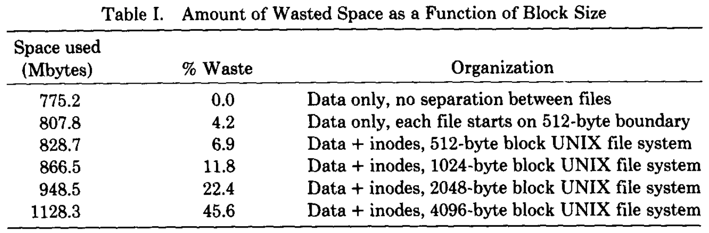
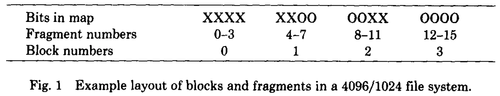

<!DOCTYPE html>
<html><head><title>논문 - A Fast File System for UNIX</title><meta charSet="utf-8"/><meta name="viewport" content="width=device-width, initial-scale=1.0"/><meta property="og:title" content="논문 - A Fast File System for UNIX"/><meta property="og:description" content="본 글은 Marshall K. McKusick 의 논문 A Fast File System for UNIX (ACM TOCS &amp;#039;84) 를 읽고 정리한 글입니다. 별도의 명시가 없는 한, 본 글의 모든 그림은 위 논문에서 가져왔습니다. 본 문서는 아직 #draft 상태입니다."/><meta property="og:image" content="https://mdg.haeramk.im/static/og-image.png"/><meta property="og:width" content="1200"/><meta property="og:height" content="675"/><link rel="icon" href="../../../static/icon.png"/><meta name="description" content="본 글은 Marshall K. McKusick 의 논문 A Fast File System for UNIX (ACM TOCS &amp;#039;84) 를 읽고 정리한 글입니다. 별도의 명시가 없는 한, 본 글의 모든 그림은 위 논문에서 가져왔습니다. 본 문서는 아직 #draft 상태입니다."/><meta name="generator" content="Quartz"/><link rel="preconnect" href="https://fonts.googleapis.com"/><link rel="preconnect" href="https://fonts.gstatic.com"/><link href="../../../index.css" rel="stylesheet" type="text/css" spa-preserve/><link href="https://cdn.jsdelivr.net/npm/katex@0.16.0/dist/katex.min.css" rel="stylesheet" type="text/css" spa-preserve/><link href="https://fonts.googleapis.com/css2?family=IBM Plex Mono&amp;family=Gowun Batang:wght@400;700&amp;family=Gowun Dodum:ital,wght@0,400;0,600;1,400;1,600&amp;display=swap" rel="stylesheet" type="text/css" spa-preserve/><script src="../../../prescript.js" type="application/javascript" spa-preserve></script><script type="application/javascript" spa-preserve>const fetchData = fetch(`../../../static/contentIndex.json`).then(data => data.json())</script></head><body data-slug="botanicals/os/papers/논문---A-Fast-File-System-for-UNIX"><div id="quartz-root" class="page"><div id="quartz-body"><div class="left sidebar"><h1 class="page-title "><a href="../../..">Madison Digital Garden</a></h1><div class="spacer mobile-only"></div><div class="search "><div id="search-icon"><p>Search</p><div></div><svg tabIndex="0" aria-labelledby="title desc" role="img" xmlns="http://www.w3.org/2000/svg" viewBox="0 0 19.9 19.7"><title id="title">Search</title><desc id="desc">Search</desc><g class="search-path" fill="none"><path stroke-linecap="square" d="M18.5 18.3l-5.4-5.4"></path><circle cx="8" cy="8" r="7"></circle></g></svg></div><div id="search-container"><div id="search-space"><input autocomplete="off" id="search-bar" name="search" type="text" aria-label="Search for something" placeholder="Search for something"/><div id="results-container"></div></div></div></div><div class="darkmode "><input class="toggle" id="darkmode-toggle" type="checkbox" tabIndex="-1"/><label id="toggle-label-light" for="darkmode-toggle" tabIndex="-1"><svg xmlns="http://www.w3.org/2000/svg" xmlnsXlink="http://www.w3.org/1999/xlink" version="1.1" id="dayIcon" x="0px" y="0px" viewBox="0 0 35 35" style="enable-background:new 0 0 35 35;" xmlSpace="preserve"><title>Light mode</title><path d="M6,17.5C6,16.672,5.328,16,4.5,16h-3C0.672,16,0,16.672,0,17.5    S0.672,19,1.5,19h3C5.328,19,6,18.328,6,17.5z M7.5,26c-0.414,0-0.789,0.168-1.061,0.439l-2,2C4.168,28.711,4,29.086,4,29.5    C4,30.328,4.671,31,5.5,31c0.414,0,0.789-0.168,1.06-0.44l2-2C8.832,28.289,9,27.914,9,27.5C9,26.672,8.329,26,7.5,26z M17.5,6    C18.329,6,19,5.328,19,4.5v-3C19,0.672,18.329,0,17.5,0S16,0.672,16,1.5v3C16,5.328,16.671,6,17.5,6z M27.5,9    c0.414,0,0.789-0.168,1.06-0.439l2-2C30.832,6.289,31,5.914,31,5.5C31,4.672,30.329,4,29.5,4c-0.414,0-0.789,0.168-1.061,0.44    l-2,2C26.168,6.711,26,7.086,26,7.5C26,8.328,26.671,9,27.5,9z M6.439,8.561C6.711,8.832,7.086,9,7.5,9C8.328,9,9,8.328,9,7.5    c0-0.414-0.168-0.789-0.439-1.061l-2-2C6.289,4.168,5.914,4,5.5,4C4.672,4,4,4.672,4,5.5c0,0.414,0.168,0.789,0.439,1.06    L6.439,8.561z M33.5,16h-3c-0.828,0-1.5,0.672-1.5,1.5s0.672,1.5,1.5,1.5h3c0.828,0,1.5-0.672,1.5-1.5S34.328,16,33.5,16z     M28.561,26.439C28.289,26.168,27.914,26,27.5,26c-0.828,0-1.5,0.672-1.5,1.5c0,0.414,0.168,0.789,0.439,1.06l2,2    C28.711,30.832,29.086,31,29.5,31c0.828,0,1.5-0.672,1.5-1.5c0-0.414-0.168-0.789-0.439-1.061L28.561,26.439z M17.5,29    c-0.829,0-1.5,0.672-1.5,1.5v3c0,0.828,0.671,1.5,1.5,1.5s1.5-0.672,1.5-1.5v-3C19,29.672,18.329,29,17.5,29z M17.5,7    C11.71,7,7,11.71,7,17.5S11.71,28,17.5,28S28,23.29,28,17.5S23.29,7,17.5,7z M17.5,25c-4.136,0-7.5-3.364-7.5-7.5    c0-4.136,3.364-7.5,7.5-7.5c4.136,0,7.5,3.364,7.5,7.5C25,21.636,21.636,25,17.5,25z"></path></svg></label><label id="toggle-label-dark" for="darkmode-toggle" tabIndex="-1"><svg xmlns="http://www.w3.org/2000/svg" xmlnsXlink="http://www.w3.org/1999/xlink" version="1.1" id="nightIcon" x="0px" y="0px" viewBox="0 0 100 100" style="enable-background='new 0 0 100 100'" xmlSpace="preserve"><title>Dark mode</title><path d="M96.76,66.458c-0.853-0.852-2.15-1.064-3.23-0.534c-6.063,2.991-12.858,4.571-19.655,4.571  C62.022,70.495,50.88,65.88,42.5,57.5C29.043,44.043,25.658,23.536,34.076,6.47c0.532-1.08,0.318-2.379-0.534-3.23  c-0.851-0.852-2.15-1.064-3.23-0.534c-4.918,2.427-9.375,5.619-13.246,9.491c-9.447,9.447-14.65,22.008-14.65,35.369  c0,13.36,5.203,25.921,14.65,35.368s22.008,14.65,35.368,14.65c13.361,0,25.921-5.203,35.369-14.65  c3.872-3.871,7.064-8.328,9.491-13.246C97.826,68.608,97.611,67.309,96.76,66.458z"></path></svg></label></div><div class="explorer desktop-only"><button type="button" id="explorer" data-behavior="collapse" data-collapsed="collapsed" data-savestate="true" data-tree="[{&quot;path&quot;:&quot;archives&quot;,&quot;collapsed&quot;:true},{&quot;path&quot;:&quot;archives/microelectronics.spring.2021.cse.cnu.ac.kr&quot;,&quot;collapsed&quot;:true},{&quot;path&quot;:&quot;archives/practicalcoding.spring.2021.cse.cnu.ac.kr&quot;,&quot;collapsed&quot;:true},{&quot;path&quot;:&quot;botanicals&quot;,&quot;collapsed&quot;:true},{&quot;path&quot;:&quot;botanicals/ai-ml-dl&quot;,&quot;collapsed&quot;:true},{&quot;path&quot;:&quot;botanicals/ai-ml-dl/draft&quot;,&quot;collapsed&quot;:true},{&quot;path&quot;:&quot;botanicals/algorithm&quot;,&quot;collapsed&quot;:true},{&quot;path&quot;:&quot;botanicals/algorithm/algorithm&quot;,&quot;collapsed&quot;:true},{&quot;path&quot;:&quot;botanicals/algorithm/algorithm/sort&quot;,&quot;collapsed&quot;:true},{&quot;path&quot;:&quot;botanicals/algorithm/data-structure&quot;,&quot;collapsed&quot;:true},{&quot;path&quot;:&quot;botanicals/algorithm/data-structure/linear&quot;,&quot;collapsed&quot;:true},{&quot;path&quot;:&quot;botanicals/algorithm/data-structure/map&quot;,&quot;collapsed&quot;:true},{&quot;path&quot;:&quot;botanicals/algorithm/data-structure/tree&quot;,&quot;collapsed&quot;:true},{&quot;path&quot;:&quot;botanicals/algorithm/draft&quot;,&quot;collapsed&quot;:true},{&quot;path&quot;:&quot;botanicals/c-cpp&quot;,&quot;collapsed&quot;:true},{&quot;path&quot;:&quot;botanicals/c-cpp/c&quot;,&quot;collapsed&quot;:true},{&quot;path&quot;:&quot;botanicals/c-cpp/cpp&quot;,&quot;collapsed&quot;:true},{&quot;path&quot;:&quot;botanicals/cybersecurity&quot;,&quot;collapsed&quot;:true},{&quot;path&quot;:&quot;botanicals/cybersecurity/hash&quot;,&quot;collapsed&quot;:true},{&quot;path&quot;:&quot;botanicals/cybersecurity/hash/terms&quot;,&quot;collapsed&quot;:true},{&quot;path&quot;:&quot;botanicals/cybersecurity/PKC&quot;,&quot;collapsed&quot;:true},{&quot;path&quot;:&quot;botanicals/cybersecurity/PKC/draft&quot;,&quot;collapsed&quot;:true},{&quot;path&quot;:&quot;botanicals/cybersecurity/PKC/story&quot;,&quot;collapsed&quot;:true},{&quot;path&quot;:&quot;botanicals/cybersecurity/PKC/terms&quot;,&quot;collapsed&quot;:true},{&quot;path&quot;:&quot;botanicals/cybersecurity/PKIX&quot;,&quot;collapsed&quot;:true},{&quot;path&quot;:&quot;botanicals/cybersecurity/PKIX/draft&quot;,&quot;collapsed&quot;:true},{&quot;path&quot;:&quot;botanicals/cybersecurity/PKIX/terms&quot;,&quot;collapsed&quot;:true},{&quot;path&quot;:&quot;botanicals/database&quot;,&quot;collapsed&quot;:true},{&quot;path&quot;:&quot;botanicals/database/draft&quot;,&quot;collapsed&quot;:true},{&quot;path&quot;:&quot;botanicals/database/elasticsearch&quot;,&quot;collapsed&quot;:true},{&quot;path&quot;:&quot;botanicals/database/elasticsearch/story&quot;,&quot;collapsed&quot;:true},{&quot;path&quot;:&quot;botanicals/database/elasticsearch/terms&quot;,&quot;collapsed&quot;:true},{&quot;path&quot;:&quot;botanicals/database/rocksdb&quot;,&quot;collapsed&quot;:true},{&quot;path&quot;:&quot;botanicals/kubernetes&quot;,&quot;collapsed&quot;:true},{&quot;path&quot;:&quot;botanicals/kubernetes/docs&quot;,&quot;collapsed&quot;:true},{&quot;path&quot;:&quot;botanicals/kubernetes/troubleshoots&quot;,&quot;collapsed&quot;:true},{&quot;path&quot;:&quot;botanicals/networks&quot;,&quot;collapsed&quot;:true},{&quot;path&quot;:&quot;botanicals/networks/bgp&quot;,&quot;collapsed&quot;:true},{&quot;path&quot;:&quot;botanicals/networks/bgp/draft&quot;,&quot;collapsed&quot;:true},{&quot;path&quot;:&quot;botanicals/networks/bgp/terms&quot;,&quot;collapsed&quot;:true},{&quot;path&quot;:&quot;botanicals/networks/dns&quot;,&quot;collapsed&quot;:true},{&quot;path&quot;:&quot;botanicals/networks/dns/papers&quot;,&quot;collapsed&quot;:true},{&quot;path&quot;:&quot;botanicals/networks/dns/terms&quot;,&quot;collapsed&quot;:true},{&quot;path&quot;:&quot;botanicals/networks/draft&quot;,&quot;collapsed&quot;:true},{&quot;path&quot;:&quot;botanicals/networks/http&quot;,&quot;collapsed&quot;:true},{&quot;path&quot;:&quot;botanicals/networks/http/terms&quot;,&quot;collapsed&quot;:true},{&quot;path&quot;:&quot;botanicals/networks/terms&quot;,&quot;collapsed&quot;:true},{&quot;path&quot;:&quot;botanicals/networks/tls&quot;,&quot;collapsed&quot;:true},{&quot;path&quot;:&quot;botanicals/networks/tls/terms&quot;,&quot;collapsed&quot;:true},{&quot;path&quot;:&quot;botanicals/networks/vrrp&quot;,&quot;collapsed&quot;:true},{&quot;path&quot;:&quot;botanicals/networks/vrrp/terms&quot;,&quot;collapsed&quot;:true},{&quot;path&quot;:&quot;botanicals/os&quot;,&quot;collapsed&quot;:true},{&quot;path&quot;:&quot;botanicals/os/fs&quot;,&quot;collapsed&quot;:true},{&quot;path&quot;:&quot;botanicals/os/fs/draft&quot;,&quot;collapsed&quot;:true},{&quot;path&quot;:&quot;botanicals/os/memory&quot;,&quot;collapsed&quot;:true},{&quot;path&quot;:&quot;botanicals/os/memory/draft&quot;,&quot;collapsed&quot;:true},{&quot;path&quot;:&quot;botanicals/os/papers&quot;,&quot;collapsed&quot;:true},{&quot;path&quot;:&quot;botanicals/os/papers/draft&quot;,&quot;collapsed&quot;:true},{&quot;path&quot;:&quot;botanicals/os/procfs&quot;,&quot;collapsed&quot;:true},{&quot;path&quot;:&quot;botanicals/os/replacement-policy&quot;,&quot;collapsed&quot;:true},{&quot;path&quot;:&quot;botanicals/os/replacement-policy/draft&quot;,&quot;collapsed&quot;:true},{&quot;path&quot;:&quot;botanicals/os/terms&quot;,&quot;collapsed&quot;:true},{&quot;path&quot;:&quot;botanicals/proxmox-vm&quot;,&quot;collapsed&quot;:true},{&quot;path&quot;:&quot;botanicals/proxmox-vm/story&quot;,&quot;collapsed&quot;:true},{&quot;path&quot;:&quot;botanicals/shellscript&quot;,&quot;collapsed&quot;:true},{&quot;path&quot;:&quot;botanicals/shellscript/apt&quot;,&quot;collapsed&quot;:true},{&quot;path&quot;:&quot;botanicals/shellscript/arp&quot;,&quot;collapsed&quot;:true},{&quot;path&quot;:&quot;botanicals/shellscript/bash&quot;,&quot;collapsed&quot;:true},{&quot;path&quot;:&quot;botanicals/shellscript/bash/alias&quot;,&quot;collapsed&quot;:true},{&quot;path&quot;:&quot;botanicals/shellscript/bash/conditional&quot;,&quot;collapsed&quot;:true},{&quot;path&quot;:&quot;botanicals/shellscript/bash/env&quot;,&quot;collapsed&quot;:true},{&quot;path&quot;:&quot;botanicals/shellscript/bash/list&quot;,&quot;collapsed&quot;:true},{&quot;path&quot;:&quot;botanicals/shellscript/bash/substitution&quot;,&quot;collapsed&quot;:true},{&quot;path&quot;:&quot;botanicals/shellscript/ca-certificates&quot;,&quot;collapsed&quot;:true},{&quot;path&quot;:&quot;botanicals/shellscript/curl&quot;,&quot;collapsed&quot;:true},{&quot;path&quot;:&quot;botanicals/shellscript/df&quot;,&quot;collapsed&quot;:true},{&quot;path&quot;:&quot;botanicals/shellscript/expr&quot;,&quot;collapsed&quot;:true},{&quot;path&quot;:&quot;botanicals/shellscript/fdisk&quot;,&quot;collapsed&quot;:true},{&quot;path&quot;:&quot;botanicals/shellscript/nvme&quot;,&quot;collapsed&quot;:true},{&quot;path&quot;:&quot;botanicals/shellscript/nvme/zns&quot;,&quot;collapsed&quot;:true},{&quot;path&quot;:&quot;botanicals/shellscript/openssl&quot;,&quot;collapsed&quot;:true},{&quot;path&quot;:&quot;botanicals/shellscript/story&quot;,&quot;collapsed&quot;:true},{&quot;path&quot;:&quot;botanicals/shellscript/tar&quot;,&quot;collapsed&quot;:true},{&quot;path&quot;:&quot;botanicals/shellscript/tcpdump&quot;,&quot;collapsed&quot;:true},{&quot;path&quot;:&quot;botanicals/shellscript/tr&quot;,&quot;collapsed&quot;:true},{&quot;path&quot;:&quot;botanicals/shellscript/watch&quot;,&quot;collapsed&quot;:true},{&quot;path&quot;:&quot;botanicals/storage&quot;,&quot;collapsed&quot;:true},{&quot;path&quot;:&quot;botanicals/storage/draft&quot;,&quot;collapsed&quot;:true},{&quot;path&quot;:&quot;botanicals/storage/nvme&quot;,&quot;collapsed&quot;:true},{&quot;path&quot;:&quot;botanicals/storage/nvme/draft&quot;,&quot;collapsed&quot;:true},{&quot;path&quot;:&quot;botanicals/storage/nvme/terms&quot;,&quot;collapsed&quot;:true},{&quot;path&quot;:&quot;botanicals/storage/nvmevirt&quot;,&quot;collapsed&quot;:true},{&quot;path&quot;:&quot;botanicals/storage/nvmevirt/draft&quot;,&quot;collapsed&quot;:true},{&quot;path&quot;:&quot;botanicals/storage/papers&quot;,&quot;collapsed&quot;:true},{&quot;path&quot;:&quot;botanicals/storage/papers/draft&quot;,&quot;collapsed&quot;:true},{&quot;path&quot;:&quot;botanicals/storage/terms&quot;,&quot;collapsed&quot;:true},{&quot;path&quot;:&quot;drafts&quot;,&quot;collapsed&quot;:true},{&quot;path&quot;:&quot;mgmt&quot;,&quot;collapsed&quot;:true},{&quot;path&quot;:&quot;originals&quot;,&quot;collapsed&quot;:true},{&quot;path&quot;:&quot;originals/aos.spring.2024.cse.snu.ac.kr&quot;,&quot;collapsed&quot;:true},{&quot;path&quot;:&quot;originals/comnet.fall.2021.cse.cnu.ac.kr&quot;,&quot;collapsed&quot;:true},{&quot;path&quot;:&quot;originals/comnet.spring.2024.cse.snu.ac.kr&quot;,&quot;collapsed&quot;:true},{&quot;path&quot;:&quot;originals/compiler.fall.2021.cse.cnu.ac.kr&quot;,&quot;collapsed&quot;:true},{&quot;path&quot;:&quot;originals/datacommunication.spring.2021.cse.cnu.ac.kr&quot;,&quot;collapsed&quot;:true},{&quot;path&quot;:&quot;originals/jumptopython.books.wikidocs.net&quot;,&quot;collapsed&quot;:true},{&quot;path&quot;:&quot;originals/kubernetes.jan.2023.si-analytics.ai&quot;,&quot;collapsed&quot;:true},{&quot;path&quot;:&quot;originals/os.bahn.ewha.kocw.net&quot;,&quot;collapsed&quot;:true},{&quot;path&quot;:&quot;originals/os.spring.2021.cse.cnu.ac.kr&quot;,&quot;collapsed&quot;:true},{&quot;path&quot;:&quot;originals/pl.spring.2021.cse.cnu.ac.kr&quot;,&quot;collapsed&quot;:true},{&quot;path&quot;:&quot;originals/softwareengineering.fall.2021.cse.cnu.ac.kr&quot;,&quot;collapsed&quot;:true},{&quot;path&quot;:&quot;originals/webprogramming.fall.2021.cse.cnu.ac.kr&quot;,&quot;collapsed&quot;:true}]"><h1>Explorer</h1><svg xmlns="http://www.w3.org/2000/svg" width="14" height="14" viewBox="5 8 14 8" fill="none" stroke="currentColor" stroke-width="2" stroke-linecap="round" stroke-linejoin="round" class="fold"><polyline points="6 9 12 15 18 9"></polyline></svg></button><div id="explorer-content"><ul class="overflow" id="explorer-ul"><li><div><div class="folder-outer open"><ul style="padding-left:0;" class="content" data-folderul><li><div><div class="folder-container"><svg xmlns="http://www.w3.org/2000/svg" width="12" height="12" viewBox="5 8 14 8" fill="none" stroke="currentColor" stroke-width="2" stroke-linecap="round" stroke-linejoin="round" class="folder-icon"><polyline points="6 9 12 15 18 9"></polyline></svg><div data-folderpath="/archives"><button class="folder-button"><p class="folder-title">archives</p></button></div></div><div class="folder-outer "><ul style="padding-left:1.4rem;" class="content" data-folderul="/archives"><li><div><div class="folder-container"><svg xmlns="http://www.w3.org/2000/svg" width="12" height="12" viewBox="5 8 14 8" fill="none" stroke="currentColor" stroke-width="2" stroke-linecap="round" stroke-linejoin="round" class="folder-icon"><polyline points="6 9 12 15 18 9"></polyline></svg><div data-folderpath="/archives/microelectronics.spring.2021.cse.cnu.ac.kr"><button class="folder-button"><p class="folder-title">microelectronics.spring.2021.cse.cnu.ac.kr</p></button></div></div><div class="folder-outer "><ul style="padding-left:1.4rem;" class="content" data-folderul="/archives/microelectronics.spring.2021.cse.cnu.ac.kr"><li><li><a href="../../../archives/microelectronics.spring.2021.cse.cnu.ac.kr/(충남대)-전자회로-강의록" data-for="archives/microelectronics.spring.2021.cse.cnu.ac.kr/(충남대)-전자회로-강의록">(충남대) 전자회로 강의록</a></li></li><li><li><a href="../../../archives/microelectronics.spring.2021.cse.cnu.ac.kr/01.-강의-개요" data-for="archives/microelectronics.spring.2021.cse.cnu.ac.kr/01.-강의-개요">01. 강의 개요</a></li></li><li><li><a href="../../../archives/microelectronics.spring.2021.cse.cnu.ac.kr/02.-전하,-전압,-전류" data-for="archives/microelectronics.spring.2021.cse.cnu.ac.kr/02.-전하,-전압,-전류">02. 전하, 전압, 전류</a></li></li><li><li><a href="../../../archives/microelectronics.spring.2021.cse.cnu.ac.kr/03.-파워,-저항의-직렬병렬연결" data-for="archives/microelectronics.spring.2021.cse.cnu.ac.kr/03.-파워,-저항의-직렬병렬연결">03. 파워, 저항의 직렬병렬연결</a></li></li><li><li><a href="../../../archives/microelectronics.spring.2021.cse.cnu.ac.kr/04.-전압원,-전류원" data-for="archives/microelectronics.spring.2021.cse.cnu.ac.kr/04.-전압원,-전류원">04. 전압원, 전류원</a></li></li><li><li><a href="../../../archives/microelectronics.spring.2021.cse.cnu.ac.kr/05.-캐패시터" data-for="archives/microelectronics.spring.2021.cse.cnu.ac.kr/05.-캐패시터">05. 캐패시터</a></li></li><li><li><a href="../../../archives/microelectronics.spring.2021.cse.cnu.ac.kr/06.-인덕터" data-for="archives/microelectronics.spring.2021.cse.cnu.ac.kr/06.-인덕터">06. 인덕터</a></li></li><li><li><a href="../../../archives/microelectronics.spring.2021.cse.cnu.ac.kr/07.-교류-신호" data-for="archives/microelectronics.spring.2021.cse.cnu.ac.kr/07.-교류-신호">07. 교류 신호</a></li></li><li><li><a href="../../../archives/microelectronics.spring.2021.cse.cnu.ac.kr/08.-리액턴스" data-for="archives/microelectronics.spring.2021.cse.cnu.ac.kr/08.-리액턴스">08. 리액턴스</a></li></li><li><li><a href="../../../archives/microelectronics.spring.2021.cse.cnu.ac.kr/09.-반도체,-P-N-도핑" data-for="archives/microelectronics.spring.2021.cse.cnu.ac.kr/09.-반도체,-P-N-도핑">09. 반도체, P N 도핑</a></li></li><li><li><a href="../../../archives/microelectronics.spring.2021.cse.cnu.ac.kr/10.-다이오드" data-for="archives/microelectronics.spring.2021.cse.cnu.ac.kr/10.-다이오드">10. 다이오드</a></li></li><li><li><a href="../../../archives/microelectronics.spring.2021.cse.cnu.ac.kr/11.-트랜지스터" data-for="archives/microelectronics.spring.2021.cse.cnu.ac.kr/11.-트랜지스터">11. 트랜지스터</a></li></li><li><li><a href="../../../archives/microelectronics.spring.2021.cse.cnu.ac.kr/12.-등가회로" data-for="archives/microelectronics.spring.2021.cse.cnu.ac.kr/12.-등가회로">12. 등가회로</a></li></li><li><li><a href="../../../archives/microelectronics.spring.2021.cse.cnu.ac.kr/13.-트랜지스터-Biasing" data-for="archives/microelectronics.spring.2021.cse.cnu.ac.kr/13.-트랜지스터-Biasing">13. 트랜지스터 Biasing</a></li></li><li><li><a href="../../../archives/microelectronics.spring.2021.cse.cnu.ac.kr/14.-CS-증폭기" data-for="archives/microelectronics.spring.2021.cse.cnu.ac.kr/14.-CS-증폭기">14. CS 증폭기</a></li></li><li><li><a href="../../../archives/microelectronics.spring.2021.cse.cnu.ac.kr/15.-CMOS" data-for="archives/microelectronics.spring.2021.cse.cnu.ac.kr/15.-CMOS">15. CMOS</a></li></li></ul></div></div></li><li><div><div class="folder-container"><svg xmlns="http://www.w3.org/2000/svg" width="12" height="12" viewBox="5 8 14 8" fill="none" stroke="currentColor" stroke-width="2" stroke-linecap="round" stroke-linejoin="round" class="folder-icon"><polyline points="6 9 12 15 18 9"></polyline></svg><div data-folderpath="/archives/practicalcoding.spring.2021.cse.cnu.ac.kr"><button class="folder-button"><p class="folder-title">practicalcoding.spring.2021.cse.cnu.ac.kr</p></button></div></div><div class="folder-outer "><ul style="padding-left:1.4rem;" class="content" data-folderul="/archives/practicalcoding.spring.2021.cse.cnu.ac.kr"><li><li><a href="../../../archives/practicalcoding.spring.2021.cse.cnu.ac.kr/(충남대)-실전코딩-강의록" data-for="archives/practicalcoding.spring.2021.cse.cnu.ac.kr/(충남대)-실전코딩-강의록">(충남대) 실전코딩 강의록</a></li></li><li><li><a href="../../../archives/practicalcoding.spring.2021.cse.cnu.ac.kr/01.-개발-프로세스" data-for="archives/practicalcoding.spring.2021.cse.cnu.ac.kr/01.-개발-프로세스">01. 개발 프로세스</a></li></li><li><li><a href="../../../archives/practicalcoding.spring.2021.cse.cnu.ac.kr/02.-Git-(1)" data-for="archives/practicalcoding.spring.2021.cse.cnu.ac.kr/02.-Git-(1)">02. Git (1)</a></li></li><li><li><a href="../../../archives/practicalcoding.spring.2021.cse.cnu.ac.kr/03.-Git-(2)" data-for="archives/practicalcoding.spring.2021.cse.cnu.ac.kr/03.-Git-(2)">03. Git (2)</a></li></li><li><li><a href="../../../archives/practicalcoding.spring.2021.cse.cnu.ac.kr/04.-Backend-개발-(1)" data-for="archives/practicalcoding.spring.2021.cse.cnu.ac.kr/04.-Backend-개발-(1)">04. Backend 개발 (1)</a></li></li><li><li><a href="../../../archives/practicalcoding.spring.2021.cse.cnu.ac.kr/05.-Backend-개발-(2)" data-for="archives/practicalcoding.spring.2021.cse.cnu.ac.kr/05.-Backend-개발-(2)">05. Backend 개발 (2)</a></li></li><li><li><a href="../../../archives/practicalcoding.spring.2021.cse.cnu.ac.kr/06.-Spring-Boot-Annotation" data-for="archives/practicalcoding.spring.2021.cse.cnu.ac.kr/06.-Spring-Boot-Annotation">06. Spring Boot Annotation</a></li></li><li><li><a href="../../../archives/practicalcoding.spring.2021.cse.cnu.ac.kr/07.-MSA-(1)" data-for="archives/practicalcoding.spring.2021.cse.cnu.ac.kr/07.-MSA-(1)">07. MSA (1)</a></li></li><li><li><a href="../../../archives/practicalcoding.spring.2021.cse.cnu.ac.kr/08.-MSA-(2)" data-for="archives/practicalcoding.spring.2021.cse.cnu.ac.kr/08.-MSA-(2)">08. MSA (2)</a></li></li><li><li><a href="../../../archives/practicalcoding.spring.2021.cse.cnu.ac.kr/09.-테스팅" data-for="archives/practicalcoding.spring.2021.cse.cnu.ac.kr/09.-테스팅">09. 테스팅</a></li></li><li><li><a href="../../../archives/practicalcoding.spring.2021.cse.cnu.ac.kr/10.-Frontend-개발" data-for="archives/practicalcoding.spring.2021.cse.cnu.ac.kr/10.-Frontend-개발">10. Frontend 개발</a></li></li></ul></div></div></li><li><li><a href="../../../archives/아까이브-갈든---Archive-Garden" data-for="archives/아까이브-갈든---Archive-Garden">아까이브 갈든 - Archive Garden</a></li></li></ul></div></div></li><li><div><div class="folder-container"><svg xmlns="http://www.w3.org/2000/svg" width="12" height="12" viewBox="5 8 14 8" fill="none" stroke="currentColor" stroke-width="2" stroke-linecap="round" stroke-linejoin="round" class="folder-icon"><polyline points="6 9 12 15 18 9"></polyline></svg><div data-folderpath="/botanicals"><button class="folder-button"><p class="folder-title">botanicals</p></button></div></div><div class="folder-outer "><ul style="padding-left:1.4rem;" class="content" data-folderul="/botanicals"><li><div><div class="folder-container"><svg xmlns="http://www.w3.org/2000/svg" width="12" height="12" viewBox="5 8 14 8" fill="none" stroke="currentColor" stroke-width="2" stroke-linecap="round" stroke-linejoin="round" class="folder-icon"><polyline points="6 9 12 15 18 9"></polyline></svg><div data-folderpath="/botanicals/ai-ml-dl"><button class="folder-button"><p class="folder-title">ai-ml-dl</p></button></div></div><div class="folder-outer "><ul style="padding-left:1.4rem;" class="content" data-folderul="/botanicals/ai-ml-dl"><li><div><div class="folder-container"><svg xmlns="http://www.w3.org/2000/svg" width="12" height="12" viewBox="5 8 14 8" fill="none" stroke="currentColor" stroke-width="2" stroke-linecap="round" stroke-linejoin="round" class="folder-icon"><polyline points="6 9 12 15 18 9"></polyline></svg><div data-folderpath="/botanicals/ai-ml-dl/draft"><button class="folder-button"><p class="folder-title">draft</p></button></div></div><div class="folder-outer "><ul style="padding-left:1.4rem;" class="content" data-folderul="/botanicals/ai-ml-dl/draft"><li><li><a href="../../../botanicals/ai-ml-dl/draft/3세-응애를-위한-기본적인-MLDL-개념-정리" data-for="botanicals/ai-ml-dl/draft/3세-응애를-위한-기본적인-MLDL-개념-정리">3세 응애를 위한 기본적인 MLDL 개념 정리</a></li></li></ul></div></div></li></ul></div></div></li><li><div><div class="folder-container"><svg xmlns="http://www.w3.org/2000/svg" width="12" height="12" viewBox="5 8 14 8" fill="none" stroke="currentColor" stroke-width="2" stroke-linecap="round" stroke-linejoin="round" class="folder-icon"><polyline points="6 9 12 15 18 9"></polyline></svg><div data-folderpath="/botanicals/algorithm"><button class="folder-button"><p class="folder-title">algorithm</p></button></div></div><div class="folder-outer "><ul style="padding-left:1.4rem;" class="content" data-folderul="/botanicals/algorithm"><li><div><div class="folder-container"><svg xmlns="http://www.w3.org/2000/svg" width="12" height="12" viewBox="5 8 14 8" fill="none" stroke="currentColor" stroke-width="2" stroke-linecap="round" stroke-linejoin="round" class="folder-icon"><polyline points="6 9 12 15 18 9"></polyline></svg><div data-folderpath="/botanicals/algorithm/algorithm"><button class="folder-button"><p class="folder-title">algorithm</p></button></div></div><div class="folder-outer "><ul style="padding-left:1.4rem;" class="content" data-folderul="/botanicals/algorithm/algorithm"><li><div><div class="folder-container"><svg xmlns="http://www.w3.org/2000/svg" width="12" height="12" viewBox="5 8 14 8" fill="none" stroke="currentColor" stroke-width="2" stroke-linecap="round" stroke-linejoin="round" class="folder-icon"><polyline points="6 9 12 15 18 9"></polyline></svg><div data-folderpath="/botanicals/algorithm/algorithm/sort"><button class="folder-button"><p class="folder-title">sort</p></button></div></div><div class="folder-outer "><ul style="padding-left:1.4rem;" class="content" data-folderul="/botanicals/algorithm/algorithm/sort"><li><li><a href="../../../botanicals/algorithm/algorithm/sort/Merge-Sort-(Algorithm)" data-for="botanicals/algorithm/algorithm/sort/Merge-Sort-(Algorithm)">Merge Sort (Algorithm)</a></li></li></ul></div></div></li></ul></div></div></li><li><div><div class="folder-container"><svg xmlns="http://www.w3.org/2000/svg" width="12" height="12" viewBox="5 8 14 8" fill="none" stroke="currentColor" stroke-width="2" stroke-linecap="round" stroke-linejoin="round" class="folder-icon"><polyline points="6 9 12 15 18 9"></polyline></svg><div data-folderpath="/botanicals/algorithm/data-structure"><button class="folder-button"><p class="folder-title">data-structure</p></button></div></div><div class="folder-outer "><ul style="padding-left:1.4rem;" class="content" data-folderul="/botanicals/algorithm/data-structure"><li><div><div class="folder-container"><svg xmlns="http://www.w3.org/2000/svg" width="12" height="12" viewBox="5 8 14 8" fill="none" stroke="currentColor" stroke-width="2" stroke-linecap="round" stroke-linejoin="round" class="folder-icon"><polyline points="6 9 12 15 18 9"></polyline></svg><div data-folderpath="/botanicals/algorithm/data-structure/linear"><button class="folder-button"><p class="folder-title">linear</p></button></div></div><div class="folder-outer "><ul style="padding-left:1.4rem;" class="content" data-folderul="/botanicals/algorithm/data-structure/linear"><li><li><a href="../../../botanicals/algorithm/data-structure/linear/Sorted-Run-(Data-Structure)" data-for="botanicals/algorithm/data-structure/linear/Sorted-Run-(Data-Structure)">Sorted Run (Data Structure)</a></li></li></ul></div></div></li><li><div><div class="folder-container"><svg xmlns="http://www.w3.org/2000/svg" width="12" height="12" viewBox="5 8 14 8" fill="none" stroke="currentColor" stroke-width="2" stroke-linecap="round" stroke-linejoin="round" class="folder-icon"><polyline points="6 9 12 15 18 9"></polyline></svg><div data-folderpath="/botanicals/algorithm/data-structure/map"><button class="folder-button"><p class="folder-title">map</p></button></div></div><div class="folder-outer "><ul style="padding-left:1.4rem;" class="content" data-folderul="/botanicals/algorithm/data-structure/map"><li><li><a href="../../../botanicals/algorithm/data-structure/map/Bloom-Filter-(Data-Structure)" data-for="botanicals/algorithm/data-structure/map/Bloom-Filter-(Data-Structure)">Bloom Filter (Data Structure)</a></li></li></ul></div></div></li><li><div><div class="folder-container"><svg xmlns="http://www.w3.org/2000/svg" width="12" height="12" viewBox="5 8 14 8" fill="none" stroke="currentColor" stroke-width="2" stroke-linecap="round" stroke-linejoin="round" class="folder-icon"><polyline points="6 9 12 15 18 9"></polyline></svg><div data-folderpath="/botanicals/algorithm/data-structure/tree"><button class="folder-button"><p class="folder-title">tree</p></button></div></div><div class="folder-outer "><ul style="padding-left:1.4rem;" class="content" data-folderul="/botanicals/algorithm/data-structure/tree"><li><li><a href="../../../botanicals/algorithm/data-structure/tree/Balanced-Tree,-B-Tree-(Data-Structure)" data-for="botanicals/algorithm/data-structure/tree/Balanced-Tree,-B-Tree-(Data-Structure)">Balanced Tree, B Tree (Data Structure)</a></li></li><li><li><a href="../../../botanicals/algorithm/data-structure/tree/Binary-Search-Tree,-BST-(Data-Structure)" data-for="botanicals/algorithm/data-structure/tree/Binary-Search-Tree,-BST-(Data-Structure)">Binary Search Tree, BST (Data Structure)</a></li></li></ul></div></div></li></ul></div></div></li><li><div><div class="folder-container"><svg xmlns="http://www.w3.org/2000/svg" width="12" height="12" viewBox="5 8 14 8" fill="none" stroke="currentColor" stroke-width="2" stroke-linecap="round" stroke-linejoin="round" class="folder-icon"><polyline points="6 9 12 15 18 9"></polyline></svg><div data-folderpath="/botanicals/algorithm/draft"><button class="folder-button"><p class="folder-title">draft</p></button></div></div><div class="folder-outer "><ul style="padding-left:1.4rem;" class="content" data-folderul="/botanicals/algorithm/draft"><li><li><a href="../../../botanicals/algorithm/draft/Log-Structure-Merge-Tree,-LSM-Tree-(Data-Structure)" data-for="botanicals/algorithm/draft/Log-Structure-Merge-Tree,-LSM-Tree-(Data-Structure)">Log Structure Merge Tree, LSM Tree (Data Structure)</a></li></li><li><li><a href="../../../botanicals/algorithm/draft/Skip-List-(Data-Structure)" data-for="botanicals/algorithm/draft/Skip-List-(Data-Structure)">Skip List (Data Structure)</a></li></li><li><li><a href="../../../botanicals/algorithm/draft/Sparse-Index-(Data-Structure)" data-for="botanicals/algorithm/draft/Sparse-Index-(Data-Structure)">Sparse Index (Data Structure)</a></li></li></ul></div></div></li><li><li><a href="../../../botanicals/algorithm/(Botanical-Garden)-Algorithm,-Data-Structure" data-for="botanicals/algorithm/(Botanical-Garden)-Algorithm,-Data-Structure">(Botanical Garden) Algorithm, Data Structure</a></li></li></ul></div></div></li><li><div><div class="folder-container"><svg xmlns="http://www.w3.org/2000/svg" width="12" height="12" viewBox="5 8 14 8" fill="none" stroke="currentColor" stroke-width="2" stroke-linecap="round" stroke-linejoin="round" class="folder-icon"><polyline points="6 9 12 15 18 9"></polyline></svg><div data-folderpath="/botanicals/c-cpp"><button class="folder-button"><p class="folder-title">c-cpp</p></button></div></div><div class="folder-outer "><ul style="padding-left:1.4rem;" class="content" data-folderul="/botanicals/c-cpp"><li><div><div class="folder-container"><svg xmlns="http://www.w3.org/2000/svg" width="12" height="12" viewBox="5 8 14 8" fill="none" stroke="currentColor" stroke-width="2" stroke-linecap="round" stroke-linejoin="round" class="folder-icon"><polyline points="6 9 12 15 18 9"></polyline></svg><div data-folderpath="/botanicals/c-cpp/c"><button class="folder-button"><p class="folder-title">c</p></button></div></div><div class="folder-outer "><ul style="padding-left:1.4rem;" class="content" data-folderul="/botanicals/c-cpp/c"><li><li><a href="../../../botanicals/c-cpp/c/C---printk-format-정리" data-for="botanicals/c-cpp/c/C---printk-format-정리">C - printk format 정리</a></li></li><li><li><a href="../../../botanicals/c-cpp/c/C---세상-간단한-Kernel-module-예시" data-for="botanicals/c-cpp/c/C---세상-간단한-Kernel-module-예시">C - 세상 간단한 Kernel module 예시</a></li></li><li><li><a href="../../../botanicals/c-cpp/c/C---함수-진입,-탈출-메세지-출력하기" data-for="botanicals/c-cpp/c/C---함수-진입,-탈출-메세지-출력하기">C - 함수 진입, 탈출 메세지 출력하기</a></li></li></ul></div></div></li><li><div><div class="folder-container"><svg xmlns="http://www.w3.org/2000/svg" width="12" height="12" viewBox="5 8 14 8" fill="none" stroke="currentColor" stroke-width="2" stroke-linecap="round" stroke-linejoin="round" class="folder-icon"><polyline points="6 9 12 15 18 9"></polyline></svg><div data-folderpath="/botanicals/c-cpp/cpp"><button class="folder-button"><p class="folder-title">cpp</p></button></div></div><div class="folder-outer "><ul style="padding-left:1.4rem;" class="content" data-folderul="/botanicals/c-cpp/cpp"><li><li><a href="../../../botanicals/c-cpp/cpp/Cpp---char-to-string-변환" data-for="botanicals/c-cpp/cpp/Cpp---char-to-string-변환">Cpp - char to string 변환</a></li></li><li><li><a href="../../../botanicals/c-cpp/cpp/Cpp---size()-의-사칙연산-주의할-것" data-for="botanicals/c-cpp/cpp/Cpp---size()-의-사칙연산-주의할-것">Cpp - size() 의 사칙연산 주의할 것</a></li></li><li><li><a href="../../../botanicals/c-cpp/cpp/Cpp---Vexing-Parse" data-for="botanicals/c-cpp/cpp/Cpp---Vexing-Parse">Cpp - Vexing Parse</a></li></li><li><li><a href="../../../botanicals/c-cpp/cpp/Cpp---명령줄-인수-(Command-line-arguments)-처리하기" data-for="botanicals/c-cpp/cpp/Cpp---명령줄-인수-(Command-line-arguments)-처리하기">Cpp - 명령줄 인수 (Command-line arguments) 처리하기</a></li></li></ul></div></div></li><li><li><a href="../../../botanicals/c-cpp/(Botanical-Garden)-C,-Cpp" data-for="botanicals/c-cpp/(Botanical-Garden)-C,-Cpp">(Botanical Garden) C, Cpp</a></li></li></ul></div></div></li><li><div><div class="folder-container"><svg xmlns="http://www.w3.org/2000/svg" width="12" height="12" viewBox="5 8 14 8" fill="none" stroke="currentColor" stroke-width="2" stroke-linecap="round" stroke-linejoin="round" class="folder-icon"><polyline points="6 9 12 15 18 9"></polyline></svg><div data-folderpath="/botanicals/cybersecurity"><button class="folder-button"><p class="folder-title">cybersecurity</p></button></div></div><div class="folder-outer "><ul style="padding-left:1.4rem;" class="content" data-folderul="/botanicals/cybersecurity"><li><div><div class="folder-container"><svg xmlns="http://www.w3.org/2000/svg" width="12" height="12" viewBox="5 8 14 8" fill="none" stroke="currentColor" stroke-width="2" stroke-linecap="round" stroke-linejoin="round" class="folder-icon"><polyline points="6 9 12 15 18 9"></polyline></svg><div data-folderpath="/botanicals/cybersecurity/hash"><button class="folder-button"><p class="folder-title">hash</p></button></div></div><div class="folder-outer "><ul style="padding-left:1.4rem;" class="content" data-folderul="/botanicals/cybersecurity/hash"><li><div><div class="folder-container"><svg xmlns="http://www.w3.org/2000/svg" width="12" height="12" viewBox="5 8 14 8" fill="none" stroke="currentColor" stroke-width="2" stroke-linecap="round" stroke-linejoin="round" class="folder-icon"><polyline points="6 9 12 15 18 9"></polyline></svg><div data-folderpath="/botanicals/cybersecurity/hash/terms"><button class="folder-button"><p class="folder-title">terms</p></button></div></div><div class="folder-outer "><ul style="padding-left:1.4rem;" class="content" data-folderul="/botanicals/cybersecurity/hash/terms"><li><li><a href="../../../botanicals/cybersecurity/hash/terms/Hash-Message-Authentication-Code,-HMAC-(Hash)" data-for="botanicals/cybersecurity/hash/terms/Hash-Message-Authentication-Code,-HMAC-(Hash)">Hash Message Authentication Code, HMAC (Hash)</a></li></li><li><li><a href="../../../botanicals/cybersecurity/hash/terms/Hash-Pointer-(Hash)" data-for="botanicals/cybersecurity/hash/terms/Hash-Pointer-(Hash)">Hash Pointer (Hash)</a></li></li><li><li><a href="../../../botanicals/cybersecurity/hash/terms/Merkle-Tree-(Hash)" data-for="botanicals/cybersecurity/hash/terms/Merkle-Tree-(Hash)">Merkle Tree (Hash)</a></li></li></ul></div></div></li><li><li><a href="../../../botanicals/cybersecurity/hash/Hash-(Hash)" data-for="botanicals/cybersecurity/hash/Hash-(Hash)">Hash (Hash)</a></li></li></ul></div></div></li><li><div><div class="folder-container"><svg xmlns="http://www.w3.org/2000/svg" width="12" height="12" viewBox="5 8 14 8" fill="none" stroke="currentColor" stroke-width="2" stroke-linecap="round" stroke-linejoin="round" class="folder-icon"><polyline points="6 9 12 15 18 9"></polyline></svg><div data-folderpath="/botanicals/cybersecurity/PKC"><button class="folder-button"><p class="folder-title">PKC</p></button></div></div><div class="folder-outer "><ul style="padding-left:1.4rem;" class="content" data-folderul="/botanicals/cybersecurity/PKC"><li><div><div class="folder-container"><svg xmlns="http://www.w3.org/2000/svg" width="12" height="12" viewBox="5 8 14 8" fill="none" stroke="currentColor" stroke-width="2" stroke-linecap="round" stroke-linejoin="round" class="folder-icon"><polyline points="6 9 12 15 18 9"></polyline></svg><div data-folderpath="/botanicals/cybersecurity/PKC/draft"><button class="folder-button"><p class="folder-title">draft</p></button></div></div><div class="folder-outer "><ul style="padding-left:1.4rem;" class="content" data-folderul="/botanicals/cybersecurity/PKC/draft"><li><li><a href="../../../botanicals/cybersecurity/PKC/draft/Diffie-Hellman-Ephimeral,-DHE-(PKC)" data-for="botanicals/cybersecurity/PKC/draft/Diffie-Hellman-Ephimeral,-DHE-(PKC)">Diffie-Hellman Ephimeral, DHE (PKC)</a></li></li></ul></div></div></li><li><div><div class="folder-container"><svg xmlns="http://www.w3.org/2000/svg" width="12" height="12" viewBox="5 8 14 8" fill="none" stroke="currentColor" stroke-width="2" stroke-linecap="round" stroke-linejoin="round" class="folder-icon"><polyline points="6 9 12 15 18 9"></polyline></svg><div data-folderpath="/botanicals/cybersecurity/PKC/story"><button class="folder-button"><p class="folder-title">story</p></button></div></div><div class="folder-outer "><ul style="padding-left:1.4rem;" class="content" data-folderul="/botanicals/cybersecurity/PKC/story"><li><li><a href="../../../botanicals/cybersecurity/PKC/story/Symmetric-Key-for-TLS---TLS-통신에-대칭키를-사용하는-이유-(PKC)" data-for="botanicals/cybersecurity/PKC/story/Symmetric-Key-for-TLS---TLS-통신에-대칭키를-사용하는-이유-(PKC)">Symmetric Key for TLS - TLS 통신에 대칭키를 사용하는 이유 (PKC)</a></li></li></ul></div></div></li><li><div><div class="folder-container"><svg xmlns="http://www.w3.org/2000/svg" width="12" height="12" viewBox="5 8 14 8" fill="none" stroke="currentColor" stroke-width="2" stroke-linecap="round" stroke-linejoin="round" class="folder-icon"><polyline points="6 9 12 15 18 9"></polyline></svg><div data-folderpath="/botanicals/cybersecurity/PKC/terms"><button class="folder-button"><p class="folder-title">terms</p></button></div></div><div class="folder-outer "><ul style="padding-left:1.4rem;" class="content" data-folderul="/botanicals/cybersecurity/PKC/terms"><li><li><a href="../../../botanicals/cybersecurity/PKC/terms/Diffie-Hellman-Key-Exchange,-DH-(PKC)" data-for="botanicals/cybersecurity/PKC/terms/Diffie-Hellman-Key-Exchange,-DH-(PKC)">Diffie-Hellman Key Exchange, DH (PKC)</a></li></li></ul></div></div></li><li><li><a href="../../../botanicals/cybersecurity/PKC/Public-Key-Cryptography,-PKC-(PKC)" data-for="botanicals/cybersecurity/PKC/Public-Key-Cryptography,-PKC-(PKC)">Public Key Cryptography, PKC (PKC)</a></li></li></ul></div></div></li><li><div><div class="folder-container"><svg xmlns="http://www.w3.org/2000/svg" width="12" height="12" viewBox="5 8 14 8" fill="none" stroke="currentColor" stroke-width="2" stroke-linecap="round" stroke-linejoin="round" class="folder-icon"><polyline points="6 9 12 15 18 9"></polyline></svg><div data-folderpath="/botanicals/cybersecurity/PKIX"><button class="folder-button"><p class="folder-title">PKIX</p></button></div></div><div class="folder-outer "><ul style="padding-left:1.4rem;" class="content" data-folderul="/botanicals/cybersecurity/PKIX"><li><div><div class="folder-container"><svg xmlns="http://www.w3.org/2000/svg" width="12" height="12" viewBox="5 8 14 8" fill="none" stroke="currentColor" stroke-width="2" stroke-linecap="round" stroke-linejoin="round" class="folder-icon"><polyline points="6 9 12 15 18 9"></polyline></svg><div data-folderpath="/botanicals/cybersecurity/PKIX/draft"><button class="folder-button"><p class="folder-title">draft</p></button></div></div><div class="folder-outer "><ul style="padding-left:1.4rem;" class="content" data-folderul="/botanicals/cybersecurity/PKIX/draft"><li><li><a href="../../../botanicals/cybersecurity/PKIX/draft/Subject-Key-Identifier,-SKID-(PKIX)" data-for="botanicals/cybersecurity/PKIX/draft/Subject-Key-Identifier,-SKID-(PKIX)">Subject Key Identifier, SKID (PKIX)</a></li></li></ul></div></div></li><li><div><div class="folder-container"><svg xmlns="http://www.w3.org/2000/svg" width="12" height="12" viewBox="5 8 14 8" fill="none" stroke="currentColor" stroke-width="2" stroke-linecap="round" stroke-linejoin="round" class="folder-icon"><polyline points="6 9 12 15 18 9"></polyline></svg><div data-folderpath="/botanicals/cybersecurity/PKIX/terms"><button class="folder-button"><p class="folder-title">terms</p></button></div></div><div class="folder-outer "><ul style="padding-left:1.4rem;" class="content" data-folderul="/botanicals/cybersecurity/PKIX/terms"><li><li><a href="../../../botanicals/cybersecurity/PKIX/terms/Certificate-(PKIX)" data-for="botanicals/cybersecurity/PKIX/terms/Certificate-(PKIX)">Certificate (PKIX)</a></li></li><li><li><a href="../../../botanicals/cybersecurity/PKIX/terms/Certificate-Authority,-CA-(PKIX)" data-for="botanicals/cybersecurity/PKIX/terms/Certificate-Authority,-CA-(PKIX)">Certificate Authority, CA (PKIX)</a></li></li><li><li><a href="../../../botanicals/cybersecurity/PKIX/terms/Certificate-Chain-(PKIX)" data-for="botanicals/cybersecurity/PKIX/terms/Certificate-Chain-(PKIX)">Certificate Chain (PKIX)</a></li></li><li><li><a href="../../../botanicals/cybersecurity/PKIX/terms/Certificate-Revocation-List,-CRL-(PKIX)" data-for="botanicals/cybersecurity/PKIX/terms/Certificate-Revocation-List,-CRL-(PKIX)">Certificate Revocation List, CRL (PKIX)</a></li></li><li><li><a href="../../../botanicals/cybersecurity/PKIX/terms/Certificate-Signing-Request,-CSR-(PKIX)" data-for="botanicals/cybersecurity/PKIX/terms/Certificate-Signing-Request,-CSR-(PKIX)">Certificate Signing Request, CSR (PKIX)</a></li></li><li><li><a href="../../../botanicals/cybersecurity/PKIX/terms/Certificate-Transparency,-CT-(PKIX)" data-for="botanicals/cybersecurity/PKIX/terms/Certificate-Transparency,-CT-(PKIX)">Certificate Transparency, CT (PKIX)</a></li></li><li><li><a href="../../../botanicals/cybersecurity/PKIX/terms/Certificate-Validation-Type-(PKIX)" data-for="botanicals/cybersecurity/PKIX/terms/Certificate-Validation-Type-(PKIX)">Certificate Validation Type (PKIX)</a></li></li><li><li><a href="../../../botanicals/cybersecurity/PKIX/terms/Distinguished-Name,-DN-(PKIX)" data-for="botanicals/cybersecurity/PKIX/terms/Distinguished-Name,-DN-(PKIX)">Distinguished Name, DN (PKIX)</a></li></li><li><li><a href="../../../botanicals/cybersecurity/PKIX/terms/Mutual-TLS,-mTLS-(PKIX)" data-for="botanicals/cybersecurity/PKIX/terms/Mutual-TLS,-mTLS-(PKIX)">Mutual TLS, mTLS (PKIX)</a></li></li><li><li><a href="../../../botanicals/cybersecurity/PKIX/terms/Online-Certificate-Status-Protocol,-OCSP-(PKIX)" data-for="botanicals/cybersecurity/PKIX/terms/Online-Certificate-Status-Protocol,-OCSP-(PKIX)">Online Certificate Status Protocol, OCSP (PKIX)</a></li></li><li><li><a href="../../../botanicals/cybersecurity/PKIX/terms/Serial-Number-(PKIX)" data-for="botanicals/cybersecurity/PKIX/terms/Serial-Number-(PKIX)">Serial Number (PKIX)</a></li></li><li><li><a href="../../../botanicals/cybersecurity/PKIX/terms/Subject-Alternative-Name,-SAN-(PKIX)" data-for="botanicals/cybersecurity/PKIX/terms/Subject-Alternative-Name,-SAN-(PKIX)">Subject Alternative Name, SAN (PKIX)</a></li></li><li><li><a href="../../../botanicals/cybersecurity/PKIX/terms/x509v3---Basic-Constraints-(PKIX)" data-for="botanicals/cybersecurity/PKIX/terms/x509v3---Basic-Constraints-(PKIX)">x509v3 - Basic Constraints (PKIX)</a></li></li><li><li><a href="../../../botanicals/cybersecurity/PKIX/terms/x509v3---Key-Usage,-Extended-Key-Usage,-KU,-EKU-(PKIX)" data-for="botanicals/cybersecurity/PKIX/terms/x509v3---Key-Usage,-Extended-Key-Usage,-KU,-EKU-(PKIX)">x509v3 - Key Usage, Extended Key Usage, KU, EKU (PKIX)</a></li></li></ul></div></div></li><li><li><a href="../../../botanicals/cybersecurity/PKIX/Public-Key-Infrastructure-X509,-PKIX-(PKIX)" data-for="botanicals/cybersecurity/PKIX/Public-Key-Infrastructure-X509,-PKIX-(PKIX)">Public Key Infrastructure X509, PKIX (PKIX)</a></li></li></ul></div></div></li><li><li><a href="../../../botanicals/cybersecurity/(Botanical-Garden)-Cybersecurity" data-for="botanicals/cybersecurity/(Botanical-Garden)-Cybersecurity">(Botanical Garden) Cybersecurity</a></li></li></ul></div></div></li><li><div><div class="folder-container"><svg xmlns="http://www.w3.org/2000/svg" width="12" height="12" viewBox="5 8 14 8" fill="none" stroke="currentColor" stroke-width="2" stroke-linecap="round" stroke-linejoin="round" class="folder-icon"><polyline points="6 9 12 15 18 9"></polyline></svg><div data-folderpath="/botanicals/database"><button class="folder-button"><p class="folder-title">database</p></button></div></div><div class="folder-outer "><ul style="padding-left:1.4rem;" class="content" data-folderul="/botanicals/database"><li><div><div class="folder-container"><svg xmlns="http://www.w3.org/2000/svg" width="12" height="12" viewBox="5 8 14 8" fill="none" stroke="currentColor" stroke-width="2" stroke-linecap="round" stroke-linejoin="round" class="folder-icon"><polyline points="6 9 12 15 18 9"></polyline></svg><div data-folderpath="/botanicals/database/draft"><button class="folder-button"><p class="folder-title">draft</p></button></div></div><div class="folder-outer "><ul style="padding-left:1.4rem;" class="content" data-folderul="/botanicals/database/draft"><li><li><a href="../../../botanicals/database/draft/Write-Ahead-Log,-WAL-(Database)" data-for="botanicals/database/draft/Write-Ahead-Log,-WAL-(Database)">Write Ahead Log, WAL (Database)</a></li></li></ul></div></div></li><li><div><div class="folder-container"><svg xmlns="http://www.w3.org/2000/svg" width="12" height="12" viewBox="5 8 14 8" fill="none" stroke="currentColor" stroke-width="2" stroke-linecap="round" stroke-linejoin="round" class="folder-icon"><polyline points="6 9 12 15 18 9"></polyline></svg><div data-folderpath="/botanicals/database/elasticsearch"><button class="folder-button"><p class="folder-title">elasticsearch</p></button></div></div><div class="folder-outer "><ul style="padding-left:1.4rem;" class="content" data-folderul="/botanicals/database/elasticsearch"><li><div><div class="folder-container"><svg xmlns="http://www.w3.org/2000/svg" width="12" height="12" viewBox="5 8 14 8" fill="none" stroke="currentColor" stroke-width="2" stroke-linecap="round" stroke-linejoin="round" class="folder-icon"><polyline points="6 9 12 15 18 9"></polyline></svg><div data-folderpath="/botanicals/database/elasticsearch/story"><button class="folder-button"><p class="folder-title">story</p></button></div></div><div class="folder-outer "><ul style="padding-left:1.4rem;" class="content" data-folderul="/botanicals/database/elasticsearch/story"><li><li><a href="../../../botanicals/database/elasticsearch/story/ElasticSearch-Architecture---엘라스틱서치-아키텍처" data-for="botanicals/database/elasticsearch/story/ElasticSearch-Architecture---엘라스틱서치-아키텍처">ElasticSearch Architecture - 엘라스틱서치 아키텍처</a></li></li><li><li><a href="../../../botanicals/database/elasticsearch/story/Read-&amp;-Write-Operation-in-ElasticSearch---엘라스틱서치-RW-과정-정리" data-for="botanicals/database/elasticsearch/story/Read-&amp;-Write-Operation-in-ElasticSearch---엘라스틱서치-RW-과정-정리">Read &amp; Write Operation in ElasticSearch - 엘라스틱서치 RW 과정 정리</a></li></li><li><li><a href="../../../botanicals/database/elasticsearch/story/TL;DR-ElasticSearch---엘라스틱서치-간단하게-시작하기" data-for="botanicals/database/elasticsearch/story/TL;DR-ElasticSearch---엘라스틱서치-간단하게-시작하기">TL;DR ElasticSearch - 엘라스틱서치 간단하게 시작하기</a></li></li></ul></div></div></li><li><div><div class="folder-container"><svg xmlns="http://www.w3.org/2000/svg" width="12" height="12" viewBox="5 8 14 8" fill="none" stroke="currentColor" stroke-width="2" stroke-linecap="round" stroke-linejoin="round" class="folder-icon"><polyline points="6 9 12 15 18 9"></polyline></svg><div data-folderpath="/botanicals/database/elasticsearch/terms"><button class="folder-button"><p class="folder-title">terms</p></button></div></div><div class="folder-outer "><ul style="padding-left:1.4rem;" class="content" data-folderul="/botanicals/database/elasticsearch/terms"><li><li><a href="../../../botanicals/database/elasticsearch/terms/_doc-(ElasticSearch)" data-for="botanicals/database/elasticsearch/terms/_doc-(ElasticSearch)">_doc (ElasticSearch)</a></li></li><li><li><a href="../../../botanicals/database/elasticsearch/terms/_id-(ElasticSearch)" data-for="botanicals/database/elasticsearch/terms/_id-(ElasticSearch)">_id (ElasticSearch)</a></li></li><li><li><a href="../../../botanicals/database/elasticsearch/terms/Apache-Lucene" data-for="botanicals/database/elasticsearch/terms/Apache-Lucene">Apache Lucene</a></li></li><li><li><a href="../../../botanicals/database/elasticsearch/terms/Cluster-(ElasticSearch)" data-for="botanicals/database/elasticsearch/terms/Cluster-(ElasticSearch)">Cluster (ElasticSearch)</a></li></li><li><li><a href="../../../botanicals/database/elasticsearch/terms/Commit-API-(Lucene)" data-for="botanicals/database/elasticsearch/terms/Commit-API-(Lucene)">Commit API (Lucene)</a></li></li><li><li><a href="../../../botanicals/database/elasticsearch/terms/Coordinating-Node-(ElasticSearch)" data-for="botanicals/database/elasticsearch/terms/Coordinating-Node-(ElasticSearch)">Coordinating Node (ElasticSearch)</a></li></li><li><li><a href="../../../botanicals/database/elasticsearch/terms/Data-Node-(ElaticSearch)" data-for="botanicals/database/elasticsearch/terms/Data-Node-(ElaticSearch)">Data Node (ElaticSearch)</a></li></li><li><li><a href="../../../botanicals/database/elasticsearch/terms/Document-(ElasticSearch)" data-for="botanicals/database/elasticsearch/terms/Document-(ElasticSearch)">Document (ElasticSearch)</a></li></li><li><li><a href="../../../botanicals/database/elasticsearch/terms/ElasticSearch" data-for="botanicals/database/elasticsearch/terms/ElasticSearch">ElasticSearch</a></li></li><li><li><a href="../../../botanicals/database/elasticsearch/terms/Flush-(ElasticSearch)" data-for="botanicals/database/elasticsearch/terms/Flush-(ElasticSearch)">Flush (ElasticSearch)</a></li></li><li><li><a href="../../../botanicals/database/elasticsearch/terms/Flush-API-(Lucene)" data-for="botanicals/database/elasticsearch/terms/Flush-API-(Lucene)">Flush API (Lucene)</a></li></li><li><li><a href="../../../botanicals/database/elasticsearch/terms/Index-(ElasticSearch)" data-for="botanicals/database/elasticsearch/terms/Index-(ElasticSearch)">Index (ElasticSearch)</a></li></li><li><li><a href="../../../botanicals/database/elasticsearch/terms/Index-(Lucene)" data-for="botanicals/database/elasticsearch/terms/Index-(Lucene)">Index (Lucene)</a></li></li><li><li><a href="../../../botanicals/database/elasticsearch/terms/Indexing-(ElasticSearch)" data-for="botanicals/database/elasticsearch/terms/Indexing-(ElasticSearch)">Indexing (ElasticSearch)</a></li></li><li><li><a href="../../../botanicals/database/elasticsearch/terms/Master-Node-(ElasticSearch)" data-for="botanicals/database/elasticsearch/terms/Master-Node-(ElasticSearch)">Master Node (ElasticSearch)</a></li></li><li><li><a href="../../../botanicals/database/elasticsearch/terms/Merge-(Lucene)" data-for="botanicals/database/elasticsearch/terms/Merge-(Lucene)">Merge (Lucene)</a></li></li><li><li><a href="../../../botanicals/database/elasticsearch/terms/Node-(ElasticSearch)" data-for="botanicals/database/elasticsearch/terms/Node-(ElasticSearch)">Node (ElasticSearch)</a></li></li><li><li><a href="../../../botanicals/database/elasticsearch/terms/Primary-Shard-(ElasticSearch)" data-for="botanicals/database/elasticsearch/terms/Primary-Shard-(ElasticSearch)">Primary Shard (ElasticSearch)</a></li></li><li><li><a href="../../../botanicals/database/elasticsearch/terms/Read-API-(Lucene)" data-for="botanicals/database/elasticsearch/terms/Read-API-(Lucene)">Read API (Lucene)</a></li></li><li><li><a href="../../../botanicals/database/elasticsearch/terms/Refresh-(ElasticSearch)" data-for="botanicals/database/elasticsearch/terms/Refresh-(ElasticSearch)">Refresh (ElasticSearch)</a></li></li><li><li><a href="../../../botanicals/database/elasticsearch/terms/Replication-Shard-(ElasticSearch)" data-for="botanicals/database/elasticsearch/terms/Replication-Shard-(ElasticSearch)">Replication Shard (ElasticSearch)</a></li></li><li><li><a href="../../../botanicals/database/elasticsearch/terms/Segment-(Lucene)" data-for="botanicals/database/elasticsearch/terms/Segment-(Lucene)">Segment (Lucene)</a></li></li><li><li><a href="../../../botanicals/database/elasticsearch/terms/Shard-(ElasticSearch)" data-for="botanicals/database/elasticsearch/terms/Shard-(ElasticSearch)">Shard (ElasticSearch)</a></li></li><li><li><a href="../../../botanicals/database/elasticsearch/terms/Type-(ElasticSearch)" data-for="botanicals/database/elasticsearch/terms/Type-(ElasticSearch)">Type (ElasticSearch)</a></li></li></ul></div></div></li></ul></div></div></li><li><div><div class="folder-container"><svg xmlns="http://www.w3.org/2000/svg" width="12" height="12" viewBox="5 8 14 8" fill="none" stroke="currentColor" stroke-width="2" stroke-linecap="round" stroke-linejoin="round" class="folder-icon"><polyline points="6 9 12 15 18 9"></polyline></svg><div data-folderpath="/botanicals/database/rocksdb"><button class="folder-button"><p class="folder-title">rocksdb</p></button></div></div><div class="folder-outer "><ul style="padding-left:1.4rem;" class="content" data-folderul="/botanicals/database/rocksdb"><li><li><a href="../../../botanicals/database/rocksdb/Leveled-Compaction-(RocksDB)" data-for="botanicals/database/rocksdb/Leveled-Compaction-(RocksDB)">Leveled Compaction (RocksDB)</a></li></li><li><li><a href="../../../botanicals/database/rocksdb/LSM-Tree-(RocksDB)" data-for="botanicals/database/rocksdb/LSM-Tree-(RocksDB)">LSM Tree (RocksDB)</a></li></li><li><li><a href="../../../botanicals/database/rocksdb/Memtable-(RocksDB)" data-for="botanicals/database/rocksdb/Memtable-(RocksDB)">Memtable (RocksDB)</a></li></li><li><li><a href="../../../botanicals/database/rocksdb/Static-Sorted-Table,-SST-(RocksDB)" data-for="botanicals/database/rocksdb/Static-Sorted-Table,-SST-(RocksDB)">Static Sorted Table, SST (RocksDB)</a></li></li></ul></div></div></li><li><li><a href="../../../botanicals/database/(Botanical-Garden)-Database" data-for="botanicals/database/(Botanical-Garden)-Database">(Botanical Garden) Database</a></li></li></ul></div></div></li><li><div><div class="folder-container"><svg xmlns="http://www.w3.org/2000/svg" width="12" height="12" viewBox="5 8 14 8" fill="none" stroke="currentColor" stroke-width="2" stroke-linecap="round" stroke-linejoin="round" class="folder-icon"><polyline points="6 9 12 15 18 9"></polyline></svg><div data-folderpath="/botanicals/kubernetes"><button class="folder-button"><p class="folder-title">kubernetes</p></button></div></div><div class="folder-outer "><ul style="padding-left:1.4rem;" class="content" data-folderul="/botanicals/kubernetes"><li><div><div class="folder-container"><svg xmlns="http://www.w3.org/2000/svg" width="12" height="12" viewBox="5 8 14 8" fill="none" stroke="currentColor" stroke-width="2" stroke-linecap="round" stroke-linejoin="round" class="folder-icon"><polyline points="6 9 12 15 18 9"></polyline></svg><div data-folderpath="/botanicals/kubernetes/docs"><button class="folder-button"><p class="folder-title">docs</p></button></div></div><div class="folder-outer "><ul style="padding-left:1.4rem;" class="content" data-folderul="/botanicals/kubernetes/docs"><li><li><a href="../../../botanicals/kubernetes/docs/Kubeconfig-파일로-Kube-apiserver-에-직접-cURL-찔러보기" data-for="botanicals/kubernetes/docs/Kubeconfig-파일로-Kube-apiserver-에-직접-cURL-찔러보기">Kubeconfig 파일로 Kube apiserver 에 직접 cURL 찔러보기</a></li></li><li><li><a href="../../../botanicals/kubernetes/docs/Kubernetes-Control-Plane-TLS-explained---컨트롤-플레인-인증서-톺아보기" data-for="botanicals/kubernetes/docs/Kubernetes-Control-Plane-TLS-explained---컨트롤-플레인-인증서-톺아보기">Kubernetes Control Plane TLS explained - 컨트롤 플레인 인증서 톺아보기</a></li></li><li><li><a href="../../../botanicals/kubernetes/docs/Security-model-in-etcd---etcd-에서-사용되는-인증서들" data-for="botanicals/kubernetes/docs/Security-model-in-etcd---etcd-에서-사용되는-인증서들">Security model in etcd - etcd 에서 사용되는 인증서들</a></li></li><li><li><a href="../../../botanicals/kubernetes/docs/제-4회-테크-데이---Kubernetes-Korea-Group-커뮤니티-기술-세미나-참석-기록" data-for="botanicals/kubernetes/docs/제-4회-테크-데이---Kubernetes-Korea-Group-커뮤니티-기술-세미나-참석-기록">제 4회 테크 데이 - Kubernetes Korea Group 커뮤니티 기술 세미나 참석 기록</a></li></li></ul></div></div></li><li><div><div class="folder-container"><svg xmlns="http://www.w3.org/2000/svg" width="12" height="12" viewBox="5 8 14 8" fill="none" stroke="currentColor" stroke-width="2" stroke-linecap="round" stroke-linejoin="round" class="folder-icon"><polyline points="6 9 12 15 18 9"></polyline></svg><div data-folderpath="/botanicals/kubernetes/troubleshoots"><button class="folder-button"><p class="folder-title">troubleshoots</p></button></div></div><div class="folder-outer "><ul style="padding-left:1.4rem;" class="content" data-folderul="/botanicals/kubernetes/troubleshoots"><li><li><a href="../../../botanicals/kubernetes/troubleshoots/Ingress-NGINX---&quot;upstream-sent-too-large-http2-frame-4740180&quot;-에러-해결기" data-for="botanicals/kubernetes/troubleshoots/Ingress-NGINX---&quot;upstream-sent-too-large-http2-frame-4740180&quot;-에러-해결기">Ingress NGINX - &quot;upstream sent too large http2 frame 4740180&quot; 에러 해결기</a></li></li><li><li><a href="../../../botanicals/kubernetes/troubleshoots/RabbitMQ-on-Kubernetes---Troubleshooting-error-&quot;Command-df-timed-out&quot;" data-for="botanicals/kubernetes/troubleshoots/RabbitMQ-on-Kubernetes---Troubleshooting-error-&quot;Command-df-timed-out&quot;">RabbitMQ on Kubernetes - &quot;Command timed out: '/usr/bin/df -kP ...'&quot; 에러 해결기</a></li></li></ul></div></div></li><li><li><a href="../../../botanicals/kubernetes/(Botanical-Garden)-Kubernetes" data-for="botanicals/kubernetes/(Botanical-Garden)-Kubernetes">(Botanical Garden) Kubernetes</a></li></li></ul></div></div></li><li><div><div class="folder-container"><svg xmlns="http://www.w3.org/2000/svg" width="12" height="12" viewBox="5 8 14 8" fill="none" stroke="currentColor" stroke-width="2" stroke-linecap="round" stroke-linejoin="round" class="folder-icon"><polyline points="6 9 12 15 18 9"></polyline></svg><div data-folderpath="/botanicals/networks"><button class="folder-button"><p class="folder-title">networks</p></button></div></div><div class="folder-outer "><ul style="padding-left:1.4rem;" class="content" data-folderul="/botanicals/networks"><li><div><div class="folder-container"><svg xmlns="http://www.w3.org/2000/svg" width="12" height="12" viewBox="5 8 14 8" fill="none" stroke="currentColor" stroke-width="2" stroke-linecap="round" stroke-linejoin="round" class="folder-icon"><polyline points="6 9 12 15 18 9"></polyline></svg><div data-folderpath="/botanicals/networks/bgp"><button class="folder-button"><p class="folder-title">bgp</p></button></div></div><div class="folder-outer "><ul style="padding-left:1.4rem;" class="content" data-folderul="/botanicals/networks/bgp"><li><div><div class="folder-container"><svg xmlns="http://www.w3.org/2000/svg" width="12" height="12" viewBox="5 8 14 8" fill="none" stroke="currentColor" stroke-width="2" stroke-linecap="round" stroke-linejoin="round" class="folder-icon"><polyline points="6 9 12 15 18 9"></polyline></svg><div data-folderpath="/botanicals/networks/bgp/draft"><button class="folder-button"><p class="folder-title">draft</p></button></div></div><div class="folder-outer "><ul style="padding-left:1.4rem;" class="content" data-folderul="/botanicals/networks/bgp/draft"><li><li><a href="../../../botanicals/networks/bgp/draft/Border-Gateway-Protocol-Security-Extension,-BGPsec-(BGP)" data-for="botanicals/networks/bgp/draft/Border-Gateway-Protocol-Security-Extension,-BGPsec-(BGP)">Border Gateway Protocol Security Extension, BGPsec (BGP)</a></li></li><li><li><a href="../../../botanicals/networks/bgp/draft/Multi-Homing-(BGP)" data-for="botanicals/networks/bgp/draft/Multi-Homing-(BGP)">Multi Homing (BGP)</a></li></li></ul></div></div></li><li><div><div class="folder-container"><svg xmlns="http://www.w3.org/2000/svg" width="12" height="12" viewBox="5 8 14 8" fill="none" stroke="currentColor" stroke-width="2" stroke-linecap="round" stroke-linejoin="round" class="folder-icon"><polyline points="6 9 12 15 18 9"></polyline></svg><div data-folderpath="/botanicals/networks/bgp/terms"><button class="folder-button"><p class="folder-title">terms</p></button></div></div><div class="folder-outer "><ul style="padding-left:1.4rem;" class="content" data-folderul="/botanicals/networks/bgp/terms"><li><li><a href="../../../botanicals/networks/bgp/terms/Autonomous-System,-AS-(BGP)" data-for="botanicals/networks/bgp/terms/Autonomous-System,-AS-(BGP)">Autonomous System, AS (BGP)</a></li></li><li><li><a href="../../../botanicals/networks/bgp/terms/External-Gateway-Protocol,-EGP-(BGP)" data-for="botanicals/networks/bgp/terms/External-Gateway-Protocol,-EGP-(BGP)">External Gateway Protocol, EGP (BGP)</a></li></li><li><li><a href="../../../botanicals/networks/bgp/terms/Internet-Routing-Registry,-IRR-(BGP)" data-for="botanicals/networks/bgp/terms/Internet-Routing-Registry,-IRR-(BGP)">Internet Routing Registry, IRR (BGP)</a></li></li><li><li><a href="../../../botanicals/networks/bgp/terms/Network-Layer-Reachability-Information,-NLRI-(BGP)" data-for="botanicals/networks/bgp/terms/Network-Layer-Reachability-Information,-NLRI-(BGP)">Network Layer Reachability Information, NLRI (BGP)</a></li></li><li><li><a href="../../../botanicals/networks/bgp/terms/Resource-Public-Key-Infrastructure,-RPKI-(BGP)" data-for="botanicals/networks/bgp/terms/Resource-Public-Key-Infrastructure,-RPKI-(BGP)">Resource Public Key Infrastructure, RPKI (BGP)</a></li></li><li><li><a href="../../../botanicals/networks/bgp/terms/Route-Hijack-Attack-(BGP)" data-for="botanicals/networks/bgp/terms/Route-Hijack-Attack-(BGP)">Route Hijack Attack (BGP)</a></li></li><li><li><a href="../../../botanicals/networks/bgp/terms/Route-Leak-(BGP)" data-for="botanicals/networks/bgp/terms/Route-Leak-(BGP)">Route Leak (BGP)</a></li></li></ul></div></div></li><li><li><a href="../../../botanicals/networks/bgp/Border-Gateway-Protocol-(BGP)" data-for="botanicals/networks/bgp/Border-Gateway-Protocol-(BGP)">Border Gateway Protocol (BGP)</a></li></li></ul></div></div></li><li><div><div class="folder-container"><svg xmlns="http://www.w3.org/2000/svg" width="12" height="12" viewBox="5 8 14 8" fill="none" stroke="currentColor" stroke-width="2" stroke-linecap="round" stroke-linejoin="round" class="folder-icon"><polyline points="6 9 12 15 18 9"></polyline></svg><div data-folderpath="/botanicals/networks/dns"><button class="folder-button"><p class="folder-title">dns</p></button></div></div><div class="folder-outer "><ul style="padding-left:1.4rem;" class="content" data-folderul="/botanicals/networks/dns"><li><div><div class="folder-container"><svg xmlns="http://www.w3.org/2000/svg" width="12" height="12" viewBox="5 8 14 8" fill="none" stroke="currentColor" stroke-width="2" stroke-linecap="round" stroke-linejoin="round" class="folder-icon"><polyline points="6 9 12 15 18 9"></polyline></svg><div data-folderpath="/botanicals/networks/dns/papers"><button class="folder-button"><p class="folder-title">papers</p></button></div></div><div class="folder-outer "><ul style="padding-left:1.4rem;" class="content" data-folderul="/botanicals/networks/dns/papers"><li><li><a href="../../../botanicals/networks/dns/papers/논문---A-comprehensive-survey-on-DNS-tunnel-detection" data-for="botanicals/networks/dns/papers/논문---A-comprehensive-survey-on-DNS-tunnel-detection">논문 - A comprehensive survey on DNS tunnel detection</a></li></li></ul></div></div></li><li><div><div class="folder-container"><svg xmlns="http://www.w3.org/2000/svg" width="12" height="12" viewBox="5 8 14 8" fill="none" stroke="currentColor" stroke-width="2" stroke-linecap="round" stroke-linejoin="round" class="folder-icon"><polyline points="6 9 12 15 18 9"></polyline></svg><div data-folderpath="/botanicals/networks/dns/terms"><button class="folder-button"><p class="folder-title">terms</p></button></div></div><div class="folder-outer "><ul style="padding-left:1.4rem;" class="content" data-folderul="/botanicals/networks/dns/terms"><li><li><a href="../../../botanicals/networks/dns/terms/Cache-Poisoning,-Spoofing-(DNS)" data-for="botanicals/networks/dns/terms/Cache-Poisoning,-Spoofing-(DNS)">Cache Poisoning, Spoofing (DNS)</a></li></li><li><li><a href="../../../botanicals/networks/dns/terms/DNS-Amplification-Attack,-Reflection-Attack-(DNS)" data-for="botanicals/networks/dns/terms/DNS-Amplification-Attack,-Reflection-Attack-(DNS)">DNS Amplification Attack, Reflection Attack (DNS)</a></li></li><li><li><a href="../../../botanicals/networks/dns/terms/DNS-over-Encryption-(DNS)" data-for="botanicals/networks/dns/terms/DNS-over-Encryption-(DNS)">DNS over Encryption (DNS)</a></li></li><li><li><a href="../../../botanicals/networks/dns/terms/DNS-Security-Extension,-DNSSEC-(DNS)" data-for="botanicals/networks/dns/terms/DNS-Security-Extension,-DNSSEC-(DNS)">DNS Security Extension, DNSSEC (DNS)</a></li></li><li><li><a href="../../../botanicals/networks/dns/terms/DNS-Tunneling-(DNS)" data-for="botanicals/networks/dns/terms/DNS-Tunneling-(DNS)">DNS Tunneling (DNS)</a></li></li><li><li><a href="../../../botanicals/networks/dns/terms/EDNS0-Client-Subnet,-ECS-(DNS)" data-for="botanicals/networks/dns/terms/EDNS0-Client-Subnet,-ECS-(DNS)">EDNS0 Client Subnet, ECS (DNS)</a></li></li><li><li><a href="../../../botanicals/networks/dns/terms/EDNS0-Padding-(DNS)" data-for="botanicals/networks/dns/terms/EDNS0-Padding-(DNS)">EDNS0 Padding (DNS)</a></li></li><li><li><a href="../../../botanicals/networks/dns/terms/Extention-Mechanisms-for-DNS,-EDNS0-(DNS)" data-for="botanicals/networks/dns/terms/Extention-Mechanisms-for-DNS,-EDNS0-(DNS)">Extention Mechanisms for DNS, EDNS0 (DNS)</a></li></li><li><li><a href="../../../botanicals/networks/dns/terms/Full-Qualified-Domain-Name,-FQDN-(DNS)" data-for="botanicals/networks/dns/terms/Full-Qualified-Domain-Name,-FQDN-(DNS)">Full Qualified Domain Name, FQDN (DNS)</a></li></li><li><li><a href="../../../botanicals/networks/dns/terms/Nameserver-(DNS)" data-for="botanicals/networks/dns/terms/Nameserver-(DNS)">Nameserver (DNS)</a></li></li><li><li><a href="../../../botanicals/networks/dns/terms/Namespace-(DNS)" data-for="botanicals/networks/dns/terms/Namespace-(DNS)">Namespace (DNS)</a></li></li><li><li><a href="../../../botanicals/networks/dns/terms/NXDomain-Attack,-Random-subdomain-Attack-(DNS)" data-for="botanicals/networks/dns/terms/NXDomain-Attack,-Random-subdomain-Attack-(DNS)">NXDomain Attack, Random-subdomain Attack (DNS)</a></li></li><li><li><a href="../../../botanicals/networks/dns/terms/Partially-Qualified-Domain-Name,-PQDN-(DNS)" data-for="botanicals/networks/dns/terms/Partially-Qualified-Domain-Name,-PQDN-(DNS)">Partially Qualified Domain Name, PQDN (DNS)</a></li></li><li><li><a href="../../../botanicals/networks/dns/terms/Resolver-(DNS)" data-for="botanicals/networks/dns/terms/Resolver-(DNS)">Resolver (DNS)</a></li></li><li><li><a href="../../../botanicals/networks/dns/terms/Resource-Record,-RR-(DNS)" data-for="botanicals/networks/dns/terms/Resource-Record,-RR-(DNS)">Resource Record, RR (DNS)</a></li></li><li><li><a href="../../../botanicals/networks/dns/terms/Top-Level-Domain,-TLD-(DNS)" data-for="botanicals/networks/dns/terms/Top-Level-Domain,-TLD-(DNS)">Top Level Domain, TLD (DNS)</a></li></li><li><li><a href="../../../botanicals/networks/dns/terms/Zone-(DNS)" data-for="botanicals/networks/dns/terms/Zone-(DNS)">Zone (DNS)</a></li></li><li><li><a href="../../../botanicals/networks/dns/terms/Zone-Delegation-(DNS)" data-for="botanicals/networks/dns/terms/Zone-Delegation-(DNS)">Zone Delegation (DNS)</a></li></li></ul></div></div></li><li><li><a href="../../../botanicals/networks/dns/Domain-Name-System-(DNS)" data-for="botanicals/networks/dns/Domain-Name-System-(DNS)">Domain Name System (DNS)</a></li></li></ul></div></div></li><li><div><div class="folder-container"><svg xmlns="http://www.w3.org/2000/svg" width="12" height="12" viewBox="5 8 14 8" fill="none" stroke="currentColor" stroke-width="2" stroke-linecap="round" stroke-linejoin="round" class="folder-icon"><polyline points="6 9 12 15 18 9"></polyline></svg><div data-folderpath="/botanicals/networks/draft"><button class="folder-button"><p class="folder-title">draft</p></button></div></div><div class="folder-outer "><ul style="padding-left:1.4rem;" class="content" data-folderul="/botanicals/networks/draft"><li><li><a href="../../../botanicals/networks/draft/Differentiated-Service-(Network)" data-for="botanicals/networks/draft/Differentiated-Service-(Network)">Differentiated Service (Network)</a></li></li><li><li><a href="../../../botanicals/networks/draft/Explicit-Congestion-Notification,-ECN-(Network)" data-for="botanicals/networks/draft/Explicit-Congestion-Notification,-ECN-(Network)">Explicit Congestion Notification, ECN (Network)</a></li></li><li><li><a href="../../../botanicals/networks/draft/File-Transfer-Protocol,-FTP-(Network)" data-for="botanicals/networks/draft/File-Transfer-Protocol,-FTP-(Network)">File Transfer Protocol, FTP (Network)</a></li></li><li><li><a href="../../../botanicals/networks/draft/HTTP-with-TLS,-HTTPS-(Network)" data-for="botanicals/networks/draft/HTTP-with-TLS,-HTTPS-(Network)">HTTP with TLS, HTTPS (Network)</a></li></li><li><li><a href="../../../botanicals/networks/draft/Internet-Protocol,-IP-(Network)" data-for="botanicals/networks/draft/Internet-Protocol,-IP-(Network)">Internet Protocol, IP (Network)</a></li></li><li><li><a href="../../../botanicals/networks/draft/Open-Shortest-Path-First,-OSPF-(Network)" data-for="botanicals/networks/draft/Open-Shortest-Path-First,-OSPF-(Network)">Open Shortest Path First, OSPF (Network)</a></li></li><li><li><a href="../../../botanicals/networks/draft/QUIC-(Network)" data-for="botanicals/networks/draft/QUIC-(Network)">QUIC (Network)</a></li></li><li><li><a href="../../../botanicals/networks/draft/Routing-Information-Protocol,-RIP-(Network)" data-for="botanicals/networks/draft/Routing-Information-Protocol,-RIP-(Network)">Routing Information Protocol, RIP (Network)</a></li></li><li><li><a href="../../../botanicals/networks/draft/논문---Increased-DNS-forgery-resistance-through-0x20-bit-encoding---security-via-leet-queries" data-for="botanicals/networks/draft/논문---Increased-DNS-forgery-resistance-through-0x20-bit-encoding---security-via-leet-queries">논문 - Increased DNS forgery resistance through 0x20-bit encoding - security via leet queries</a></li></li><li><li><a href="../../../botanicals/networks/draft/메모---Detecting-DNS-tunneling-from-plaintext-to-DNS-over-HTTPS" data-for="botanicals/networks/draft/메모---Detecting-DNS-tunneling-from-plaintext-to-DNS-over-HTTPS">메모 - Detecting DNS tunneling from plaintext to DNS-over-HTTPS</a></li></li></ul></div></div></li><li><div><div class="folder-container"><svg xmlns="http://www.w3.org/2000/svg" width="12" height="12" viewBox="5 8 14 8" fill="none" stroke="currentColor" stroke-width="2" stroke-linecap="round" stroke-linejoin="round" class="folder-icon"><polyline points="6 9 12 15 18 9"></polyline></svg><div data-folderpath="/botanicals/networks/http"><button class="folder-button"><p class="folder-title">http</p></button></div></div><div class="folder-outer "><ul style="padding-left:1.4rem;" class="content" data-folderul="/botanicals/networks/http"><li><div><div class="folder-container"><svg xmlns="http://www.w3.org/2000/svg" width="12" height="12" viewBox="5 8 14 8" fill="none" stroke="currentColor" stroke-width="2" stroke-linecap="round" stroke-linejoin="round" class="folder-icon"><polyline points="6 9 12 15 18 9"></polyline></svg><div data-folderpath="/botanicals/networks/http/terms"><button class="folder-button"><p class="folder-title">terms</p></button></div></div><div class="folder-outer "><ul style="padding-left:1.4rem;" class="content" data-folderul="/botanicals/networks/http/terms"><li><li><a href="../../../botanicals/networks/http/terms/Method-(HTTP)" data-for="botanicals/networks/http/terms/Method-(HTTP)">Method (HTTP)</a></li></li><li><li><a href="../../../botanicals/networks/http/terms/Representational-State-Transfer-API,-ReST-(HTTP)" data-for="botanicals/networks/http/terms/Representational-State-Transfer-API,-ReST-(HTTP)">Representational State Transfer API, ReST (HTTP)</a></li></li></ul></div></div></li><li><li><a href="../../../botanicals/networks/http/Hyper-Text-Transfer-Protocol-(HTTP)" data-for="botanicals/networks/http/Hyper-Text-Transfer-Protocol-(HTTP)">Hyper Text Transfer Protocol (HTTP)</a></li></li></ul></div></div></li><li><div><div class="folder-container"><svg xmlns="http://www.w3.org/2000/svg" width="12" height="12" viewBox="5 8 14 8" fill="none" stroke="currentColor" stroke-width="2" stroke-linecap="round" stroke-linejoin="round" class="folder-icon"><polyline points="6 9 12 15 18 9"></polyline></svg><div data-folderpath="/botanicals/networks/terms"><button class="folder-button"><p class="folder-title">terms</p></button></div></div><div class="folder-outer "><ul style="padding-left:1.4rem;" class="content" data-folderul="/botanicals/networks/terms"><li><li><a href="../../../botanicals/networks/terms/Classless-Inter-Domain-Routing,-CIDR-(Network)" data-for="botanicals/networks/terms/Classless-Inter-Domain-Routing,-CIDR-(Network)">Classless Inter-Domain Routing, CIDR (Network)</a></li></li><li><li><a href="../../../botanicals/networks/terms/Cross-Origin-Resource-Sharing,-CORS-(Network)" data-for="botanicals/networks/terms/Cross-Origin-Resource-Sharing,-CORS-(Network)">Cross-Origin Resource Sharing, CORS (Network)</a></li></li><li><li><a href="../../../botanicals/networks/terms/Denial-of-Service,-DoS-(Network)" data-for="botanicals/networks/terms/Denial-of-Service,-DoS-(Network)">Denial of Service, DoS (Network)</a></li></li><li><li><a href="../../../botanicals/networks/terms/Dynamic-Host-Configuration-Protocol,-DHCP-(Network)" data-for="botanicals/networks/terms/Dynamic-Host-Configuration-Protocol,-DHCP-(Network)">Dynamic Host Configuration Protocol, DHCP (Network)</a></li></li><li><li><a href="../../../botanicals/networks/terms/ICMP-Router-Discovery-Protocol,-DISC-(Network)" data-for="botanicals/networks/terms/ICMP-Router-Discovery-Protocol,-DISC-(Network)">ICMP Router Discovery Protocol, DISC (Network)</a></li></li><li><li><a href="../../../botanicals/networks/terms/Interior-Gateway-Protocol,-IGP-(Network)" data-for="botanicals/networks/terms/Interior-Gateway-Protocol,-IGP-(Network)">Interior Gateway Protocol, IGP (Network)</a></li></li><li><li><a href="../../../botanicals/networks/terms/Internet-Registry-System-(Network)" data-for="botanicals/networks/terms/Internet-Registry-System-(Network)">Internet Registry System (Network)</a></li></li><li><li><a href="../../../botanicals/networks/terms/Internet-Service-Provider,-ISP-(Network)" data-for="botanicals/networks/terms/Internet-Service-Provider,-ISP-(Network)">Internet Service Provider, ISP (Network)</a></li></li><li><li><a href="../../../botanicals/networks/terms/IP-Class-(Network)" data-for="botanicals/networks/terms/IP-Class-(Network)">IP Class (Network)</a></li></li><li><li><a href="../../../botanicals/networks/terms/OSI-7-Layer-Model-(Network)" data-for="botanicals/networks/terms/OSI-7-Layer-Model-(Network)">OSI 7 Layer Model (Network)</a></li></li><li><li><a href="../../../botanicals/networks/terms/Split-Horizon-Problem,-Route-Loop-(Network)" data-for="botanicals/networks/terms/Split-Horizon-Problem,-Route-Loop-(Network)">Split Horizon Problem, Route Loop (Network)</a></li></li><li><li><a href="../../../botanicals/networks/terms/TCP-IP-Suite-(Network)" data-for="botanicals/networks/terms/TCP-IP-Suite-(Network)">TCP-IP Suite (Network)</a></li></li><li><li><a href="../../../botanicals/networks/terms/Transmission-Control-Protocol,-TCP-(Network)" data-for="botanicals/networks/terms/Transmission-Control-Protocol,-TCP-(Network)">Transmission Control Protocol, TCP (Network)</a></li></li><li><li><a href="../../../botanicals/networks/terms/User-Datagram-Protocol,-UDP-(Network)" data-for="botanicals/networks/terms/User-Datagram-Protocol,-UDP-(Network)">User Datagram Protocol, UDP (Network)</a></li></li><li><li><a href="../../../botanicals/networks/terms/Variable-Length-Subnet-Mask,-VLSM-(Network)" data-for="botanicals/networks/terms/Variable-Length-Subnet-Mask,-VLSM-(Network)">Variable Length Subnet Mask, VLSM (Network)</a></li></li></ul></div></div></li><li><div><div class="folder-container"><svg xmlns="http://www.w3.org/2000/svg" width="12" height="12" viewBox="5 8 14 8" fill="none" stroke="currentColor" stroke-width="2" stroke-linecap="round" stroke-linejoin="round" class="folder-icon"><polyline points="6 9 12 15 18 9"></polyline></svg><div data-folderpath="/botanicals/networks/tls"><button class="folder-button"><p class="folder-title">tls</p></button></div></div><div class="folder-outer "><ul style="padding-left:1.4rem;" class="content" data-folderul="/botanicals/networks/tls"><li><div><div class="folder-container"><svg xmlns="http://www.w3.org/2000/svg" width="12" height="12" viewBox="5 8 14 8" fill="none" stroke="currentColor" stroke-width="2" stroke-linecap="round" stroke-linejoin="round" class="folder-icon"><polyline points="6 9 12 15 18 9"></polyline></svg><div data-folderpath="/botanicals/networks/tls/terms"><button class="folder-button"><p class="folder-title">terms</p></button></div></div><div class="folder-outer "><ul style="padding-left:1.4rem;" class="content" data-folderul="/botanicals/networks/tls/terms"><li><li><a href="../../../botanicals/networks/tls/terms/Downgrade-Attack-(TLS)" data-for="botanicals/networks/tls/terms/Downgrade-Attack-(TLS)">Downgrade Attack (TLS)</a></li></li><li><li><a href="../../../botanicals/networks/tls/terms/Forward-Secrecy-(TLS)" data-for="botanicals/networks/tls/terms/Forward-Secrecy-(TLS)">Forward Secrecy (TLS)</a></li></li></ul></div></div></li><li><li><a href="../../../botanicals/networks/tls/Transport-Layer-Security-(TLS)" data-for="botanicals/networks/tls/Transport-Layer-Security-(TLS)">Transport Layer Security (TLS)</a></li></li></ul></div></div></li><li><div><div class="folder-container"><svg xmlns="http://www.w3.org/2000/svg" width="12" height="12" viewBox="5 8 14 8" fill="none" stroke="currentColor" stroke-width="2" stroke-linecap="round" stroke-linejoin="round" class="folder-icon"><polyline points="6 9 12 15 18 9"></polyline></svg><div data-folderpath="/botanicals/networks/vrrp"><button class="folder-button"><p class="folder-title">vrrp</p></button></div></div><div class="folder-outer "><ul style="padding-left:1.4rem;" class="content" data-folderul="/botanicals/networks/vrrp"><li><div><div class="folder-container"><svg xmlns="http://www.w3.org/2000/svg" width="12" height="12" viewBox="5 8 14 8" fill="none" stroke="currentColor" stroke-width="2" stroke-linecap="round" stroke-linejoin="round" class="folder-icon"><polyline points="6 9 12 15 18 9"></polyline></svg><div data-folderpath="/botanicals/networks/vrrp/terms"><button class="folder-button"><p class="folder-title">terms</p></button></div></div><div class="folder-outer "><ul style="padding-left:1.4rem;" class="content" data-folderul="/botanicals/networks/vrrp/terms"><li><li><a href="../../../botanicals/networks/vrrp/terms/Split-brain-Scenario-(VRRP)" data-for="botanicals/networks/vrrp/terms/Split-brain-Scenario-(VRRP)">Split-brain Scenario (VRRP)</a></li></li></ul></div></div></li><li><li><a href="../../../botanicals/networks/vrrp/Virtual-Router-Redundancy-Protocol-(VRRP)" data-for="botanicals/networks/vrrp/Virtual-Router-Redundancy-Protocol-(VRRP)">Virtual Router Redundancy Protocol (VRRP)</a></li></li></ul></div></div></li><li><li><a href="../../../botanicals/networks/(Botanical-Garden)-Network,-Protocol" data-for="botanicals/networks/(Botanical-Garden)-Network,-Protocol">(Botanical Garden) Network, Protocol</a></li></li></ul></div></div></li><li><div><div class="folder-container"><svg xmlns="http://www.w3.org/2000/svg" width="12" height="12" viewBox="5 8 14 8" fill="none" stroke="currentColor" stroke-width="2" stroke-linecap="round" stroke-linejoin="round" class="folder-icon"><polyline points="6 9 12 15 18 9"></polyline></svg><div data-folderpath="/botanicals/os"><button class="folder-button"><p class="folder-title">os</p></button></div></div><div class="folder-outer "><ul style="padding-left:1.4rem;" class="content" data-folderul="/botanicals/os"><li><div><div class="folder-container"><svg xmlns="http://www.w3.org/2000/svg" width="12" height="12" viewBox="5 8 14 8" fill="none" stroke="currentColor" stroke-width="2" stroke-linecap="round" stroke-linejoin="round" class="folder-icon"><polyline points="6 9 12 15 18 9"></polyline></svg><div data-folderpath="/botanicals/os/fs"><button class="folder-button"><p class="folder-title">fs</p></button></div></div><div class="folder-outer "><ul style="padding-left:1.4rem;" class="content" data-folderul="/botanicals/os/fs"><li><div><div class="folder-container"><svg xmlns="http://www.w3.org/2000/svg" width="12" height="12" viewBox="5 8 14 8" fill="none" stroke="currentColor" stroke-width="2" stroke-linecap="round" stroke-linejoin="round" class="folder-icon"><polyline points="6 9 12 15 18 9"></polyline></svg><div data-folderpath="/botanicals/os/fs/draft"><button class="folder-button"><p class="folder-title">draft</p></button></div></div><div class="folder-outer "><ul style="padding-left:1.4rem;" class="content" data-folderul="/botanicals/os/fs/draft"><li><li><a href="../../../botanicals/os/fs/draft/Flash-Friendly-File-System,-F2FS-(File-System)" data-for="botanicals/os/fs/draft/Flash-Friendly-File-System,-F2FS-(File-System)">Flash Friendly File System, F2FS (File System)</a></li></li><li><li><a href="../../../botanicals/os/fs/draft/Log-structured-File-System,-LFS-(File-System)" data-for="botanicals/os/fs/draft/Log-structured-File-System,-LFS-(File-System)">Log-structured File System, LFS (File System)</a></li></li></ul></div></div></li><li><li><a href="../../../botanicals/os/fs/Slack-Space-Recycling,-SSR-(File-System)" data-for="botanicals/os/fs/Slack-Space-Recycling,-SSR-(File-System)">Slack Space Recycling, SSR (File System)</a></li></li></ul></div></div></li><li><div><div class="folder-container"><svg xmlns="http://www.w3.org/2000/svg" width="12" height="12" viewBox="5 8 14 8" fill="none" stroke="currentColor" stroke-width="2" stroke-linecap="round" stroke-linejoin="round" class="folder-icon"><polyline points="6 9 12 15 18 9"></polyline></svg><div data-folderpath="/botanicals/os/memory"><button class="folder-button"><p class="folder-title">memory</p></button></div></div><div class="folder-outer "><ul style="padding-left:1.4rem;" class="content" data-folderul="/botanicals/os/memory"><li><div><div class="folder-container"><svg xmlns="http://www.w3.org/2000/svg" width="12" height="12" viewBox="5 8 14 8" fill="none" stroke="currentColor" stroke-width="2" stroke-linecap="round" stroke-linejoin="round" class="folder-icon"><polyline points="6 9 12 15 18 9"></polyline></svg><div data-folderpath="/botanicals/os/memory/draft"><button class="folder-button"><p class="folder-title">draft</p></button></div></div><div class="folder-outer "><ul style="padding-left:1.4rem;" class="content" data-folderul="/botanicals/os/memory/draft"><li><li><a href="../../../botanicals/os/memory/draft/Demand-Paging-(memory)" data-for="botanicals/os/memory/draft/Demand-Paging-(memory)">Demand Paging (memory)</a></li></li><li><li><a href="../../../botanicals/os/memory/draft/Memory-Hierarchy-(memory)" data-for="botanicals/os/memory/draft/Memory-Hierarchy-(memory)">Memory Hierarchy (memory)</a></li></li><li><li><a href="../../../botanicals/os/memory/draft/Page-Replacement-(Memory)" data-for="botanicals/os/memory/draft/Page-Replacement-(Memory)">Page Replacement (Memory)</a></li></li><li><li><a href="../../../botanicals/os/memory/draft/Paging-(memory)" data-for="botanicals/os/memory/draft/Paging-(memory)">Paging (memory)</a></li></li><li><li><a href="../../../botanicals/os/memory/draft/Virtual-Memory-(memory)" data-for="botanicals/os/memory/draft/Virtual-Memory-(memory)">Virtual Memory (memory)</a></li></li></ul></div></div></li><li><li><a href="../../../botanicals/os/memory/Translation-Lookaside-Buffer,-TLB-(Memory)" data-for="botanicals/os/memory/Translation-Lookaside-Buffer,-TLB-(Memory)">Translation Lookaside Buffer, TLB (Memory)</a></li></li></ul></div></div></li><li><div><div class="folder-container"><svg xmlns="http://www.w3.org/2000/svg" width="12" height="12" viewBox="5 8 14 8" fill="none" stroke="currentColor" stroke-width="2" stroke-linecap="round" stroke-linejoin="round" class="folder-icon"><polyline points="6 9 12 15 18 9"></polyline></svg><div data-folderpath="/botanicals/os/papers"><button class="folder-button"><p class="folder-title">papers</p></button></div></div><div class="folder-outer "><ul style="padding-left:1.4rem;" class="content" data-folderul="/botanicals/os/papers"><li><div><div class="folder-container"><svg xmlns="http://www.w3.org/2000/svg" width="12" height="12" viewBox="5 8 14 8" fill="none" stroke="currentColor" stroke-width="2" stroke-linecap="round" stroke-linejoin="round" class="folder-icon"><polyline points="6 9 12 15 18 9"></polyline></svg><div data-folderpath="/botanicals/os/papers/draft"><button class="folder-button"><p class="folder-title">draft</p></button></div></div><div class="folder-outer "><ul style="padding-left:1.4rem;" class="content" data-folderul="/botanicals/os/papers/draft"><li><li><a href="../../../botanicals/os/papers/draft/논문---Disco,-Running-Commodity-Operating-Systems-on-Scalable-Multiprocessors" data-for="botanicals/os/papers/draft/논문---Disco,-Running-Commodity-Operating-Systems-on-Scalable-Multiprocessors">논문 - Disco, Running Commodity Operating Systems on Scalable Multiprocessors</a></li></li><li><li><a href="../../../botanicals/os/papers/draft/논문---Scheduler-activations,-effective-kernel-support-for-the-user-level-management-of-parallelism" data-for="botanicals/os/papers/draft/논문---Scheduler-activations,-effective-kernel-support-for-the-user-level-management-of-parallelism">논문 - Scheduler activations, effective kernel support for the user-level management of parallelism</a></li></li></ul></div></div></li><li><li><a href="../../../botanicals/os/papers/논문---A-Fast-File-System-for-UNIX" data-for="botanicals/os/papers/논문---A-Fast-File-System-for-UNIX">논문 - A Fast File System for UNIX</a></li></li><li><li><a href="../../../botanicals/os/papers/논문---ARC,-A-Self-Tuning,-Low-Overhead-Replacement-Cache" data-for="botanicals/os/papers/논문---ARC,-A-Self-Tuning,-Low-Overhead-Replacement-Cache">논문 - ARC, A Self-Tuning, Low Overhead Replacement Cache</a></li></li><li><li><a href="../../../botanicals/os/papers/논문---F2FS,-A-New-File-System-for-Flash-Storage" data-for="botanicals/os/papers/논문---F2FS,-A-New-File-System-for-Flash-Storage">논문 - F2FS, A New File System for Flash Storage</a></li></li><li><li><a href="../../../botanicals/os/papers/논문---Hints-for-Computer-System-Design" data-for="botanicals/os/papers/논문---Hints-for-Computer-System-Design">논문 - Hints for Computer System Design</a></li></li><li><li><a href="../../../botanicals/os/papers/논문---Practical,-Transparent-Operating-System-Support-for-Superpages" data-for="botanicals/os/papers/논문---Practical,-Transparent-Operating-System-Support-for-Superpages">논문 - Practical, Transparent Operating System Support for Superpages</a></li></li><li><li><a href="../../../botanicals/os/papers/논문---The-design-and-implementation-of-a-log-structured-file-system" data-for="botanicals/os/papers/논문---The-design-and-implementation-of-a-log-structured-file-system">논문 - The design and implementation of a log-structured file system</a></li></li><li><li><a href="../../../botanicals/os/papers/논문---The-Evolution-of-the-Unix-Time-sharing-System" data-for="botanicals/os/papers/논문---The-Evolution-of-the-Unix-Time-sharing-System">논문 - The Evolution of the Unix Time-sharing System</a></li></li></ul></div></div></li><li><div><div class="folder-container"><svg xmlns="http://www.w3.org/2000/svg" width="12" height="12" viewBox="5 8 14 8" fill="none" stroke="currentColor" stroke-width="2" stroke-linecap="round" stroke-linejoin="round" class="folder-icon"><polyline points="6 9 12 15 18 9"></polyline></svg><div data-folderpath="/botanicals/os/procfs"><button class="folder-button"><p class="folder-title">procfs</p></button></div></div><div class="folder-outer "><ul style="padding-left:1.4rem;" class="content" data-folderul="/botanicals/os/procfs"><li><li><a href="../../../botanicals/os/procfs/Maps-(procfs)" data-for="botanicals/os/procfs/Maps-(procfs)">Maps (procfs)</a></li></li><li><li><a href="../../../botanicals/os/procfs/Process-Filesystem-(procfs)" data-for="botanicals/os/procfs/Process-Filesystem-(procfs)">Process Filesystem (procfs)</a></li></li></ul></div></div></li><li><div><div class="folder-container"><svg xmlns="http://www.w3.org/2000/svg" width="12" height="12" viewBox="5 8 14 8" fill="none" stroke="currentColor" stroke-width="2" stroke-linecap="round" stroke-linejoin="round" class="folder-icon"><polyline points="6 9 12 15 18 9"></polyline></svg><div data-folderpath="/botanicals/os/replacement-policy"><button class="folder-button"><p class="folder-title">replacement-policy</p></button></div></div><div class="folder-outer "><ul style="padding-left:1.4rem;" class="content" data-folderul="/botanicals/os/replacement-policy"><li><div><div class="folder-container"><svg xmlns="http://www.w3.org/2000/svg" width="12" height="12" viewBox="5 8 14 8" fill="none" stroke="currentColor" stroke-width="2" stroke-linecap="round" stroke-linejoin="round" class="folder-icon"><polyline points="6 9 12 15 18 9"></polyline></svg><div data-folderpath="/botanicals/os/replacement-policy/draft"><button class="folder-button"><p class="folder-title">draft</p></button></div></div><div class="folder-outer "><ul style="padding-left:1.4rem;" class="content" data-folderul="/botanicals/os/replacement-policy/draft"><li><li><a href="../../../botanicals/os/replacement-policy/draft/First-In-First-Out,-FIFO-(replacement-policy)" data-for="botanicals/os/replacement-policy/draft/First-In-First-Out,-FIFO-(replacement-policy)">First In First Out, FIFO (replacement policy)</a></li></li><li><li><a href="../../../botanicals/os/replacement-policy/draft/Replacement-Policy-(replacement-policy)" data-for="botanicals/os/replacement-policy/draft/Replacement-Policy-(replacement-policy)">Replacement Policy (replacement policy)</a></li></li><li><li><a href="../../../botanicals/os/replacement-policy/draft/Spacial-Locality-(replacement-policy)" data-for="botanicals/os/replacement-policy/draft/Spacial-Locality-(replacement-policy)">Spacial Locality (replacement policy)</a></li></li><li><li><a href="../../../botanicals/os/replacement-policy/draft/Temporal-Locality-(replacement-policy)" data-for="botanicals/os/replacement-policy/draft/Temporal-Locality-(replacement-policy)">Temporal Locality (replacement policy)</a></li></li></ul></div></div></li><li><li><a href="../../../botanicals/os/replacement-policy/Least-Frequently-Used,-LFU-(replacement-policy)" data-for="botanicals/os/replacement-policy/Least-Frequently-Used,-LFU-(replacement-policy)">Least Frequently Used, LFU (replacement policy)</a></li></li><li><li><a href="../../../botanicals/os/replacement-policy/Least-Recently-Used,-LRU-(replacement-policy)" data-for="botanicals/os/replacement-policy/Least-Recently-Used,-LRU-(replacement-policy)">Least Recently Used, LRU (replacement policy)</a></li></li></ul></div></div></li><li><div><div class="folder-container"><svg xmlns="http://www.w3.org/2000/svg" width="12" height="12" viewBox="5 8 14 8" fill="none" stroke="currentColor" stroke-width="2" stroke-linecap="round" stroke-linejoin="round" class="folder-icon"><polyline points="6 9 12 15 18 9"></polyline></svg><div data-folderpath="/botanicals/os/terms"><button class="folder-button"><p class="folder-title">terms</p></button></div></div><div class="folder-outer "><ul style="padding-left:1.4rem;" class="content" data-folderul="/botanicals/os/terms"><li><li><a href="../../../botanicals/os/terms/External-Fragment-(OS)" data-for="botanicals/os/terms/External-Fragment-(OS)">External Fragment (OS)</a></li></li><li><li><a href="../../../botanicals/os/terms/Internal-Fragment-(OS)" data-for="botanicals/os/terms/Internal-Fragment-(OS)">Internal Fragment (OS)</a></li></li></ul></div></div></li><li><li><a href="../../../botanicals/os/(Botanical-Garden)-Operating-Systems,-Linux" data-for="botanicals/os/(Botanical-Garden)-Operating-Systems,-Linux">(Botanical Garden) Operating Systems, Linux</a></li></li></ul></div></div></li><li><div><div class="folder-container"><svg xmlns="http://www.w3.org/2000/svg" width="12" height="12" viewBox="5 8 14 8" fill="none" stroke="currentColor" stroke-width="2" stroke-linecap="round" stroke-linejoin="round" class="folder-icon"><polyline points="6 9 12 15 18 9"></polyline></svg><div data-folderpath="/botanicals/proxmox-vm"><button class="folder-button"><p class="folder-title">proxmox-vm</p></button></div></div><div class="folder-outer "><ul style="padding-left:1.4rem;" class="content" data-folderul="/botanicals/proxmox-vm"><li><div><div class="folder-container"><svg xmlns="http://www.w3.org/2000/svg" width="12" height="12" viewBox="5 8 14 8" fill="none" stroke="currentColor" stroke-width="2" stroke-linecap="round" stroke-linejoin="round" class="folder-icon"><polyline points="6 9 12 15 18 9"></polyline></svg><div data-folderpath="/botanicals/proxmox-vm/story"><button class="folder-button"><p class="folder-title">story</p></button></div></div><div class="folder-outer "><ul style="padding-left:1.4rem;" class="content" data-folderul="/botanicals/proxmox-vm/story"><li><li><a href="../../../botanicals/proxmox-vm/story/Proxmox---Basic-Setup-Journal" data-for="botanicals/proxmox-vm/story/Proxmox---Basic-Setup-Journal">Proxmox - Basic Setup Journal</a></li></li><li><li><a href="../../../botanicals/proxmox-vm/story/Proxmox---NVMe-Emulation-(ZNS,-FDP)" data-for="botanicals/proxmox-vm/story/Proxmox---NVMe-Emulation-(ZNS,-FDP)">Proxmox - NVMe Emulation (ZNS, FDP)</a></li></li><li><li><a href="../../../botanicals/proxmox-vm/story/Proxmox---NVMe-Emulation-for-VM" data-for="botanicals/proxmox-vm/story/Proxmox---NVMe-Emulation-for-VM">Proxmox - NVMe Emulation for VM</a></li></li></ul></div></div></li><li><li><a href="../../../botanicals/proxmox-vm/(Botanical-Garden)-Proxmox,-VM-related" data-for="botanicals/proxmox-vm/(Botanical-Garden)-Proxmox,-VM-related">(Botanical Garden) Proxmox, VM-related</a></li></li></ul></div></div></li><li><div><div class="folder-container"><svg xmlns="http://www.w3.org/2000/svg" width="12" height="12" viewBox="5 8 14 8" fill="none" stroke="currentColor" stroke-width="2" stroke-linecap="round" stroke-linejoin="round" class="folder-icon"><polyline points="6 9 12 15 18 9"></polyline></svg><div data-folderpath="/botanicals/shellscript"><button class="folder-button"><p class="folder-title">shellscript</p></button></div></div><div class="folder-outer "><ul style="padding-left:1.4rem;" class="content" data-folderul="/botanicals/shellscript"><li><div><div class="folder-container"><svg xmlns="http://www.w3.org/2000/svg" width="12" height="12" viewBox="5 8 14 8" fill="none" stroke="currentColor" stroke-width="2" stroke-linecap="round" stroke-linejoin="round" class="folder-icon"><polyline points="6 9 12 15 18 9"></polyline></svg><div data-folderpath="/botanicals/shellscript/apt"><button class="folder-button"><p class="folder-title">apt</p></button></div></div><div class="folder-outer "><ul style="padding-left:1.4rem;" class="content" data-folderul="/botanicals/shellscript/apt"><li><li><a href="../../../botanicals/shellscript/apt/apt---Kernel-업그레이드-하기" data-for="botanicals/shellscript/apt/apt---Kernel-업그레이드-하기">apt - Kernel 업그레이드 하기</a></li></li><li><li><a href="../../../botanicals/shellscript/apt/apt---설치된-패키지-확인하기" data-for="botanicals/shellscript/apt/apt---설치된-패키지-확인하기">apt - 설치된 패키지 확인하기</a></li></li><li><li><a href="../../../botanicals/shellscript/apt/apt---패키지-깔끔하게-지우기" data-for="botanicals/shellscript/apt/apt---패키지-깔끔하게-지우기">apt - 패키지 깔끔하게 지우기</a></li></li><li><li><a href="../../../botanicals/shellscript/apt/apt---패키지-레포지토리-알아내기" data-for="botanicals/shellscript/apt/apt---패키지-레포지토리-알아내기">apt - 패키지 레포지토리 알아내기</a></li></li><li><li><a href="../../../botanicals/shellscript/apt/apt---패키지-하나만-버전-업그레이드하기" data-for="botanicals/shellscript/apt/apt---패키지-하나만-버전-업그레이드하기">apt - 패키지 하나만 버전 업그레이드하기</a></li></li></ul></div></div></li><li><div><div class="folder-container"><svg xmlns="http://www.w3.org/2000/svg" width="12" height="12" viewBox="5 8 14 8" fill="none" stroke="currentColor" stroke-width="2" stroke-linecap="round" stroke-linejoin="round" class="folder-icon"><polyline points="6 9 12 15 18 9"></polyline></svg><div data-folderpath="/botanicals/shellscript/arp"><button class="folder-button"><p class="folder-title">arp</p></button></div></div><div class="folder-outer "><ul style="padding-left:1.4rem;" class="content" data-folderul="/botanicals/shellscript/arp"><li><li><a href="../../../botanicals/shellscript/arp/arp---ARP-테이블-요소-삭제하기" data-for="botanicals/shellscript/arp/arp---ARP-테이블-요소-삭제하기">arp - ARP 테이블 요소 삭제하기</a></li></li><li><li><a href="../../../botanicals/shellscript/arp/arp---ARP-테이블-확인하기" data-for="botanicals/shellscript/arp/arp---ARP-테이블-확인하기">arp - ARP 테이블 확인하기</a></li></li></ul></div></div></li><li><div><div class="folder-container"><svg xmlns="http://www.w3.org/2000/svg" width="12" height="12" viewBox="5 8 14 8" fill="none" stroke="currentColor" stroke-width="2" stroke-linecap="round" stroke-linejoin="round" class="folder-icon"><polyline points="6 9 12 15 18 9"></polyline></svg><div data-folderpath="/botanicals/shellscript/bash"><button class="folder-button"><p class="folder-title">bash</p></button></div></div><div class="folder-outer "><ul style="padding-left:1.4rem;" class="content" data-folderul="/botanicals/shellscript/bash"><li><div><div class="folder-container"><svg xmlns="http://www.w3.org/2000/svg" width="12" height="12" viewBox="5 8 14 8" fill="none" stroke="currentColor" stroke-width="2" stroke-linecap="round" stroke-linejoin="round" class="folder-icon"><polyline points="6 9 12 15 18 9"></polyline></svg><div data-folderpath="/botanicals/shellscript/bash/alias"><button class="folder-button"><p class="folder-title">alias</p></button></div></div><div class="folder-outer "><ul style="padding-left:1.4rem;" class="content" data-folderul="/botanicals/shellscript/bash/alias"><li><li><a href="../../../botanicals/shellscript/bash/alias/bash---alias-설정" data-for="botanicals/shellscript/bash/alias/bash---alias-설정">bash - alias 설정</a></li></li><li><li><a href="../../../botanicals/shellscript/bash/alias/bash---alias-해제" data-for="botanicals/shellscript/bash/alias/bash---alias-해제">bash - alias 해제</a></li></li></ul></div></div></li><li><div><div class="folder-container"><svg xmlns="http://www.w3.org/2000/svg" width="12" height="12" viewBox="5 8 14 8" fill="none" stroke="currentColor" stroke-width="2" stroke-linecap="round" stroke-linejoin="round" class="folder-icon"><polyline points="6 9 12 15 18 9"></polyline></svg><div data-folderpath="/botanicals/shellscript/bash/conditional"><button class="folder-button"><p class="folder-title">conditional</p></button></div></div><div class="folder-outer "><ul style="padding-left:1.4rem;" class="content" data-folderul="/botanicals/shellscript/bash/conditional"><li><li><a href="../../../botanicals/shellscript/bash/conditional/bash---조건문-문법" data-for="botanicals/shellscript/bash/conditional/bash---조건문-문법">bash - 조건문 문법</a></li></li><li><li><a href="../../../botanicals/shellscript/bash/conditional/bash---조건문으로-파일-혹은-디렉토리-존재-확인하기" data-for="botanicals/shellscript/bash/conditional/bash---조건문으로-파일-혹은-디렉토리-존재-확인하기">bash - 조건문으로 파일 혹은 디렉토리 존재 확인하기</a></li></li></ul></div></div></li><li><div><div class="folder-container"><svg xmlns="http://www.w3.org/2000/svg" width="12" height="12" viewBox="5 8 14 8" fill="none" stroke="currentColor" stroke-width="2" stroke-linecap="round" stroke-linejoin="round" class="folder-icon"><polyline points="6 9 12 15 18 9"></polyline></svg><div data-folderpath="/botanicals/shellscript/bash/env"><button class="folder-button"><p class="folder-title">env</p></button></div></div><div class="folder-outer "><ul style="padding-left:1.4rem;" class="content" data-folderul="/botanicals/shellscript/bash/env"><li><li><a href="../../../botanicals/shellscript/bash/env/bash---파일에서-환경변수-읽어오기" data-for="botanicals/shellscript/bash/env/bash---파일에서-환경변수-읽어오기">bash - 파일에서 환경변수 읽어오기</a></li></li></ul></div></div></li><li><div><div class="folder-container"><svg xmlns="http://www.w3.org/2000/svg" width="12" height="12" viewBox="5 8 14 8" fill="none" stroke="currentColor" stroke-width="2" stroke-linecap="round" stroke-linejoin="round" class="folder-icon"><polyline points="6 9 12 15 18 9"></polyline></svg><div data-folderpath="/botanicals/shellscript/bash/list"><button class="folder-button"><p class="folder-title">list</p></button></div></div><div class="folder-outer "><ul style="padding-left:1.4rem;" class="content" data-folderul="/botanicals/shellscript/bash/list"><li><li><a href="../../../botanicals/shellscript/bash/list/bash---list-기본-사용법" data-for="botanicals/shellscript/bash/list/bash---list-기본-사용법">bash - list 기본 사용법</a></li></li></ul></div></div></li><li><div><div class="folder-container"><svg xmlns="http://www.w3.org/2000/svg" width="12" height="12" viewBox="5 8 14 8" fill="none" stroke="currentColor" stroke-width="2" stroke-linecap="round" stroke-linejoin="round" class="folder-icon"><polyline points="6 9 12 15 18 9"></polyline></svg><div data-folderpath="/botanicals/shellscript/bash/substitution"><button class="folder-button"><p class="folder-title">substitution</p></button></div></div><div class="folder-outer "><ul style="padding-left:1.4rem;" class="content" data-folderul="/botanicals/shellscript/bash/substitution"><li><li><a href="../../../botanicals/shellscript/bash/substitution/bash---Substitution-으로-변수-기본값-설정하기" data-for="botanicals/shellscript/bash/substitution/bash---Substitution-으로-변수-기본값-설정하기">bash - Substitution 으로 변수 기본값 설정하기</a></li></li><li><li><a href="../../../botanicals/shellscript/bash/substitution/bash---Substitution-으로-변수-미설정-에러-출력하기" data-for="botanicals/shellscript/bash/substitution/bash---Substitution-으로-변수-미설정-에러-출력하기">bash - Substitution 으로 변수 미설정 에러 출력하기</a></li></li><li><li><a href="../../../botanicals/shellscript/bash/substitution/bash---Substitution-으로-접미어-지우기" data-for="botanicals/shellscript/bash/substitution/bash---Substitution-으로-접미어-지우기">bash - Substitution 으로 접미어 지우기</a></li></li></ul></div></div></li></ul></div></div></li><li><div><div class="folder-container"><svg xmlns="http://www.w3.org/2000/svg" width="12" height="12" viewBox="5 8 14 8" fill="none" stroke="currentColor" stroke-width="2" stroke-linecap="round" stroke-linejoin="round" class="folder-icon"><polyline points="6 9 12 15 18 9"></polyline></svg><div data-folderpath="/botanicals/shellscript/ca-certificates"><button class="folder-button"><p class="folder-title">ca-certificates</p></button></div></div><div class="folder-outer "><ul style="padding-left:1.4rem;" class="content" data-folderul="/botanicals/shellscript/ca-certificates"><li><li><a href="../../../botanicals/shellscript/ca-certificates/ca-certificates---인증서-신뢰하기" data-for="botanicals/shellscript/ca-certificates/ca-certificates---인증서-신뢰하기">ca-certificates - 인증서 신뢰하기</a></li></li></ul></div></div></li><li><div><div class="folder-container"><svg xmlns="http://www.w3.org/2000/svg" width="12" height="12" viewBox="5 8 14 8" fill="none" stroke="currentColor" stroke-width="2" stroke-linecap="round" stroke-linejoin="round" class="folder-icon"><polyline points="6 9 12 15 18 9"></polyline></svg><div data-folderpath="/botanicals/shellscript/curl"><button class="folder-button"><p class="folder-title">curl</p></button></div></div><div class="folder-outer "><ul style="padding-left:1.4rem;" class="content" data-folderul="/botanicals/shellscript/curl"><li><li><a href="../../../botanicals/shellscript/curl/curl---Progress-bar-지우기" data-for="botanicals/shellscript/curl/curl---Progress-bar-지우기">curl - Progress bar 지우기</a></li></li><li><li><a href="../../../botanicals/shellscript/curl/curl---Redirect-하기" data-for="botanicals/shellscript/curl/curl---Redirect-하기">curl - Redirect 하기</a></li></li><li><li><a href="../../../botanicals/shellscript/curl/curl---기본-사용법" data-for="botanicals/shellscript/curl/curl---기본-사용법">curl - 기본 사용법</a></li></li><li><li><a href="../../../botanicals/shellscript/curl/curl---타임아웃-설정하기" data-for="botanicals/shellscript/curl/curl---타임아웃-설정하기">curl - 타임아웃 설정하기</a></li></li></ul></div></div></li><li><div><div class="folder-container"><svg xmlns="http://www.w3.org/2000/svg" width="12" height="12" viewBox="5 8 14 8" fill="none" stroke="currentColor" stroke-width="2" stroke-linecap="round" stroke-linejoin="round" class="folder-icon"><polyline points="6 9 12 15 18 9"></polyline></svg><div data-folderpath="/botanicals/shellscript/df"><button class="folder-button"><p class="folder-title">df</p></button></div></div><div class="folder-outer "><ul style="padding-left:1.4rem;" class="content" data-folderul="/botanicals/shellscript/df"><li><li><a href="../../../botanicals/shellscript/df/df---inode-현황-출력하기" data-for="botanicals/shellscript/df/df---inode-현황-출력하기">df - inode 현황 출력하기</a></li></li><li><li><a href="../../../botanicals/shellscript/df/df---마운트-현황-출력하기" data-for="botanicals/shellscript/df/df---마운트-현황-출력하기">df - 마운트 현황 출력하기</a></li></li></ul></div></div></li><li><div><div class="folder-container"><svg xmlns="http://www.w3.org/2000/svg" width="12" height="12" viewBox="5 8 14 8" fill="none" stroke="currentColor" stroke-width="2" stroke-linecap="round" stroke-linejoin="round" class="folder-icon"><polyline points="6 9 12 15 18 9"></polyline></svg><div data-folderpath="/botanicals/shellscript/expr"><button class="folder-button"><p class="folder-title">expr</p></button></div></div><div class="folder-outer "><ul style="padding-left:1.4rem;" class="content" data-folderul="/botanicals/shellscript/expr"><li><li><a href="../../../botanicals/shellscript/expr/expr---사칙연산하기" data-for="botanicals/shellscript/expr/expr---사칙연산하기">expr - 사칙연산하기</a></li></li></ul></div></div></li><li><div><div class="folder-container"><svg xmlns="http://www.w3.org/2000/svg" width="12" height="12" viewBox="5 8 14 8" fill="none" stroke="currentColor" stroke-width="2" stroke-linecap="round" stroke-linejoin="round" class="folder-icon"><polyline points="6 9 12 15 18 9"></polyline></svg><div data-folderpath="/botanicals/shellscript/fdisk"><button class="folder-button"><p class="folder-title">fdisk</p></button></div></div><div class="folder-outer "><ul style="padding-left:1.4rem;" class="content" data-folderul="/botanicals/shellscript/fdisk"><li><li><a href="../../../botanicals/shellscript/fdisk/fdisk---디스크-확인하기" data-for="botanicals/shellscript/fdisk/fdisk---디스크-확인하기">fdisk - 디스크 확인하기</a></li></li></ul></div></div></li><li><div><div class="folder-container"><svg xmlns="http://www.w3.org/2000/svg" width="12" height="12" viewBox="5 8 14 8" fill="none" stroke="currentColor" stroke-width="2" stroke-linecap="round" stroke-linejoin="round" class="folder-icon"><polyline points="6 9 12 15 18 9"></polyline></svg><div data-folderpath="/botanicals/shellscript/nvme"><button class="folder-button"><p class="folder-title">nvme</p></button></div></div><div class="folder-outer "><ul style="padding-left:1.4rem;" class="content" data-folderul="/botanicals/shellscript/nvme"><li><div><div class="folder-container"><svg xmlns="http://www.w3.org/2000/svg" width="12" height="12" viewBox="5 8 14 8" fill="none" stroke="currentColor" stroke-width="2" stroke-linecap="round" stroke-linejoin="round" class="folder-icon"><polyline points="6 9 12 15 18 9"></polyline></svg><div data-folderpath="/botanicals/shellscript/nvme/zns"><button class="folder-button"><p class="folder-title">zns</p></button></div></div><div class="folder-outer "><ul style="padding-left:1.4rem;" class="content" data-folderul="/botanicals/shellscript/nvme/zns"><li><li><a href="../../../botanicals/shellscript/nvme/zns/nvme-cli---ZNS-zone-상태-관리하기" data-for="botanicals/shellscript/nvme/zns/nvme-cli---ZNS-zone-상태-관리하기">nvme-cli - ZNS zone 상태 관리하기</a></li></li><li><li><a href="../../../botanicals/shellscript/nvme/zns/nvme-cli---ZNS-데이터-입출력하기" data-for="botanicals/shellscript/nvme/zns/nvme-cli---ZNS-데이터-입출력하기">nvme-cli - ZNS 데이터 입출력하기</a></li></li><li><li><a href="../../../botanicals/shellscript/nvme/zns/nvme-cli---ZNS-디바이스-조회하기" data-for="botanicals/shellscript/nvme/zns/nvme-cli---ZNS-디바이스-조회하기">nvme-cli - ZNS 디바이스 조회하기</a></li></li></ul></div></div></li><li><li><a href="../../../botanicals/shellscript/nvme/nvme-cli---데이터-기본-입출력하기" data-for="botanicals/shellscript/nvme/nvme-cli---데이터-기본-입출력하기">nvme-cli - 데이터 기본 입출력하기</a></li></li><li><li><a href="../../../botanicals/shellscript/nvme/nvme-cli---디바이스-조회하기" data-for="botanicals/shellscript/nvme/nvme-cli---디바이스-조회하기">nvme-cli - 디바이스 조회하기</a></li></li><li><li><a href="../../../botanicals/shellscript/nvme/nvme-cli---로그-보기" data-for="botanicals/shellscript/nvme/nvme-cli---로그-보기">nvme-cli - 로그 보기</a></li></li><li><li><a href="../../../botanicals/shellscript/nvme/nvme-cli---최신-버전-설치하기" data-for="botanicals/shellscript/nvme/nvme-cli---최신-버전-설치하기">nvme-cli - 최신 버전 설치하기</a></li></li></ul></div></div></li><li><div><div class="folder-container"><svg xmlns="http://www.w3.org/2000/svg" width="12" height="12" viewBox="5 8 14 8" fill="none" stroke="currentColor" stroke-width="2" stroke-linecap="round" stroke-linejoin="round" class="folder-icon"><polyline points="6 9 12 15 18 9"></polyline></svg><div data-folderpath="/botanicals/shellscript/openssl"><button class="folder-button"><p class="folder-title">openssl</p></button></div></div><div class="folder-outer "><ul style="padding-left:1.4rem;" class="content" data-folderul="/botanicals/shellscript/openssl"><li><li><a href="../../../botanicals/shellscript/openssl/openssl---AES-암복호화-하기" data-for="botanicals/shellscript/openssl/openssl---AES-암복호화-하기">openssl - AES 암복호화 하기</a></li></li><li><li><a href="../../../botanicals/shellscript/openssl/openssl---Server-인증서-다운로드-하기" data-for="botanicals/shellscript/openssl/openssl---Server-인증서-다운로드-하기">openssl - Server 인증서 다운로드 하기</a></li></li><li><li><a href="../../../botanicals/shellscript/openssl/openssl---인증서-상세-정보-확인하기" data-for="botanicals/shellscript/openssl/openssl---인증서-상세-정보-확인하기">openssl - 인증서 상세 정보 확인하기</a></li></li><li><li><a href="../../../botanicals/shellscript/openssl/openssl---인증서가-어떤-CA-인증서에-의해-서명되었는지-확인하기" data-for="botanicals/shellscript/openssl/openssl---인증서가-어떤-CA-인증서에-의해-서명되었는지-확인하기">openssl - 인증서가 어떤 CA 인증서에 의해 서명되었는지 확인하기</a></li></li><li><li><a href="../../../botanicals/shellscript/openssl/openssl---인증서에서-CSR-(Certificate-Signing-Request)-뽑아내기" data-for="botanicals/shellscript/openssl/openssl---인증서에서-CSR-(Certificate-Signing-Request)-뽑아내기">openssl - 인증서에서 CSR (Certificate Signing Request) 뽑아내기</a></li></li></ul></div></div></li><li><div><div class="folder-container"><svg xmlns="http://www.w3.org/2000/svg" width="12" height="12" viewBox="5 8 14 8" fill="none" stroke="currentColor" stroke-width="2" stroke-linecap="round" stroke-linejoin="round" class="folder-icon"><polyline points="6 9 12 15 18 9"></polyline></svg><div data-folderpath="/botanicals/shellscript/story"><button class="folder-button"><p class="folder-title">story</p></button></div></div><div class="folder-outer "><ul style="padding-left:1.4rem;" class="content" data-folderul="/botanicals/shellscript/story"><li><li><a href="../../../botanicals/shellscript/story/Shell-story---디스크-마운트하기" data-for="botanicals/shellscript/story/Shell-story---디스크-마운트하기">Shell story - 디스크 마운트하기</a></li></li></ul></div></div></li><li><div><div class="folder-container"><svg xmlns="http://www.w3.org/2000/svg" width="12" height="12" viewBox="5 8 14 8" fill="none" stroke="currentColor" stroke-width="2" stroke-linecap="round" stroke-linejoin="round" class="folder-icon"><polyline points="6 9 12 15 18 9"></polyline></svg><div data-folderpath="/botanicals/shellscript/tar"><button class="folder-button"><p class="folder-title">tar</p></button></div></div><div class="folder-outer "><ul style="padding-left:1.4rem;" class="content" data-folderul="/botanicals/shellscript/tar"><li><li><a href="../../../botanicals/shellscript/tar/tar---파일-압축-풀기" data-for="botanicals/shellscript/tar/tar---파일-압축-풀기">tar - 파일 압축 풀기</a></li></li><li><li><a href="../../../botanicals/shellscript/tar/tar---파일-압축하기" data-for="botanicals/shellscript/tar/tar---파일-압축하기">tar - 파일 압축하기</a></li></li><li><li><a href="../../../botanicals/shellscript/tar/TAR-vs-GZIP---뭔차이지-q" data-for="botanicals/shellscript/tar/TAR-vs-GZIP---뭔차이지-q">TAR vs GZIP - 뭔차이지?</a></li></li></ul></div></div></li><li><div><div class="folder-container"><svg xmlns="http://www.w3.org/2000/svg" width="12" height="12" viewBox="5 8 14 8" fill="none" stroke="currentColor" stroke-width="2" stroke-linecap="round" stroke-linejoin="round" class="folder-icon"><polyline points="6 9 12 15 18 9"></polyline></svg><div data-folderpath="/botanicals/shellscript/tcpdump"><button class="folder-button"><p class="folder-title">tcpdump</p></button></div></div><div class="folder-outer "><ul style="padding-left:1.4rem;" class="content" data-folderul="/botanicals/shellscript/tcpdump"><li><li><a href="../../../botanicals/shellscript/tcpdump/tcpdump---인터페이스-지정하기" data-for="botanicals/shellscript/tcpdump/tcpdump---인터페이스-지정하기">tcpdump - 인터페이스 지정하기</a></li></li><li><li><a href="../../../botanicals/shellscript/tcpdump/tcpdump---포트-지정하기" data-for="botanicals/shellscript/tcpdump/tcpdump---포트-지정하기">tcpdump - 포트 지정하기</a></li></li></ul></div></div></li><li><div><div class="folder-container"><svg xmlns="http://www.w3.org/2000/svg" width="12" height="12" viewBox="5 8 14 8" fill="none" stroke="currentColor" stroke-width="2" stroke-linecap="round" stroke-linejoin="round" class="folder-icon"><polyline points="6 9 12 15 18 9"></polyline></svg><div data-folderpath="/botanicals/shellscript/tr"><button class="folder-button"><p class="folder-title">tr</p></button></div></div><div class="folder-outer "><ul style="padding-left:1.4rem;" class="content" data-folderul="/botanicals/shellscript/tr"><li><li><a href="../../../botanicals/shellscript/tr/tr---문자-대체하기" data-for="botanicals/shellscript/tr/tr---문자-대체하기">tr - 문자 대체하기</a></li></li><li><li><a href="../../../botanicals/shellscript/tr/tr---문자-지우기" data-for="botanicals/shellscript/tr/tr---문자-지우기">tr - 문자 지우기</a></li></li></ul></div></div></li><li><div><div class="folder-container"><svg xmlns="http://www.w3.org/2000/svg" width="12" height="12" viewBox="5 8 14 8" fill="none" stroke="currentColor" stroke-width="2" stroke-linecap="round" stroke-linejoin="round" class="folder-icon"><polyline points="6 9 12 15 18 9"></polyline></svg><div data-folderpath="/botanicals/shellscript/watch"><button class="folder-button"><p class="folder-title">watch</p></button></div></div><div class="folder-outer "><ul style="padding-left:1.4rem;" class="content" data-folderul="/botanicals/shellscript/watch"><li><li><a href="../../../botanicals/shellscript/watch/watch---김해람의-꿀조합" data-for="botanicals/shellscript/watch/watch---김해람의-꿀조합">watch - 김해람의 꿀조합</a></li></li></ul></div></div></li><li><li><a href="../../../botanicals/shellscript/(Botanical-Garden)-Shell-Script" data-for="botanicals/shellscript/(Botanical-Garden)-Shell-Script">(Botanical Garden) Shell Script</a></li></li></ul></div></div></li><li><div><div class="folder-container"><svg xmlns="http://www.w3.org/2000/svg" width="12" height="12" viewBox="5 8 14 8" fill="none" stroke="currentColor" stroke-width="2" stroke-linecap="round" stroke-linejoin="round" class="folder-icon"><polyline points="6 9 12 15 18 9"></polyline></svg><div data-folderpath="/botanicals/storage"><button class="folder-button"><p class="folder-title">storage</p></button></div></div><div class="folder-outer "><ul style="padding-left:1.4rem;" class="content" data-folderul="/botanicals/storage"><li><div><div class="folder-container"><svg xmlns="http://www.w3.org/2000/svg" width="12" height="12" viewBox="5 8 14 8" fill="none" stroke="currentColor" stroke-width="2" stroke-linecap="round" stroke-linejoin="round" class="folder-icon"><polyline points="6 9 12 15 18 9"></polyline></svg><div data-folderpath="/botanicals/storage/draft"><button class="folder-button"><p class="folder-title">draft</p></button></div></div><div class="folder-outer "><ul style="padding-left:1.4rem;" class="content" data-folderul="/botanicals/storage/draft"><li><li><a href="../../../botanicals/storage/draft/Cylinder-Head-Section,-CHS-(Storage)" data-for="botanicals/storage/draft/Cylinder-Head-Section,-CHS-(Storage)">Cylinder Head Section, CHS (Storage)</a></li></li><li><li><a href="../../../botanicals/storage/draft/Deep-Dive-SSD---Storing-and-Detecting-Electrons-(Storage)" data-for="botanicals/storage/draft/Deep-Dive-SSD---Storing-and-Detecting-Electrons-(Storage)">Deep Dive SSD - Storing and Detecting Electrons (Storage)</a></li></li><li><li><a href="../../../botanicals/storage/draft/One-shot-Programming-(Storage)" data-for="botanicals/storage/draft/One-shot-Programming-(Storage)">One-shot Programming (Storage)</a></li></li><li><li><a href="../../../botanicals/storage/draft/Parallel-ATA,-AT-Attachment,-Integrated-Drive-Electronics,-PATA,-ATA,-IDE-(Storage)" data-for="botanicals/storage/draft/Parallel-ATA,-AT-Attachment,-Integrated-Drive-Electronics,-PATA,-ATA,-IDE-(Storage)">Parallel ATA, AT Attachment, Integrated Drive Electronics, PATA, ATA, IDE (Storage)</a></li></li><li><li><a href="../../../botanicals/storage/draft/Small-Computer-Systems-Interface,-SCSI-(Storage)" data-for="botanicals/storage/draft/Small-Computer-Systems-Interface,-SCSI-(Storage)">Small Computer Systems Interface, SCSI (Storage)</a></li></li><li><li><a href="../../../botanicals/storage/draft/Total-Cost-Ownership,-TCO-(Storage)" data-for="botanicals/storage/draft/Total-Cost-Ownership,-TCO-(Storage)">Total Cost Ownership, TCO (Storage)</a></li></li><li><li><a href="../../../botanicals/storage/draft/Zoned-Block-Commands,-ZBC-(Storage)" data-for="botanicals/storage/draft/Zoned-Block-Commands,-ZBC-(Storage)">Zoned Block Commands, ZBC (Storage)</a></li></li><li><li><a href="../../../botanicals/storage/draft/Zoned-Device-ATA-Command-Set,-ZAC-(Storage)" data-for="botanicals/storage/draft/Zoned-Device-ATA-Command-Set,-ZAC-(Storage)">Zoned Device ATA Command Set, ZAC (Storage)</a></li></li><li><li><a href="../../../botanicals/storage/draft/Zoned-Namespaces,-ZNS-(Storage)" data-for="botanicals/storage/draft/Zoned-Namespaces,-ZNS-(Storage)">Zoned Namespaces, ZNS (Storage)</a></li></li></ul></div></div></li><li><div><div class="folder-container"><svg xmlns="http://www.w3.org/2000/svg" width="12" height="12" viewBox="5 8 14 8" fill="none" stroke="currentColor" stroke-width="2" stroke-linecap="round" stroke-linejoin="round" class="folder-icon"><polyline points="6 9 12 15 18 9"></polyline></svg><div data-folderpath="/botanicals/storage/nvme"><button class="folder-button"><p class="folder-title">nvme</p></button></div></div><div class="folder-outer "><ul style="padding-left:1.4rem;" class="content" data-folderul="/botanicals/storage/nvme"><li><div><div class="folder-container"><svg xmlns="http://www.w3.org/2000/svg" width="12" height="12" viewBox="5 8 14 8" fill="none" stroke="currentColor" stroke-width="2" stroke-linecap="round" stroke-linejoin="round" class="folder-icon"><polyline points="6 9 12 15 18 9"></polyline></svg><div data-folderpath="/botanicals/storage/nvme/draft"><button class="folder-button"><p class="folder-title">draft</p></button></div></div><div class="folder-outer "><ul style="padding-left:1.4rem;" class="content" data-folderul="/botanicals/storage/nvme/draft"><li><li><a href="../../../botanicals/storage/nvme/draft/Doorbell-(NVMe)" data-for="botanicals/storage/nvme/draft/Doorbell-(NVMe)">Doorbell (NVMe)</a></li></li><li><li><a href="../../../botanicals/storage/nvme/draft/FDP-Statistics-(NVMe)" data-for="botanicals/storage/nvme/draft/FDP-Statistics-(NVMe)">FDP Statistics (NVMe)</a></li></li><li><li><a href="../../../botanicals/storage/nvme/draft/Non-Volatile-Memory-Express,-NVMe-(NVMe)" data-for="botanicals/storage/nvme/draft/Non-Volatile-Memory-Express,-NVMe-(NVMe)">Non-Volatile Memory Express, NVMe (NVMe)</a></li></li><li><li><a href="../../../botanicals/storage/nvme/draft/S.M.A.R.T-Log-(NVMe)" data-for="botanicals/storage/nvme/draft/S.M.A.R.T-Log-(NVMe)">S.M.A.R.T Log (NVMe)</a></li></li><li><li><a href="../../../botanicals/storage/nvme/draft/Submission-Queue-(NVMe)" data-for="botanicals/storage/nvme/draft/Submission-Queue-(NVMe)">Submission Queue (NVMe)</a></li></li></ul></div></div></li><li><div><div class="folder-container"><svg xmlns="http://www.w3.org/2000/svg" width="12" height="12" viewBox="5 8 14 8" fill="none" stroke="currentColor" stroke-width="2" stroke-linecap="round" stroke-linejoin="round" class="folder-icon"><polyline points="6 9 12 15 18 9"></polyline></svg><div data-folderpath="/botanicals/storage/nvme/terms"><button class="folder-button"><p class="folder-title">terms</p></button></div></div><div class="folder-outer "><ul style="padding-left:1.4rem;" class="content" data-folderul="/botanicals/storage/nvme/terms"><li><li><a href="../../../botanicals/storage/nvme/terms/Namespace-(NVMe)" data-for="botanicals/storage/nvme/terms/Namespace-(NVMe)">Namespace (NVMe)</a></li></li></ul></div></div></li></ul></div></div></li><li><div><div class="folder-container"><svg xmlns="http://www.w3.org/2000/svg" width="12" height="12" viewBox="5 8 14 8" fill="none" stroke="currentColor" stroke-width="2" stroke-linecap="round" stroke-linejoin="round" class="folder-icon"><polyline points="6 9 12 15 18 9"></polyline></svg><div data-folderpath="/botanicals/storage/nvmevirt"><button class="folder-button"><p class="folder-title">nvmevirt</p></button></div></div><div class="folder-outer "><ul style="padding-left:1.4rem;" class="content" data-folderul="/botanicals/storage/nvmevirt"><li><div><div class="folder-container"><svg xmlns="http://www.w3.org/2000/svg" width="12" height="12" viewBox="5 8 14 8" fill="none" stroke="currentColor" stroke-width="2" stroke-linecap="round" stroke-linejoin="round" class="folder-icon"><polyline points="6 9 12 15 18 9"></polyline></svg><div data-folderpath="/botanicals/storage/nvmevirt/draft"><button class="folder-button"><p class="folder-title">draft</p></button></div></div><div class="folder-outer "><ul style="padding-left:1.4rem;" class="content" data-folderul="/botanicals/storage/nvmevirt/draft"><li><li><a href="../../../botanicals/storage/nvmevirt/draft/NVMeVirt-(6)---GC,-WAF-모니터링-기능-디버깅-기록" data-for="botanicals/storage/nvmevirt/draft/NVMeVirt-(6)---GC,-WAF-모니터링-기능-디버깅-기록">NVMeVirt (6) - GC, WAF 모니터링 기능 디버깅 기록</a></li></li></ul></div></div></li><li><li><a href="../../../botanicals/storage/nvmevirt/NVMeVirt-(1)---설치-기록" data-for="botanicals/storage/nvmevirt/NVMeVirt-(1)---설치-기록">NVMeVirt (1) - 설치 기록</a></li></li><li><li><a href="../../../botanicals/storage/nvmevirt/NVMeVirt-(2)---S.M.A.R.T-log-기능-디버깅-기록" data-for="botanicals/storage/nvmevirt/NVMeVirt-(2)---S.M.A.R.T-log-기능-디버깅-기록">NVMeVirt (2) - S.M.A.R.T log 기능 디버깅 기록</a></li></li><li><li><a href="../../../botanicals/storage/nvmevirt/NVMeVIrt-(3)---디버깅-메세지-출력-설정-기록" data-for="botanicals/storage/nvmevirt/NVMeVIrt-(3)---디버깅-메세지-출력-설정-기록">NVMeVIrt (3) - 디버깅 메세지 출력 설정 기록</a></li></li><li><li><a href="../../../botanicals/storage/nvmevirt/NVMeVirt-(4)---FDP-디버깅-기록" data-for="botanicals/storage/nvmevirt/NVMeVirt-(4)---FDP-디버깅-기록">NVMeVirt (4) - FDP 디버깅 기록</a></li></li><li><li><a href="../../../botanicals/storage/nvmevirt/NVMeVirt-(5)---Write-command-함수-콜-스택-분석" data-for="botanicals/storage/nvmevirt/NVMeVirt-(5)---Write-command-함수-콜-스택-분석">NVMeVirt (5) - Write command 함수 콜 스택 분석</a></li></li></ul></div></div></li><li><div><div class="folder-container"><svg xmlns="http://www.w3.org/2000/svg" width="12" height="12" viewBox="5 8 14 8" fill="none" stroke="currentColor" stroke-width="2" stroke-linecap="round" stroke-linejoin="round" class="folder-icon"><polyline points="6 9 12 15 18 9"></polyline></svg><div data-folderpath="/botanicals/storage/papers"><button class="folder-button"><p class="folder-title">papers</p></button></div></div><div class="folder-outer "><ul style="padding-left:1.4rem;" class="content" data-folderul="/botanicals/storage/papers"><li><div><div class="folder-container"><svg xmlns="http://www.w3.org/2000/svg" width="12" height="12" viewBox="5 8 14 8" fill="none" stroke="currentColor" stroke-width="2" stroke-linecap="round" stroke-linejoin="round" class="folder-icon"><polyline points="6 9 12 15 18 9"></polyline></svg><div data-folderpath="/botanicals/storage/papers/draft"><button class="folder-button"><p class="folder-title">draft</p></button></div></div><div class="folder-outer "><ul style="padding-left:1.4rem;" class="content" data-folderul="/botanicals/storage/papers/draft"><li><li><a href="../../../botanicals/storage/papers/draft/논문---NVMeVirt---A-Versatile-Software-defined-Virtual-NVMe-Device" data-for="botanicals/storage/papers/draft/논문---NVMeVirt---A-Versatile-Software-defined-Virtual-NVMe-Device">논문 - NVMeVirt - A Versatile Software-defined Virtual NVMe Device</a></li></li><li><li><a href="../../../botanicals/storage/papers/draft/논문---ZNS,-Avoiding-the-Block-Interface-Tax-for-Flash-based-SSDs" data-for="botanicals/storage/papers/draft/논문---ZNS,-Avoiding-the-Block-Interface-Tax-for-Flash-based-SSDs">논문 - ZNS, Avoiding the Block Interface Tax for Flash-based SSDs</a></li></li></ul></div></div></li></ul></div></div></li><li><div><div class="folder-container"><svg xmlns="http://www.w3.org/2000/svg" width="12" height="12" viewBox="5 8 14 8" fill="none" stroke="currentColor" stroke-width="2" stroke-linecap="round" stroke-linejoin="round" class="folder-icon"><polyline points="6 9 12 15 18 9"></polyline></svg><div data-folderpath="/botanicals/storage/terms"><button class="folder-button"><p class="folder-title">terms</p></button></div></div><div class="folder-outer "><ul style="padding-left:1.4rem;" class="content" data-folderul="/botanicals/storage/terms"><li><li><a href="../../../botanicals/storage/terms/Conventional-Magnetic-Recording,-CMR-HDD-(Storage)" data-for="botanicals/storage/terms/Conventional-Magnetic-Recording,-CMR-HDD-(Storage)">Conventional Magnetic Recording, CMR HDD (Storage)</a></li></li><li><li><a href="../../../botanicals/storage/terms/Data-Chunk-(Storage)" data-for="botanicals/storage/terms/Data-Chunk-(Storage)">Data Chunk (Storage)</a></li></li><li><li><a href="../../../botanicals/storage/terms/Flash-Memory,-SSD-(Storage)" data-for="botanicals/storage/terms/Flash-Memory,-SSD-(Storage)">Flash Memory, SSD (Storage)</a></li></li><li><li><a href="../../../botanicals/storage/terms/Flash-Translation-Layer,-FTL-(Storage)" data-for="botanicals/storage/terms/Flash-Translation-Layer,-FTL-(Storage)">Flash Translation Layer, FTL (Storage)</a></li></li><li><li><a href="../../../botanicals/storage/terms/Flexible-Data-Placement,-FDP-(Storage)" data-for="botanicals/storage/terms/Flexible-Data-Placement,-FDP-(Storage)">Flexible Data Placement, FDP (Storage)</a></li></li><li><li><a href="../../../botanicals/storage/terms/Garbage-Collection,-GC-(Storage)" data-for="botanicals/storage/terms/Garbage-Collection,-GC-(Storage)">Garbage Collection, GC (Storage)</a></li></li><li><li><a href="../../../botanicals/storage/terms/Hot-Cold-Separation-(Storage)" data-for="botanicals/storage/terms/Hot-Cold-Separation-(Storage)">Hot Cold Separation (Storage)</a></li></li><li><li><a href="../../../botanicals/storage/terms/Input-Output-per-second,-IOps-(storage)" data-for="botanicals/storage/terms/Input-Output-per-second,-IOps-(storage)">Input Output per second, IOps (storage)</a></li></li><li><li><a href="../../../botanicals/storage/terms/Latency-(Storage)" data-for="botanicals/storage/terms/Latency-(Storage)">Latency (Storage)</a></li></li><li><li><a href="../../../botanicals/storage/terms/Logical-Block-Addressing,-LBA-(Storage)" data-for="botanicals/storage/terms/Logical-Block-Addressing,-LBA-(Storage)">Logical Block Addressing, LBA (Storage)</a></li></li><li><li><a href="../../../botanicals/storage/terms/Multi-Level-Cell,-MLC-(Storage)" data-for="botanicals/storage/terms/Multi-Level-Cell,-MLC-(Storage)">Multi Level Cell, MLC (Storage)</a></li></li><li><li><a href="../../../botanicals/storage/terms/Multi-stream-SSD-(Storage)" data-for="botanicals/storage/terms/Multi-stream-SSD-(Storage)">Multi-stream SSD (Storage)</a></li></li><li><li><a href="../../../botanicals/storage/terms/NAND-based-Flash-Memory-(Storage)" data-for="botanicals/storage/terms/NAND-based-Flash-Memory-(Storage)">NAND-based Flash Memory (Storage)</a></li></li><li><li><a href="../../../botanicals/storage/terms/NOR-based-Flash-Memory-(Storage)" data-for="botanicals/storage/terms/NOR-based-Flash-Memory-(Storage)">NOR-based Flash Memory (Storage)</a></li></li><li><li><a href="../../../botanicals/storage/terms/Open-Channel-SSD,-OCSSD-(Storage)" data-for="botanicals/storage/terms/Open-Channel-SSD,-OCSSD-(Storage)">Open Channel SSD, OCSSD (Storage)</a></li></li><li><li><a href="../../../botanicals/storage/terms/Over-Provisioning,-OP-(Storage)" data-for="botanicals/storage/terms/Over-Provisioning,-OP-(Storage)">Over Provisioning, OP (Storage)</a></li></li><li><li><a href="../../../botanicals/storage/terms/PE-Cyclen-Limit,-Wearing-off-(Storage)" data-for="botanicals/storage/terms/PE-Cyclen-Limit,-Wearing-off-(Storage)">PE Cyclen Limit, Wearing-off (Storage)</a></li></li><li><li><a href="../../../botanicals/storage/terms/Physical-Block-Address,-PBA-(Storage)" data-for="botanicals/storage/terms/Physical-Block-Address,-PBA-(Storage)">Physical Block Address, PBA (Storage)</a></li></li><li><li><a href="../../../botanicals/storage/terms/Pre-conditioning-(Storage)" data-for="botanicals/storage/terms/Pre-conditioning-(Storage)">Pre-conditioning (Storage)</a></li></li><li><li><a href="../../../botanicals/storage/terms/Read-Disturb-(Storage)" data-for="botanicals/storage/terms/Read-Disturb-(Storage)">Read Disturb (Storage)</a></li></li><li><li><a href="../../../botanicals/storage/terms/Shingled-Magnetic-Recording-HDD,-SMR-HDD-(Storage)" data-for="botanicals/storage/terms/Shingled-Magnetic-Recording-HDD,-SMR-HDD-(Storage)">Shingled Magnetic Recording HDD, SMR HDD (Storage)</a></li></li><li><li><a href="../../../botanicals/storage/terms/Superblock-(Storage)" data-for="botanicals/storage/terms/Superblock-(Storage)">Superblock (Storage)</a></li></li><li><li><a href="../../../botanicals/storage/terms/Throughput-(Storage)" data-for="botanicals/storage/terms/Throughput-(Storage)">Throughput (Storage)</a></li></li><li><li><a href="../../../botanicals/storage/terms/TRIM,-Deallocation-(Storage)" data-for="botanicals/storage/terms/TRIM,-Deallocation-(Storage)">TRIM, Deallocation (Storage)</a></li></li><li><li><a href="../../../botanicals/storage/terms/Wear-Leveling-(Storage)" data-for="botanicals/storage/terms/Wear-Leveling-(Storage)">Wear Leveling (Storage)</a></li></li><li><li><a href="../../../botanicals/storage/terms/Write-Amplification,-WA-and-Write-Amplication-Factor,-WAF-(Storage)" data-for="botanicals/storage/terms/Write-Amplification,-WA-and-Write-Amplication-Factor,-WAF-(Storage)">Write Amplification, WA and Write Amplication Factor, WAF (Storage)</a></li></li><li><li><a href="../../../botanicals/storage/terms/Zoned-Storage-Model-(Storage)" data-for="botanicals/storage/terms/Zoned-Storage-Model-(Storage)">Zoned Storage Model (Storage)</a></li></li></ul></div></div></li><li><li><a href="../../../botanicals/storage/(Botanical-Garden)-Storage,-SSD" data-for="botanicals/storage/(Botanical-Garden)-Storage,-SSD">(Botanical Garden) Storage, SSD</a></li></li></ul></div></div></li><li><li><a href="../../../botanicals/보따니깔-갈든---Botanical-Garden" data-for="botanicals/보따니깔-갈든---Botanical-Garden">보따니깔 갈든 - Botanical Garden</a></li></li></ul></div></div></li><li><div><div class="folder-container"><svg xmlns="http://www.w3.org/2000/svg" width="12" height="12" viewBox="5 8 14 8" fill="none" stroke="currentColor" stroke-width="2" stroke-linecap="round" stroke-linejoin="round" class="folder-icon"><polyline points="6 9 12 15 18 9"></polyline></svg><div data-folderpath="/drafts"><button class="folder-button"><p class="folder-title">drafts</p></button></div></div><div class="folder-outer "><ul style="padding-left:1.4rem;" class="content" data-folderul="/drafts"><li><li><a href="../../../drafts/세미나---How-Ph.D.-in-Programming-Language-Is-Opening-The-World-of-Robotics" data-for="drafts/세미나---How-Ph.D.-in-Programming-Language-Is-Opening-The-World-of-Robotics">세미나 - How Ph.D. in Programming Language Is Opening The World of Robotics</a></li></li></ul></div></div></li><li><div><div class="folder-container"><svg xmlns="http://www.w3.org/2000/svg" width="12" height="12" viewBox="5 8 14 8" fill="none" stroke="currentColor" stroke-width="2" stroke-linecap="round" stroke-linejoin="round" class="folder-icon"><polyline points="6 9 12 15 18 9"></polyline></svg><div data-folderpath="/mgmt"><button class="folder-button"><p class="folder-title">mgmt</p></button></div></div><div class="folder-outer "><ul style="padding-left:1.4rem;" class="content" data-folderul="/mgmt"><li><li><a href="../../../mgmt/MCM001---Referencing" data-for="mgmt/MCM001---Referencing">MCM001 - Referencing</a></li></li><li><li><a href="../../../mgmt/MCM002---Draft" data-for="mgmt/MCM002---Draft">MCM002 - Draft</a></li></li><li><li><a href="../../../mgmt/MCM003---Symlink" data-for="mgmt/MCM003---Symlink">MCM003 - Symlink</a></li></li><li><li><a href="../../../mgmt/MDG-Management-Console" data-for="mgmt/MDG-Management-Console">MDG Management Console</a></li></li></ul></div></div></li><li><div><div class="folder-container"><svg xmlns="http://www.w3.org/2000/svg" width="12" height="12" viewBox="5 8 14 8" fill="none" stroke="currentColor" stroke-width="2" stroke-linecap="round" stroke-linejoin="round" class="folder-icon"><polyline points="6 9 12 15 18 9"></polyline></svg><div data-folderpath="/originals"><button class="folder-button"><p class="folder-title">originals</p></button></div></div><div class="folder-outer "><ul style="padding-left:1.4rem;" class="content" data-folderul="/originals"><li><div><div class="folder-container"><svg xmlns="http://www.w3.org/2000/svg" width="12" height="12" viewBox="5 8 14 8" fill="none" stroke="currentColor" stroke-width="2" stroke-linecap="round" stroke-linejoin="round" class="folder-icon"><polyline points="6 9 12 15 18 9"></polyline></svg><div data-folderpath="/originals/aos.spring.2024.cse.snu.ac.kr"><button class="folder-button"><p class="folder-title">aos.spring.2024.cse.snu.ac.kr</p></button></div></div><div class="folder-outer "><ul style="padding-left:1.4rem;" class="content" data-folderul="/originals/aos.spring.2024.cse.snu.ac.kr"><li><li><a href="../../../originals/aos.spring.2024.cse.snu.ac.kr/(서울대)-고급-운영체제-강의록" data-for="originals/aos.spring.2024.cse.snu.ac.kr/(서울대)-고급-운영체제-강의록">(서울대) 고급 운영체제 강의록</a></li></li><li><li><a href="../../../originals/aos.spring.2024.cse.snu.ac.kr/01.-Overview-of-System-Software-Research" data-for="originals/aos.spring.2024.cse.snu.ac.kr/01.-Overview-of-System-Software-Research">01. Overview of System Software Research</a></li></li><li><li><a href="../../../originals/aos.spring.2024.cse.snu.ac.kr/02.-Overview-of-Operating-Systems" data-for="originals/aos.spring.2024.cse.snu.ac.kr/02.-Overview-of-Operating-Systems">02. Overview of Operating Systems</a></li></li><li><li><a href="../../../originals/aos.spring.2024.cse.snu.ac.kr/03.-Overview-of-UNIX-like-OS" data-for="originals/aos.spring.2024.cse.snu.ac.kr/03.-Overview-of-UNIX-like-OS">03. Overview of UNIX-like OS</a></li></li><li><li><a href="../../../originals/aos.spring.2024.cse.snu.ac.kr/04.-Storage-Overview-and-Hard-Disk-Drive" data-for="originals/aos.spring.2024.cse.snu.ac.kr/04.-Storage-Overview-and-Hard-Disk-Drive">04. Storage Overview and Hard Disk Drive</a></li></li><li><li><a href="../../../originals/aos.spring.2024.cse.snu.ac.kr/05.-Solid-State-Drive,-NVMe" data-for="originals/aos.spring.2024.cse.snu.ac.kr/05.-Solid-State-Drive,-NVMe">05. Solid State Drive, NVMe</a></li></li><li><li><a href="../../../originals/aos.spring.2024.cse.snu.ac.kr/06.-Storage" data-for="originals/aos.spring.2024.cse.snu.ac.kr/06.-Storage">06. Storage</a></li></li><li><li><a href="../../../originals/aos.spring.2024.cse.snu.ac.kr/07.-Flash-Memory" data-for="originals/aos.spring.2024.cse.snu.ac.kr/07.-Flash-Memory">07. Flash Memory</a></li></li><li><li><a href="../../../originals/aos.spring.2024.cse.snu.ac.kr/08.-Filesystem-Overview" data-for="originals/aos.spring.2024.cse.snu.ac.kr/08.-Filesystem-Overview">08. Filesystem Overview</a></li></li></ul></div></div></li><li><div><div class="folder-container"><svg xmlns="http://www.w3.org/2000/svg" width="12" height="12" viewBox="5 8 14 8" fill="none" stroke="currentColor" stroke-width="2" stroke-linecap="round" stroke-linejoin="round" class="folder-icon"><polyline points="6 9 12 15 18 9"></polyline></svg><div data-folderpath="/originals/comnet.fall.2021.cse.cnu.ac.kr"><button class="folder-button"><p class="folder-title">comnet.fall.2021.cse.cnu.ac.kr</p></button></div></div><div class="folder-outer "><ul style="padding-left:1.4rem;" class="content" data-folderul="/originals/comnet.fall.2021.cse.cnu.ac.kr"><li><li><a href="../../../originals/comnet.fall.2021.cse.cnu.ac.kr/(충남대)-컴퓨터-네트워크-강의록" data-for="originals/comnet.fall.2021.cse.cnu.ac.kr/(충남대)-컴퓨터-네트워크-강의록">(충남대) 컴퓨터 네트워크 강의록</a></li></li><li><li><a href="../../../originals/comnet.fall.2021.cse.cnu.ac.kr/01.-데이터통신-회고" data-for="originals/comnet.fall.2021.cse.cnu.ac.kr/01.-데이터통신-회고">01. 데이터통신 회고</a></li></li><li><li><a href="../../../originals/comnet.fall.2021.cse.cnu.ac.kr/02.-Network-Layer" data-for="originals/comnet.fall.2021.cse.cnu.ac.kr/02.-Network-Layer">02. Network Layer</a></li></li><li><li><a href="../../../originals/comnet.fall.2021.cse.cnu.ac.kr/03.-Packet-switching-example" data-for="originals/comnet.fall.2021.cse.cnu.ac.kr/03.-Packet-switching-example">03. Packet switching example</a></li></li><li><li><a href="../../../originals/comnet.fall.2021.cse.cnu.ac.kr/04.-Routing-복습" data-for="originals/comnet.fall.2021.cse.cnu.ac.kr/04.-Routing-복습">04. Routing 복습</a></li></li><li><li><a href="../../../originals/comnet.fall.2021.cse.cnu.ac.kr/05.-Routing-예시" data-for="originals/comnet.fall.2021.cse.cnu.ac.kr/05.-Routing-예시">05. Routing 예시</a></li></li><li><li><a href="../../../originals/comnet.fall.2021.cse.cnu.ac.kr/06.-IPv4,-IPv6" data-for="originals/comnet.fall.2021.cse.cnu.ac.kr/06.-IPv4,-IPv6">06. IPv4, IPv6</a></li></li><li><li><a href="../../../originals/comnet.fall.2021.cse.cnu.ac.kr/07.-Address-mapping,-Multicasting,-Error-rep" data-for="originals/comnet.fall.2021.cse.cnu.ac.kr/07.-Address-mapping,-Multicasting,-Error-rep">07. Address mapping, Multicasting, Error rep</a></li></li><li><li><a href="../../../originals/comnet.fall.2021.cse.cnu.ac.kr/08.-Transport-Layer-&amp;-UDP" data-for="originals/comnet.fall.2021.cse.cnu.ac.kr/08.-Transport-Layer-&amp;-UDP">08. Transport Layer &amp; UDP</a></li></li><li><li><a href="../../../originals/comnet.fall.2021.cse.cnu.ac.kr/09.-TCP" data-for="originals/comnet.fall.2021.cse.cnu.ac.kr/09.-TCP">09. TCP</a></li></li><li><li><a href="../../../originals/comnet.fall.2021.cse.cnu.ac.kr/10.-Congestion-control,-SCTP" data-for="originals/comnet.fall.2021.cse.cnu.ac.kr/10.-Congestion-control,-SCTP">10. Congestion control, SCTP</a></li></li><li><li><a href="../../../originals/comnet.fall.2021.cse.cnu.ac.kr/11.-Application-Layer,-DNS" data-for="originals/comnet.fall.2021.cse.cnu.ac.kr/11.-Application-Layer,-DNS">11. Application Layer, DNS</a></li></li><li><li><a href="../../../originals/comnet.fall.2021.cse.cnu.ac.kr/12.-TELNET,-Email,-File-Transfer" data-for="originals/comnet.fall.2021.cse.cnu.ac.kr/12.-TELNET,-Email,-File-Transfer">12. TELNET, Email, File Transfer</a></li></li><li><li><a href="../../../originals/comnet.fall.2021.cse.cnu.ac.kr/13.-WWW,--HTTP" data-for="originals/comnet.fall.2021.cse.cnu.ac.kr/13.-WWW,--HTTP">13. WWW,  HTTP</a></li></li><li><li><a href="../../../originals/comnet.fall.2021.cse.cnu.ac.kr/14.-SNMP" data-for="originals/comnet.fall.2021.cse.cnu.ac.kr/14.-SNMP">14. SNMP</a></li></li><li><li><a href="../../../originals/comnet.fall.2021.cse.cnu.ac.kr/부록---시험대비)-싱하형배-컴퓨터-네트워크-모의고사" data-for="originals/comnet.fall.2021.cse.cnu.ac.kr/부록---시험대비)-싱하형배-컴퓨터-네트워크-모의고사">부록 - 시험대비) 싱하형배 컴퓨터 네트워크 모의고사</a></li></li><li><li><a href="../../../originals/comnet.fall.2021.cse.cnu.ac.kr/부록---시험대비)-싱하형배-컴퓨터-네트워크-모의고사-정답" data-for="originals/comnet.fall.2021.cse.cnu.ac.kr/부록---시험대비)-싱하형배-컴퓨터-네트워크-모의고사-정답">부록 - 시험대비) 싱하형배 컴퓨터 네트워크 모의고사 정답</a></li></li><li><li><a href="../../../originals/comnet.fall.2021.cse.cnu.ac.kr/부록---실습자료-1)-Network-layer-&amp;-ARP" data-for="originals/comnet.fall.2021.cse.cnu.ac.kr/부록---실습자료-1)-Network-layer-&amp;-ARP">부록 - 실습자료 1) Network layer &amp; ARP</a></li></li><li><li><a href="../../../originals/comnet.fall.2021.cse.cnu.ac.kr/부록---실습자료-2)-Proxy-ARP" data-for="originals/comnet.fall.2021.cse.cnu.ac.kr/부록---실습자료-2)-Proxy-ARP">부록 - 실습자료 2) Proxy ARP</a></li></li><li><li><a href="../../../originals/comnet.fall.2021.cse.cnu.ac.kr/부록---실습자료-3)-GARP" data-for="originals/comnet.fall.2021.cse.cnu.ac.kr/부록---실습자료-3)-GARP">부록 - 실습자료 3) GARP</a></li></li><li><li><a href="../../../originals/comnet.fall.2021.cse.cnu.ac.kr/부록---실습자료-4)-Static-Router" data-for="originals/comnet.fall.2021.cse.cnu.ac.kr/부록---실습자료-4)-Static-Router">부록 - 실습자료 4) Static Router</a></li></li></ul></div></div></li><li><div><div class="folder-container"><svg xmlns="http://www.w3.org/2000/svg" width="12" height="12" viewBox="5 8 14 8" fill="none" stroke="currentColor" stroke-width="2" stroke-linecap="round" stroke-linejoin="round" class="folder-icon"><polyline points="6 9 12 15 18 9"></polyline></svg><div data-folderpath="/originals/comnet.spring.2024.cse.snu.ac.kr"><button class="folder-button"><p class="folder-title">comnet.spring.2024.cse.snu.ac.kr</p></button></div></div><div class="folder-outer "><ul style="padding-left:1.4rem;" class="content" data-folderul="/originals/comnet.spring.2024.cse.snu.ac.kr"><li><li><a href="../../../originals/comnet.spring.2024.cse.snu.ac.kr/(서울대)-컴퓨터-네트워크-보안-강의록" data-for="originals/comnet.spring.2024.cse.snu.ac.kr/(서울대)-컴퓨터-네트워크-보안-강의록">(서울대) 컴퓨터 네트워크 보안 강의록</a></li></li><li><li><a href="../../../originals/comnet.spring.2024.cse.snu.ac.kr/1.-Layer-Architecture-in-Internet" data-for="originals/comnet.spring.2024.cse.snu.ac.kr/1.-Layer-Architecture-in-Internet">1. Layer Architecture in Internet</a></li></li><li><li><a href="../../../originals/comnet.spring.2024.cse.snu.ac.kr/2.-Layer-Architecture-in-Internet-(2)" data-for="originals/comnet.spring.2024.cse.snu.ac.kr/2.-Layer-Architecture-in-Internet-(2)">2. Layer Architecture in Internet (2)</a></li></li><li><li><a href="../../../originals/comnet.spring.2024.cse.snu.ac.kr/3.-BGP" data-for="originals/comnet.spring.2024.cse.snu.ac.kr/3.-BGP">3. BGP</a></li></li><li><li><a href="../../../originals/comnet.spring.2024.cse.snu.ac.kr/4.-BGP-(2)" data-for="originals/comnet.spring.2024.cse.snu.ac.kr/4.-BGP-(2)">4. BGP (2)</a></li></li><li><li><a href="../../../originals/comnet.spring.2024.cse.snu.ac.kr/5.-RPKI,-BGPSEC" data-for="originals/comnet.spring.2024.cse.snu.ac.kr/5.-RPKI,-BGPSEC">5. RPKI, BGPSEC</a></li></li><li><li><a href="../../../originals/comnet.spring.2024.cse.snu.ac.kr/6.-DNS" data-for="originals/comnet.spring.2024.cse.snu.ac.kr/6.-DNS">6. DNS</a></li></li><li><li><a href="../../../originals/comnet.spring.2024.cse.snu.ac.kr/7.-PKC" data-for="originals/comnet.spring.2024.cse.snu.ac.kr/7.-PKC">7. PKC</a></li></li><li><li><a href="../../../originals/comnet.spring.2024.cse.snu.ac.kr/8.-DNSSEC" data-for="originals/comnet.spring.2024.cse.snu.ac.kr/8.-DNSSEC">8. DNSSEC</a></li></li><li><li><a href="../../../originals/comnet.spring.2024.cse.snu.ac.kr/9.-CT" data-for="originals/comnet.spring.2024.cse.snu.ac.kr/9.-CT">9. CT</a></li></li><li><li><a href="../../../originals/comnet.spring.2024.cse.snu.ac.kr/10.-DANE" data-for="originals/comnet.spring.2024.cse.snu.ac.kr/10.-DANE">10. DANE</a></li></li><li><li><a href="../../../originals/comnet.spring.2024.cse.snu.ac.kr/11.-TLS" data-for="originals/comnet.spring.2024.cse.snu.ac.kr/11.-TLS">11. TLS</a></li></li><li><li><a href="../../../originals/comnet.spring.2024.cse.snu.ac.kr/12.-DDos-(1)" data-for="originals/comnet.spring.2024.cse.snu.ac.kr/12.-DDos-(1)">12. DDos (1)</a></li></li><li><li><a href="../../../originals/comnet.spring.2024.cse.snu.ac.kr/13.-DDos-(2)" data-for="originals/comnet.spring.2024.cse.snu.ac.kr/13.-DDos-(2)">13. DDos (2)</a></li></li><li><li><a href="../../../originals/comnet.spring.2024.cse.snu.ac.kr/14.-VPN" data-for="originals/comnet.spring.2024.cse.snu.ac.kr/14.-VPN">14. VPN</a></li></li><li><li><a href="../../../originals/comnet.spring.2024.cse.snu.ac.kr/15.-Tor" data-for="originals/comnet.spring.2024.cse.snu.ac.kr/15.-Tor">15. Tor</a></li></li><li><li><a href="../../../originals/comnet.spring.2024.cse.snu.ac.kr/16.-Tor-(2)" data-for="originals/comnet.spring.2024.cse.snu.ac.kr/16.-Tor-(2)">16. Tor (2)</a></li></li></ul></div></div></li><li><div><div class="folder-container"><svg xmlns="http://www.w3.org/2000/svg" width="12" height="12" viewBox="5 8 14 8" fill="none" stroke="currentColor" stroke-width="2" stroke-linecap="round" stroke-linejoin="round" class="folder-icon"><polyline points="6 9 12 15 18 9"></polyline></svg><div data-folderpath="/originals/compiler.fall.2021.cse.cnu.ac.kr"><button class="folder-button"><p class="folder-title">compiler.fall.2021.cse.cnu.ac.kr</p></button></div></div><div class="folder-outer "><ul style="padding-left:1.4rem;" class="content" data-folderul="/originals/compiler.fall.2021.cse.cnu.ac.kr"><li><li><a href="../../../originals/compiler.fall.2021.cse.cnu.ac.kr/(충남대)-컴파일러-개론-강의록" data-for="originals/compiler.fall.2021.cse.cnu.ac.kr/(충남대)-컴파일러-개론-강의록">(충남대) 컴파일러 개론 강의록</a></li></li><li><li><a href="../../../originals/compiler.fall.2021.cse.cnu.ac.kr/01.-어휘분석-&amp;-토큰" data-for="originals/compiler.fall.2021.cse.cnu.ac.kr/01.-어휘분석-&amp;-토큰">01. 어휘분석 &amp; 토큰</a></li></li><li><li><a href="../../../originals/compiler.fall.2021.cse.cnu.ac.kr/02.-어휘분석기-만들어보기" data-for="originals/compiler.fall.2021.cse.cnu.ac.kr/02.-어휘분석기-만들어보기">02. 어휘분석기 만들어보기</a></li></li><li><li><a href="../../../originals/compiler.fall.2021.cse.cnu.ac.kr/03.-구문분석-&amp;-파스트리" data-for="originals/compiler.fall.2021.cse.cnu.ac.kr/03.-구문분석-&amp;-파스트리">03. 구문분석 &amp; 파스트리</a></li></li><li><li><a href="../../../originals/compiler.fall.2021.cse.cnu.ac.kr/04.-Top-down-구문분석" data-for="originals/compiler.fall.2021.cse.cnu.ac.kr/04.-Top-down-구문분석">04. Top-down 구문분석</a></li></li><li><li><a href="../../../originals/compiler.fall.2021.cse.cnu.ac.kr/05.-LL문법" data-for="originals/compiler.fall.2021.cse.cnu.ac.kr/05.-LL문법">05. LL문법</a></li></li><li><li><a href="../../../originals/compiler.fall.2021.cse.cnu.ac.kr/06.-구문분석기-만들기" data-for="originals/compiler.fall.2021.cse.cnu.ac.kr/06.-구문분석기-만들기">06. 구문분석기 만들기</a></li></li><li><li><a href="../../../originals/compiler.fall.2021.cse.cnu.ac.kr/07.-Bottom-up-parsing" data-for="originals/compiler.fall.2021.cse.cnu.ac.kr/07.-Bottom-up-parsing">07. Bottom up parsing</a></li></li><li><li><a href="../../../originals/compiler.fall.2021.cse.cnu.ac.kr/08.-yacc" data-for="originals/compiler.fall.2021.cse.cnu.ac.kr/08.-yacc">08. yacc</a></li></li><li><li><a href="../../../originals/compiler.fall.2021.cse.cnu.ac.kr/09.-LR(0)-파싱-테이블,--SLR-파싱" data-for="originals/compiler.fall.2021.cse.cnu.ac.kr/09.-LR(0)-파싱-테이블,--SLR-파싱">09. LR(0) 파싱 테이블,  SLR 파싱</a></li></li><li><li><a href="../../../originals/compiler.fall.2021.cse.cnu.ac.kr/10.-LR(1)-파서,--LALR-파서" data-for="originals/compiler.fall.2021.cse.cnu.ac.kr/10.-LR(1)-파서,--LALR-파서">10. LR(1) 파서,  LALR 파서</a></li></li><li><li><a href="../../../originals/compiler.fall.2021.cse.cnu.ac.kr/11.-SDD,-AST" data-for="originals/compiler.fall.2021.cse.cnu.ac.kr/11.-SDD,-AST">11. SDD, AST</a></li></li><li><li><a href="../../../originals/compiler.fall.2021.cse.cnu.ac.kr/12.-IR" data-for="originals/compiler.fall.2021.cse.cnu.ac.kr/12.-IR">12. IR</a></li></li><li><li><a href="../../../originals/compiler.fall.2021.cse.cnu.ac.kr/13.-3-Address-code" data-for="originals/compiler.fall.2021.cse.cnu.ac.kr/13.-3-Address-code">13. 3 Address code</a></li></li><li><li><a href="../../../originals/compiler.fall.2021.cse.cnu.ac.kr/14.-Semantic-Analysis,-Type-Checking" data-for="originals/compiler.fall.2021.cse.cnu.ac.kr/14.-Semantic-Analysis,-Type-Checking">14. Semantic Analysis, Type Checking</a></li></li><li><li><a href="../../../originals/compiler.fall.2021.cse.cnu.ac.kr/15.-Machine-Dependent-Processing" data-for="originals/compiler.fall.2021.cse.cnu.ac.kr/15.-Machine-Dependent-Processing">15. Machine Dependent Processing</a></li></li><li><li><a href="../../../originals/compiler.fall.2021.cse.cnu.ac.kr/16.-Analysis-&amp;-Optimization" data-for="originals/compiler.fall.2021.cse.cnu.ac.kr/16.-Analysis-&amp;-Optimization">16. Analysis &amp; Optimization</a></li></li></ul></div></div></li><li><div><div class="folder-container"><svg xmlns="http://www.w3.org/2000/svg" width="12" height="12" viewBox="5 8 14 8" fill="none" stroke="currentColor" stroke-width="2" stroke-linecap="round" stroke-linejoin="round" class="folder-icon"><polyline points="6 9 12 15 18 9"></polyline></svg><div data-folderpath="/originals/datacommunication.spring.2021.cse.cnu.ac.kr"><button class="folder-button"><p class="folder-title">datacommunication.spring.2021.cse.cnu.ac.kr</p></button></div></div><div class="folder-outer "><ul style="padding-left:1.4rem;" class="content" data-folderul="/originals/datacommunication.spring.2021.cse.cnu.ac.kr"><li><li><a href="../../../originals/datacommunication.spring.2021.cse.cnu.ac.kr/(충남대)-데이터-통신-강의록" data-for="originals/datacommunication.spring.2021.cse.cnu.ac.kr/(충남대)-데이터-통신-강의록">(충남대) 데이터 통신 강의록</a></li></li><li><li><a href="../../../originals/datacommunication.spring.2021.cse.cnu.ac.kr/01.-Bitrate" data-for="originals/datacommunication.spring.2021.cse.cnu.ac.kr/01.-Bitrate">01. Bitrate</a></li></li><li><li><a href="../../../originals/datacommunication.spring.2021.cse.cnu.ac.kr/02.-D2D,-A2D-Conversion" data-for="originals/datacommunication.spring.2021.cse.cnu.ac.kr/02.-D2D,-A2D-Conversion">02. D2D, A2D Conversion</a></li></li><li><li><a href="../../../originals/datacommunication.spring.2021.cse.cnu.ac.kr/03.-D2A,-A2A-Conversion" data-for="originals/datacommunication.spring.2021.cse.cnu.ac.kr/03.-D2A,-A2A-Conversion">03. D2A, A2A Conversion</a></li></li><li><li><a href="../../../originals/datacommunication.spring.2021.cse.cnu.ac.kr/04.-Bandwidth-Utilization" data-for="originals/datacommunication.spring.2021.cse.cnu.ac.kr/04.-Bandwidth-Utilization">04. Bandwidth Utilization</a></li></li><li><li><a href="../../../originals/datacommunication.spring.2021.cse.cnu.ac.kr/05.-Data-Link-Control" data-for="originals/datacommunication.spring.2021.cse.cnu.ac.kr/05.-Data-Link-Control">05. Data Link Control</a></li></li><li><li><a href="../../../originals/datacommunication.spring.2021.cse.cnu.ac.kr/06.-ARQ-Protocol,-HDLC" data-for="originals/datacommunication.spring.2021.cse.cnu.ac.kr/06.-ARQ-Protocol,-HDLC">06. ARQ Protocol, HDLC</a></li></li><li><li><a href="../../../originals/datacommunication.spring.2021.cse.cnu.ac.kr/07.-MAC" data-for="originals/datacommunication.spring.2021.cse.cnu.ac.kr/07.-MAC">07. MAC</a></li></li><li><li><a href="../../../originals/datacommunication.spring.2021.cse.cnu.ac.kr/08.-Ethernet" data-for="originals/datacommunication.spring.2021.cse.cnu.ac.kr/08.-Ethernet">08. Ethernet</a></li></li><li><li><a href="../../../originals/datacommunication.spring.2021.cse.cnu.ac.kr/09.-Wireless-LAN-(1)" data-for="originals/datacommunication.spring.2021.cse.cnu.ac.kr/09.-Wireless-LAN-(1)">09. Wireless LAN (1)</a></li></li><li><li><a href="../../../originals/datacommunication.spring.2021.cse.cnu.ac.kr/10.-Wireless-LAN-(2)" data-for="originals/datacommunication.spring.2021.cse.cnu.ac.kr/10.-Wireless-LAN-(2)">10. Wireless LAN (2)</a></li></li><li><li><a href="../../../originals/datacommunication.spring.2021.cse.cnu.ac.kr/11.-Layer-Architecture" data-for="originals/datacommunication.spring.2021.cse.cnu.ac.kr/11.-Layer-Architecture">11. Layer Architecture</a></li></li><li><li><a href="../../../originals/datacommunication.spring.2021.cse.cnu.ac.kr/12.-Network-Layer,-Routing" data-for="originals/datacommunication.spring.2021.cse.cnu.ac.kr/12.-Network-Layer,-Routing">12. Network Layer, Routing</a></li></li><li><li><a href="../../../originals/datacommunication.spring.2021.cse.cnu.ac.kr/13.-Routing" data-for="originals/datacommunication.spring.2021.cse.cnu.ac.kr/13.-Routing">13. Routing</a></li></li><li><li><a href="../../../originals/datacommunication.spring.2021.cse.cnu.ac.kr/부록---시험대비)-싱하형배-데이터통신-모의고사" data-for="originals/datacommunication.spring.2021.cse.cnu.ac.kr/부록---시험대비)-싱하형배-데이터통신-모의고사">부록 - 시험대비) 싱하형배 데이터통신 모의고사</a></li></li><li><li><a href="../../../originals/datacommunication.spring.2021.cse.cnu.ac.kr/부록---시험대비)-싱하형배-데이터통신-모의고사-정답" data-for="originals/datacommunication.spring.2021.cse.cnu.ac.kr/부록---시험대비)-싱하형배-데이터통신-모의고사-정답">부록 - 시험대비) 싱하형배 데이터통신 모의고사 정답</a></li></li><li><li><a href="../../../originals/datacommunication.spring.2021.cse.cnu.ac.kr/부록---실습자료-1)-MAC,-ARQ" data-for="originals/datacommunication.spring.2021.cse.cnu.ac.kr/부록---실습자료-1)-MAC,-ARQ">부록 - 실습자료 1) MAC, ARQ</a></li></li><li><li><a href="../../../originals/datacommunication.spring.2021.cse.cnu.ac.kr/부록---실습자료-2)-Peer-2-Peer-process" data-for="originals/datacommunication.spring.2021.cse.cnu.ac.kr/부록---실습자료-2)-Peer-2-Peer-process">부록 - 실습자료 2) Peer 2 Peer process</a></li></li><li><li><a href="../../../originals/datacommunication.spring.2021.cse.cnu.ac.kr/부록---실습자료-3)-단편화" data-for="originals/datacommunication.spring.2021.cse.cnu.ac.kr/부록---실습자료-3)-단편화">부록 - 실습자료 3) 단편화</a></li></li><li><li><a href="../../../originals/datacommunication.spring.2021.cse.cnu.ac.kr/부록---실습자료-4)-프로토콜" data-for="originals/datacommunication.spring.2021.cse.cnu.ac.kr/부록---실습자료-4)-프로토콜">부록 - 실습자료 4) 프로토콜</a></li></li></ul></div></div></li><li><div><div class="folder-container"><svg xmlns="http://www.w3.org/2000/svg" width="12" height="12" viewBox="5 8 14 8" fill="none" stroke="currentColor" stroke-width="2" stroke-linecap="round" stroke-linejoin="round" class="folder-icon"><polyline points="6 9 12 15 18 9"></polyline></svg><div data-folderpath="/originals/jumptopython.books.wikidocs.net"><button class="folder-button"><p class="folder-title">jumptopython.books.wikidocs.net</p></button></div></div><div class="folder-outer "><ul style="padding-left:1.4rem;" class="content" data-folderul="/originals/jumptopython.books.wikidocs.net"><li><li><a href="../../../originals/jumptopython.books.wikidocs.net/(책)-점프-투-파이썬-정리록" data-for="originals/jumptopython.books.wikidocs.net/(책)-점프-투-파이썬-정리록">(책) 점프 투 파이썬 정리록</a></li></li><li><li><a href="../../../originals/jumptopython.books.wikidocs.net/01.-화면입출력" data-for="originals/jumptopython.books.wikidocs.net/01.-화면입출력">01. 화면입출력</a></li></li><li><li><a href="../../../originals/jumptopython.books.wikidocs.net/02.-파이썬-자료형-개요" data-for="originals/jumptopython.books.wikidocs.net/02.-파이썬-자료형-개요">02. 파이썬 자료형 개요</a></li></li><li><li><a href="../../../originals/jumptopython.books.wikidocs.net/03.-문자열" data-for="originals/jumptopython.books.wikidocs.net/03.-문자열">03. 문자열</a></li></li><li><li><a href="../../../originals/jumptopython.books.wikidocs.net/04.-리스트" data-for="originals/jumptopython.books.wikidocs.net/04.-리스트">04. 리스트</a></li></li><li><li><a href="../../../originals/jumptopython.books.wikidocs.net/05.-튜플" data-for="originals/jumptopython.books.wikidocs.net/05.-튜플">05. 튜플</a></li></li><li><li><a href="../../../originals/jumptopython.books.wikidocs.net/06.-집합" data-for="originals/jumptopython.books.wikidocs.net/06.-집합">06. 집합</a></li></li><li><li><a href="../../../originals/jumptopython.books.wikidocs.net/07.-데크" data-for="originals/jumptopython.books.wikidocs.net/07.-데크">07. 데크</a></li></li><li><li><a href="../../../originals/jumptopython.books.wikidocs.net/08.-딕셔너리" data-for="originals/jumptopython.books.wikidocs.net/08.-딕셔너리">08. 딕셔너리</a></li></li><li><li><a href="../../../originals/jumptopython.books.wikidocs.net/09.-반복,-조건문" data-for="originals/jumptopython.books.wikidocs.net/09.-반복,-조건문">09. 반복, 조건문</a></li></li><li><li><a href="../../../originals/jumptopython.books.wikidocs.net/10.-함수-선언-문법" data-for="originals/jumptopython.books.wikidocs.net/10.-함수-선언-문법">10. 함수 선언 문법</a></li></li><li><li><a href="../../../originals/jumptopython.books.wikidocs.net/11.-함수-타입-힌트,-제네레이터" data-for="originals/jumptopython.books.wikidocs.net/11.-함수-타입-힌트,-제네레이터">11. 함수 타입 힌트, 제네레이터</a></li></li><li><li><a href="../../../originals/jumptopython.books.wikidocs.net/12.-클래스" data-for="originals/jumptopython.books.wikidocs.net/12.-클래스">12. 클래스</a></li></li><li><li><a href="../../../originals/jumptopython.books.wikidocs.net/13.-클래스-문법" data-for="originals/jumptopython.books.wikidocs.net/13.-클래스-문법">13. 클래스 문법</a></li></li><li><li><a href="../../../originals/jumptopython.books.wikidocs.net/14.-파일입출력" data-for="originals/jumptopython.books.wikidocs.net/14.-파일입출력">14. 파일입출력</a></li></li><li><li><a href="../../../originals/jumptopython.books.wikidocs.net/15.-예외처리" data-for="originals/jumptopython.books.wikidocs.net/15.-예외처리">15. 예외처리</a></li></li><li><li><a href="../../../originals/jumptopython.books.wikidocs.net/16.-모듈" data-for="originals/jumptopython.books.wikidocs.net/16.-모듈">16. 모듈</a></li></li><li><li><a href="../../../originals/jumptopython.books.wikidocs.net/17.-패키지" data-for="originals/jumptopython.books.wikidocs.net/17.-패키지">17. 패키지</a></li></li><li><li><a href="../../../originals/jumptopython.books.wikidocs.net/18.-내장함수-정리" data-for="originals/jumptopython.books.wikidocs.net/18.-내장함수-정리">18. 내장함수 정리</a></li></li><li><li><a href="../../../originals/jumptopython.books.wikidocs.net/19.-내장라이브러리-정리" data-for="originals/jumptopython.books.wikidocs.net/19.-내장라이브러리-정리">19. 내장라이브러리 정리</a></li></li><li><li><a href="../../../originals/jumptopython.books.wikidocs.net/20.-클린코드-가이드" data-for="originals/jumptopython.books.wikidocs.net/20.-클린코드-가이드">20. 클린코드 가이드</a></li></li><li><li><a href="../../../originals/jumptopython.books.wikidocs.net/21.-정규표현식-이용" data-for="originals/jumptopython.books.wikidocs.net/21.-정규표현식-이용">21. 정규표현식 이용</a></li></li><li><li><a href="../../../originals/jumptopython.books.wikidocs.net/부록---정규표현식" data-for="originals/jumptopython.books.wikidocs.net/부록---정규표현식">부록 - 정규표현식</a></li></li></ul></div></div></li><li><div><div class="folder-container"><svg xmlns="http://www.w3.org/2000/svg" width="12" height="12" viewBox="5 8 14 8" fill="none" stroke="currentColor" stroke-width="2" stroke-linecap="round" stroke-linejoin="round" class="folder-icon"><polyline points="6 9 12 15 18 9"></polyline></svg><div data-folderpath="/originals/kubernetes.jan.2023.si-analytics.ai"><button class="folder-button"><p class="folder-title">kubernetes.jan.2023.si-analytics.ai</p></button></div></div><div class="folder-outer "><ul style="padding-left:1.4rem;" class="content" data-folderul="/originals/kubernetes.jan.2023.si-analytics.ai"><li><li><a href="../../../originals/kubernetes.jan.2023.si-analytics.ai/01.-쿠버네티스와-친해지기" data-for="originals/kubernetes.jan.2023.si-analytics.ai/01.-쿠버네티스와-친해지기">01. 쿠버네티스와 친해지기</a></li></li><li><li><a href="../../../originals/kubernetes.jan.2023.si-analytics.ai/02.-기본-개념" data-for="originals/kubernetes.jan.2023.si-analytics.ai/02.-기본-개념">02. 기본 개념</a></li></li><li><li><a href="../../../originals/kubernetes.jan.2023.si-analytics.ai/03.-다양한-리소스들" data-for="originals/kubernetes.jan.2023.si-analytics.ai/03.-다양한-리소스들">03. 다양한 리소스들</a></li></li><li><li><a href="../../../originals/kubernetes.jan.2023.si-analytics.ai/04.-심화" data-for="originals/kubernetes.jan.2023.si-analytics.ai/04.-심화">04. 심화</a></li></li><li><li><a href="../../../originals/kubernetes.jan.2023.si-analytics.ai/쿠버네티스-교육자료-(SI-Analytics,-Jan.-2023)" data-for="originals/kubernetes.jan.2023.si-analytics.ai/쿠버네티스-교육자료-(SI-Analytics,-Jan.-2023)">쿠버네티스 교육자료 (SI Analytics, Jan. 2023)</a></li></li></ul></div></div></li><li><div><div class="folder-container"><svg xmlns="http://www.w3.org/2000/svg" width="12" height="12" viewBox="5 8 14 8" fill="none" stroke="currentColor" stroke-width="2" stroke-linecap="round" stroke-linejoin="round" class="folder-icon"><polyline points="6 9 12 15 18 9"></polyline></svg><div data-folderpath="/originals/os.bahn.ewha.kocw.net"><button class="folder-button"><p class="folder-title">os.bahn.ewha.kocw.net</p></button></div></div><div class="folder-outer "><ul style="padding-left:1.4rem;" class="content" data-folderul="/originals/os.bahn.ewha.kocw.net"><li><li><a href="../../../originals/os.bahn.ewha.kocw.net/(이화여대)-운영체제-강의록" data-for="originals/os.bahn.ewha.kocw.net/(이화여대)-운영체제-강의록">(이화여대) 운영체제 강의록</a></li></li><li><li><a href="../../../originals/os.bahn.ewha.kocw.net/01.-운영체제란" data-for="originals/os.bahn.ewha.kocw.net/01.-운영체제란">01. 운영체제란</a></li></li><li><li><a href="../../../originals/os.bahn.ewha.kocw.net/02.-System-Structure-&amp;-Process-Execution" data-for="originals/os.bahn.ewha.kocw.net/02.-System-Structure-&amp;-Process-Execution">02. System Structure &amp; Process Execution</a></li></li><li><li><a href="../../../originals/os.bahn.ewha.kocw.net/03.-Process" data-for="originals/os.bahn.ewha.kocw.net/03.-Process">03. Process</a></li></li><li><li><a href="../../../originals/os.bahn.ewha.kocw.net/04.-Process-Management" data-for="originals/os.bahn.ewha.kocw.net/04.-Process-Management">04. Process Management</a></li></li><li><li><a href="../../../originals/os.bahn.ewha.kocw.net/05.-CPU-Scheduling" data-for="originals/os.bahn.ewha.kocw.net/05.-CPU-Scheduling">05. CPU Scheduling</a></li></li><li><li><a href="../../../originals/os.bahn.ewha.kocw.net/06.-Process-Synchronize" data-for="originals/os.bahn.ewha.kocw.net/06.-Process-Synchronize">06. Process Synchronize</a></li></li><li><li><a href="../../../originals/os.bahn.ewha.kocw.net/07.-Deadlocks" data-for="originals/os.bahn.ewha.kocw.net/07.-Deadlocks">07. Deadlocks</a></li></li><li><li><a href="../../../originals/os.bahn.ewha.kocw.net/08-1.-Memory-Address" data-for="originals/os.bahn.ewha.kocw.net/08-1.-Memory-Address">08-1. Memory Address</a></li></li><li><li><a href="../../../originals/os.bahn.ewha.kocw.net/08-2.-Physical-Memory-Allocation" data-for="originals/os.bahn.ewha.kocw.net/08-2.-Physical-Memory-Allocation">08-2. Physical Memory Allocation</a></li></li><li><li><a href="../../../originals/os.bahn.ewha.kocw.net/09.-Virtual-Memory" data-for="originals/os.bahn.ewha.kocw.net/09.-Virtual-Memory">09. Virtual Memory</a></li></li><li><li><a href="../../../originals/os.bahn.ewha.kocw.net/10.-File-Systems" data-for="originals/os.bahn.ewha.kocw.net/10.-File-Systems">10. File Systems</a></li></li><li><li><a href="../../../originals/os.bahn.ewha.kocw.net/11.-Disk-Scheduling" data-for="originals/os.bahn.ewha.kocw.net/11.-Disk-Scheduling">11. Disk Scheduling</a></li></li></ul></div></div></li><li><div><div class="folder-container"><svg xmlns="http://www.w3.org/2000/svg" width="12" height="12" viewBox="5 8 14 8" fill="none" stroke="currentColor" stroke-width="2" stroke-linecap="round" stroke-linejoin="round" class="folder-icon"><polyline points="6 9 12 15 18 9"></polyline></svg><div data-folderpath="/originals/os.spring.2021.cse.cnu.ac.kr"><button class="folder-button"><p class="folder-title">os.spring.2021.cse.cnu.ac.kr</p></button></div></div><div class="folder-outer "><ul style="padding-left:1.4rem;" class="content" data-folderul="/originals/os.spring.2021.cse.cnu.ac.kr"><li><li><a href="../../../originals/os.spring.2021.cse.cnu.ac.kr/(충남대)-운영체제-강의록" data-for="originals/os.spring.2021.cse.cnu.ac.kr/(충남대)-운영체제-강의록">(충남대) 운영체제 강의록</a></li></li><li><li><a href="../../../originals/os.spring.2021.cse.cnu.ac.kr/01.-인터럽트,-타임쉐어링" data-for="originals/os.spring.2021.cse.cnu.ac.kr/01.-인터럽트,-타임쉐어링">01. 인터럽트, 타임쉐어링</a></li></li><li><li><a href="../../../originals/os.spring.2021.cse.cnu.ac.kr/02.-프로세스" data-for="originals/os.spring.2021.cse.cnu.ac.kr/02.-프로세스">02. 프로세스</a></li></li><li><li><a href="../../../originals/os.spring.2021.cse.cnu.ac.kr/03.-쓰레드" data-for="originals/os.spring.2021.cse.cnu.ac.kr/03.-쓰레드">03. 쓰레드</a></li></li><li><li><a href="../../../originals/os.spring.2021.cse.cnu.ac.kr/04.-Concurrency" data-for="originals/os.spring.2021.cse.cnu.ac.kr/04.-Concurrency">04. Concurrency</a></li></li><li><li><a href="../../../originals/os.spring.2021.cse.cnu.ac.kr/05.-Semaphore" data-for="originals/os.spring.2021.cse.cnu.ac.kr/05.-Semaphore">05. Semaphore</a></li></li><li><li><a href="../../../originals/os.spring.2021.cse.cnu.ac.kr/06.-Deadlock-&amp;-Starvation" data-for="originals/os.spring.2021.cse.cnu.ac.kr/06.-Deadlock-&amp;-Starvation">06. Deadlock &amp; Starvation</a></li></li><li><li><a href="../../../originals/os.spring.2021.cse.cnu.ac.kr/07.-메모리-관리" data-for="originals/os.spring.2021.cse.cnu.ac.kr/07.-메모리-관리">07. 메모리 관리</a></li></li><li><li><a href="../../../originals/os.spring.2021.cse.cnu.ac.kr/08.-가상메모리" data-for="originals/os.spring.2021.cse.cnu.ac.kr/08.-가상메모리">08. 가상메모리</a></li></li><li><li><a href="../../../originals/os.spring.2021.cse.cnu.ac.kr/09.-Segmentation" data-for="originals/os.spring.2021.cse.cnu.ac.kr/09.-Segmentation">09. Segmentation</a></li></li><li><li><a href="../../../originals/os.spring.2021.cse.cnu.ac.kr/10.-CPU-Scheduling" data-for="originals/os.spring.2021.cse.cnu.ac.kr/10.-CPU-Scheduling">10. CPU Scheduling</a></li></li><li><li><a href="../../../originals/os.spring.2021.cse.cnu.ac.kr/11.-Multicore-Scheduling" data-for="originals/os.spring.2021.cse.cnu.ac.kr/11.-Multicore-Scheduling">11. Multicore Scheduling</a></li></li><li><li><a href="../../../originals/os.spring.2021.cse.cnu.ac.kr/12.-IO-&amp;-Disk-Scheduling" data-for="originals/os.spring.2021.cse.cnu.ac.kr/12.-IO-&amp;-Disk-Scheduling">12. IO &amp; Disk Scheduling</a></li></li><li><li><a href="../../../originals/os.spring.2021.cse.cnu.ac.kr/13.-File-Management" data-for="originals/os.spring.2021.cse.cnu.ac.kr/13.-File-Management">13. File Management</a></li></li></ul></div></div></li><li><div><div class="folder-container"><svg xmlns="http://www.w3.org/2000/svg" width="12" height="12" viewBox="5 8 14 8" fill="none" stroke="currentColor" stroke-width="2" stroke-linecap="round" stroke-linejoin="round" class="folder-icon"><polyline points="6 9 12 15 18 9"></polyline></svg><div data-folderpath="/originals/pl.spring.2021.cse.cnu.ac.kr"><button class="folder-button"><p class="folder-title">pl.spring.2021.cse.cnu.ac.kr</p></button></div></div><div class="folder-outer "><ul style="padding-left:1.4rem;" class="content" data-folderul="/originals/pl.spring.2021.cse.cnu.ac.kr"><li><li><a href="../../../originals/pl.spring.2021.cse.cnu.ac.kr/(충남대)-프로그래밍-언어-개론-강의록" data-for="originals/pl.spring.2021.cse.cnu.ac.kr/(충남대)-프로그래밍-언어-개론-강의록">(충남대) 프로그래밍 언어 개론 강의록</a></li></li><li><li><a href="../../../originals/pl.spring.2021.cse.cnu.ac.kr/01.-OCaml-문법-(1)" data-for="originals/pl.spring.2021.cse.cnu.ac.kr/01.-OCaml-문법-(1)">01. OCaml 문법 (1)</a></li></li><li><li><a href="../../../originals/pl.spring.2021.cse.cnu.ac.kr/02.-OCaml-문법-(2)" data-for="originals/pl.spring.2021.cse.cnu.ac.kr/02.-OCaml-문법-(2)">02. OCaml 문법 (2)</a></li></li><li><li><a href="../../../originals/pl.spring.2021.cse.cnu.ac.kr/03.-재귀-호출-최적화-기법" data-for="originals/pl.spring.2021.cse.cnu.ac.kr/03.-재귀-호출-최적화-기법">03. 재귀 호출 최적화 기법</a></li></li><li><li><a href="../../../originals/pl.spring.2021.cse.cnu.ac.kr/04.-Syntax와-Semantics" data-for="originals/pl.spring.2021.cse.cnu.ac.kr/04.-Syntax와-Semantics">04. Syntax와 Semantics</a></li></li><li><li><a href="../../../originals/pl.spring.2021.cse.cnu.ac.kr/05.-Lexical-Analyzer-(Lexer,-어휘분석기)" data-for="originals/pl.spring.2021.cse.cnu.ac.kr/05.-Lexical-Analyzer-(Lexer,-어휘분석기)">05. Lexical Analyzer (Lexer, 어휘분석기)</a></li></li><li><li><a href="../../../originals/pl.spring.2021.cse.cnu.ac.kr/06.-Syntax-Analyzer-(Parser,-구문분석기)" data-for="originals/pl.spring.2021.cse.cnu.ac.kr/06.-Syntax-Analyzer-(Parser,-구문분석기)">06. Syntax Analyzer (Parser, 구문분석기)</a></li></li><li><li><a href="../../../originals/pl.spring.2021.cse.cnu.ac.kr/07.-언어의-정의" data-for="originals/pl.spring.2021.cse.cnu.ac.kr/07.-언어의-정의">07. 언어의 정의</a></li></li><li><li><a href="../../../originals/pl.spring.2021.cse.cnu.ac.kr/08.-문법적-설탕과-식별자" data-for="originals/pl.spring.2021.cse.cnu.ac.kr/08.-문법적-설탕과-식별자">08. 문법적 설탕과 식별자</a></li></li><li><li><a href="../../../originals/pl.spring.2021.cse.cnu.ac.kr/09.-함수와-함수호출" data-for="originals/pl.spring.2021.cse.cnu.ac.kr/09.-함수와-함수호출">09. 함수와 함수호출</a></li></li><li><li><a href="../../../originals/pl.spring.2021.cse.cnu.ac.kr/10.-1등-시민-함수" data-for="originals/pl.spring.2021.cse.cnu.ac.kr/10.-1등-시민-함수">10. 1등 시민 함수</a></li></li><li><li><a href="../../../originals/pl.spring.2021.cse.cnu.ac.kr/11.-조건분기문" data-for="originals/pl.spring.2021.cse.cnu.ac.kr/11.-조건분기문">11. 조건분기문</a></li></li><li><li><a href="../../../originals/pl.spring.2021.cse.cnu.ac.kr/12.-재귀함수" data-for="originals/pl.spring.2021.cse.cnu.ac.kr/12.-재귀함수">12. 재귀함수</a></li></li><li><li><a href="../../../originals/pl.spring.2021.cse.cnu.ac.kr/13.-명령형-언어-(1)" data-for="originals/pl.spring.2021.cse.cnu.ac.kr/13.-명령형-언어-(1)">13. 명령형 언어 (1)</a></li></li><li><li><a href="../../../originals/pl.spring.2021.cse.cnu.ac.kr/14.-명령형언어-(2)" data-for="originals/pl.spring.2021.cse.cnu.ac.kr/14.-명령형언어-(2)">14. 명령형언어 (2)</a></li></li></ul></div></div></li><li><div><div class="folder-container"><svg xmlns="http://www.w3.org/2000/svg" width="12" height="12" viewBox="5 8 14 8" fill="none" stroke="currentColor" stroke-width="2" stroke-linecap="round" stroke-linejoin="round" class="folder-icon"><polyline points="6 9 12 15 18 9"></polyline></svg><div data-folderpath="/originals/softwareengineering.fall.2021.cse.cnu.ac.kr"><button class="folder-button"><p class="folder-title">softwareengineering.fall.2021.cse.cnu.ac.kr</p></button></div></div><div class="folder-outer "><ul style="padding-left:1.4rem;" class="content" data-folderul="/originals/softwareengineering.fall.2021.cse.cnu.ac.kr"><li><li><a href="../../../originals/softwareengineering.fall.2021.cse.cnu.ac.kr/(충남대)-소프트웨어-공학-강의록" data-for="originals/softwareengineering.fall.2021.cse.cnu.ac.kr/(충남대)-소프트웨어-공학-강의록">(충남대) 소프트웨어 공학 강의록</a></li></li><li><li><a href="../../../originals/softwareengineering.fall.2021.cse.cnu.ac.kr/01.-소프트웨어-프로세스" data-for="originals/softwareengineering.fall.2021.cse.cnu.ac.kr/01.-소프트웨어-프로세스">01. 소프트웨어 프로세스</a></li></li><li><li><a href="../../../originals/softwareengineering.fall.2021.cse.cnu.ac.kr/02.-프로젝트-관리" data-for="originals/softwareengineering.fall.2021.cse.cnu.ac.kr/02.-프로젝트-관리">02. 프로젝트 관리</a></li></li><li><li><a href="../../../originals/softwareengineering.fall.2021.cse.cnu.ac.kr/03.-요구사항-분석" data-for="originals/softwareengineering.fall.2021.cse.cnu.ac.kr/03.-요구사항-분석">03. 요구사항 분석</a></li></li><li><li><a href="../../../originals/softwareengineering.fall.2021.cse.cnu.ac.kr/04.-유스케이스-모델링" data-for="originals/softwareengineering.fall.2021.cse.cnu.ac.kr/04.-유스케이스-모델링">04. 유스케이스 모델링</a></li></li><li><li><a href="../../../originals/softwareengineering.fall.2021.cse.cnu.ac.kr/05.-클래스-모델링" data-for="originals/softwareengineering.fall.2021.cse.cnu.ac.kr/05.-클래스-모델링">05. 클래스 모델링</a></li></li><li><li><a href="../../../originals/softwareengineering.fall.2021.cse.cnu.ac.kr/06.-동적-모델링" data-for="originals/softwareengineering.fall.2021.cse.cnu.ac.kr/06.-동적-모델링">06. 동적 모델링</a></li></li><li><li><a href="../../../originals/softwareengineering.fall.2021.cse.cnu.ac.kr/07.-아키텍쳐-디자인" data-for="originals/softwareengineering.fall.2021.cse.cnu.ac.kr/07.-아키텍쳐-디자인">07. 아키텍쳐 디자인</a></li></li><li><li><a href="../../../originals/softwareengineering.fall.2021.cse.cnu.ac.kr/08.-디자인-패턴" data-for="originals/softwareengineering.fall.2021.cse.cnu.ac.kr/08.-디자인-패턴">08. 디자인 패턴</a></li></li><li><li><a href="../../../originals/softwareengineering.fall.2021.cse.cnu.ac.kr/09.-소프트웨어-테스트-(1)" data-for="originals/softwareengineering.fall.2021.cse.cnu.ac.kr/09.-소프트웨어-테스트-(1)">09. 소프트웨어 테스트 (1)</a></li></li><li><li><a href="../../../originals/softwareengineering.fall.2021.cse.cnu.ac.kr/10.-소프트웨어-테스트-(2)" data-for="originals/softwareengineering.fall.2021.cse.cnu.ac.kr/10.-소프트웨어-테스트-(2)">10. 소프트웨어 테스트 (2)</a></li></li><li><li><a href="../../../originals/softwareengineering.fall.2021.cse.cnu.ac.kr/부록---시험대비)-요약정리" data-for="originals/softwareengineering.fall.2021.cse.cnu.ac.kr/부록---시험대비)-요약정리">부록 - 시험대비) 요약정리</a></li></li></ul></div></div></li><li><div><div class="folder-container"><svg xmlns="http://www.w3.org/2000/svg" width="12" height="12" viewBox="5 8 14 8" fill="none" stroke="currentColor" stroke-width="2" stroke-linecap="round" stroke-linejoin="round" class="folder-icon"><polyline points="6 9 12 15 18 9"></polyline></svg><div data-folderpath="/originals/webprogramming.fall.2021.cse.cnu.ac.kr"><button class="folder-button"><p class="folder-title">webprogramming.fall.2021.cse.cnu.ac.kr</p></button></div></div><div class="folder-outer "><ul style="padding-left:1.4rem;" class="content" data-folderul="/originals/webprogramming.fall.2021.cse.cnu.ac.kr"><li><li><a href="../../../originals/webprogramming.fall.2021.cse.cnu.ac.kr/(충남대)-웹-프로그래밍-강의록" data-for="originals/webprogramming.fall.2021.cse.cnu.ac.kr/(충남대)-웹-프로그래밍-강의록">(충남대) 웹 프로그래밍 강의록</a></li></li><li><li><a href="../../../originals/webprogramming.fall.2021.cse.cnu.ac.kr/01.-HTML-(1)" data-for="originals/webprogramming.fall.2021.cse.cnu.ac.kr/01.-HTML-(1)">01. HTML (1)</a></li></li><li><li><a href="../../../originals/webprogramming.fall.2021.cse.cnu.ac.kr/02.-CSS-Basic" data-for="originals/webprogramming.fall.2021.cse.cnu.ac.kr/02.-CSS-Basic">02. CSS Basic</a></li></li><li><li><a href="../../../originals/webprogramming.fall.2021.cse.cnu.ac.kr/03.-JS-Basic" data-for="originals/webprogramming.fall.2021.cse.cnu.ac.kr/03.-JS-Basic">03. JS Basic</a></li></li><li><li><a href="../../../originals/webprogramming.fall.2021.cse.cnu.ac.kr/04.-JS-DOM" data-for="originals/webprogramming.fall.2021.cse.cnu.ac.kr/04.-JS-DOM">04. JS DOM</a></li></li><li><li><a href="../../../originals/webprogramming.fall.2021.cse.cnu.ac.kr/05.-PHP" data-for="originals/webprogramming.fall.2021.cse.cnu.ac.kr/05.-PHP">05. PHP</a></li></li><li><li><a href="../../../originals/webprogramming.fall.2021.cse.cnu.ac.kr/06.-PHP-form" data-for="originals/webprogramming.fall.2021.cse.cnu.ac.kr/06.-PHP-form">06. PHP form</a></li></li><li><li><a href="../../../originals/webprogramming.fall.2021.cse.cnu.ac.kr/07.-HTML-(2)" data-for="originals/webprogramming.fall.2021.cse.cnu.ac.kr/07.-HTML-(2)">07. HTML (2)</a></li></li><li><li><a href="../../../originals/webprogramming.fall.2021.cse.cnu.ac.kr/08.-JQuery,-AJAX" data-for="originals/webprogramming.fall.2021.cse.cnu.ac.kr/08.-JQuery,-AJAX">08. JQuery, AJAX</a></li></li><li><li><a href="../../../originals/webprogramming.fall.2021.cse.cnu.ac.kr/09.-HTML-API" data-for="originals/webprogramming.fall.2021.cse.cnu.ac.kr/09.-HTML-API">09. HTML API</a></li></li><li><li><a href="../../../originals/webprogramming.fall.2021.cse.cnu.ac.kr/10.-JS-Basic-2" data-for="originals/webprogramming.fall.2021.cse.cnu.ac.kr/10.-JS-Basic-2">10. JS Basic 2</a></li></li><li><li><a href="../../../originals/webprogramming.fall.2021.cse.cnu.ac.kr/11.-JS-Functions" data-for="originals/webprogramming.fall.2021.cse.cnu.ac.kr/11.-JS-Functions">11. JS Functions</a></li></li><li><li><a href="../../../originals/webprogramming.fall.2021.cse.cnu.ac.kr/12.-HTML,-JS,-HTTP" data-for="originals/webprogramming.fall.2021.cse.cnu.ac.kr/12.-HTML,-JS,-HTTP">12. HTML, JS, HTTP</a></li></li></ul></div></div></li><li><li><a href="../../../originals/jan.daejeon.k-devcon.com" data-for="originals/jan.daejeon.k-devcon.com">2024-01-27) K-DevCon 대전 강연 기록</a></li></li><li><li><a href="../../../originals/오리지날-갈든---Original-Garden" data-for="originals/오리지날-갈든---Original-Garden">오리지날 갈든 - Original Garden</a></li></li></ul></div></div></li></ul></div></div></li><li id="explorer-end"></li></ul></div></div></div><div class="center"><div class="page-header"><div class="popover-hint"><h1 class="article-title ">논문 - A Fast File System for UNIX</h1><p class="content-meta ">Jun 10, 2024, 47 min read</p><ul class="tags "><li><a href="../../../tags/os" class="internal tag-link">#os</a></li><li><a href="../../../tags/snu_cse_ms_aos24s" class="internal tag-link">#snu_cse_ms_aos24s</a></li><li><a href="../../../tags/논문" class="internal tag-link">#논문</a></li></ul></div></div><article class="popover-hint"><blockquote class="callout" data-callout="info">
<div class="callout-title">
                  <div class="callout-icon"><svg xmlns="http://www.w3.org/2000/svg" width="100%" height="100%" viewBox="0 0 24 24" fill="none" stroke="currentColor" stroke-width="2" stroke-linecap="round" stroke-linejoin="round"><circle cx="12" cy="12" r="10"></circle><line x1="12" y1="16" x2="12" y2="12"></line><line x1="12" y1="8" x2="12.01" y2="8"></line></svg></div>
                  <div class="callout-title-inner"><p>본 글은 <a href="https://en.wikipedia.org/wiki/Marshall_Kirk_McKusick" class="external">Marshall K. McKusick</a> 의 논문 <a href="https://dl.acm.org/doi/pdf/10.1145/989.990" class="external">A Fast File System for UNIX (ACM TOCS '84)</a> 를 읽고 정리한 글입니다.</p></div>
                  
                </div>
</blockquote>
<blockquote class="callout" data-callout="info">
<div class="callout-title">
                  <div class="callout-icon"><svg xmlns="http://www.w3.org/2000/svg" width="100%" height="100%" viewBox="0 0 24 24" fill="none" stroke="currentColor" stroke-width="2" stroke-linecap="round" stroke-linejoin="round"><circle cx="12" cy="12" r="10"></circle><line x1="12" y1="16" x2="12" y2="12"></line><line x1="12" y1="8" x2="12.01" y2="8"></line></svg></div>
                  <div class="callout-title-inner"><p>별도의 명시가 없는 한, 본 글의 모든 그림은 위 논문에서 가져왔습니다. </p></div>
                  
                </div>
</blockquote>
<blockquote class="callout" data-callout="failure">
<div class="callout-title">
                  <div class="callout-icon"><svg xmlns="http://www.w3.org/2000/svg" width="100%" height="100%" viewBox="0 0 24 24" fill="none" stroke="currentColor" stroke-width="2" stroke-linecap="round" stroke-linejoin="round"><line x1="18" y1="6" x2="6" y2="18"></line><line x1="6" y1="6" x2="18" y2="18"></line></svg></div>
                  <div class="callout-title-inner"><p>본 문서는 아직 #draft 상태입니다. 읽을 때 주의해 주세요. </p></div>
                  
                </div>
</blockquote>
<h2 id="abstract---개요">Abstract - 개요<a aria-hidden="true" tabindex="-1" href="#abstract---개요" class="internal"> §</a></h2>
<ul>
<li>기존의 UNIX 파일시스템을 더 개선시킨 “Fast File System - FFS” 에 대한 내용이다.
<ul>
<li>데이터 지역성을 살려 접근 가능</li>
<li>많은 주변기기들과 CPU 들에 적용될 수 있음</li>
</ul>
</li>
<li>이건 대략 이런 식으로 가능하다고 한다:
<ul>
<li>순차적으로 접근되는 데이터들을 모으기</li>
<li>큰 파일들을 빠르게 접근하는 것과 작은 파일을의 fragmentation 을 줄어주는 두 토끼를 모두 잡기 위한 두 종류의 block size</li>
</ul>
</li>
</ul>
<h2 id="1-introduction">1. Introduction<a aria-hidden="true" tabindex="-1" href="#1-introduction" class="internal"> §</a></h2>
<ul>
<li>이 논문에는 기존의 512-byte 파일 시스템에서 개선되어 BSD 4.2 에 포함된 파일시스템에 대해 다루고 있다.</li>
</ul>
<h3 id="outline">Outline<a aria-hidden="true" tabindex="-1" href="#outline" class="internal"> §</a></h3>
<ul>
<li>크게 outline 을 잡아보면,
<ul>
<li>Motivation - 왜 기존의 파일시스템을 개선하게 되었는지</li>
<li>Method - 이러한 개선점들을 적용하는데에 사용된 방법들</li>
<li>Rationale - 어떤 이유에서 이렇게 디자인했는지</li>
<li>Implementation - 새로운 구현에 대한 설명</li>
<li>Conclusion - 얻어진 결과들, future plan, 프로그래머들을 위해 추가적으로 변경된 점</li>
</ul>
</li>
</ul>
<h3 id="problem-statement">Problem Statement<a aria-hidden="true" tabindex="-1" href="#problem-statement" class="internal"> §</a></h3>
<ul>
<li>기존의 PDP-11 에서의 파일 시스템
<ul>
<li>I/O 는 커널레벨에서 버퍼가 되었고</li>
<li>데이터 전송 순서에 딱히 정해진 규칙은 없었다</li>
<li>모든 작업은 동기적으로 이루어 졌다 - 아마 I/O 작업이 끝나기 전까지 hang 걸리는?</li>
<li>디스크에는 512-byte 블럭 크기로 저장되었고, FS 의 데이터 공간 임의의 공간에 저장 가능</li>
<li>디스크 용량 이외에는 제약사항이 거의 없었다</li>
</ul>
</li>
<li>VAX-11 에서의 파일시스템
<ul>
<li>512-byte FS 로는 application 이 원하는  throughput 을 제공해주기 힘들다</li>
<li>가령, 많은 파일들에 대해 작은 작업을 하는 경우 FS 에서 throughput 을 받쳐줘야 한다.</li>
<li>FS 에 있는 파일을 process 의 virtual memory 에 올려서 사용해햐 하는 경우에는 paging data I/O 가 빈번하게 발생하기 때문에 마찬가지로 throughput 이 받춰줘야 한다.</li>
<li>하지만 기존의 UNIX 의 FS 에서는 디스크 최대 대역폭에 비해 2%밖에 성능을 못 내고 있으며 디스크 arm 당 20Kb/s 의 throughput 밖에 안나온다고 한다.</li>
</ul>
</li>
</ul>
<h3 id="improvement">Improvement<a aria-hidden="true" tabindex="-1" href="#improvement" class="internal"> §</a></h3>
<ul>
<li>이러한 기존 FS 의 문제점을 해결하고자 개선을 했다고 한다.
<ul>
<li>UNIX FS 의 인터페이스는 사용하기 편했고 그 자체로 성능 저하를 만들어내는 것이 아니었기에, 개선에서는 인터페이스 변경 없이 기저에 깔린 구현을 변경했다.</li>
<li>즉, 사용자는 이 변경에 대해 추가적으로 대응할 필요가 없는 것</li>
</ul>
</li>
</ul>
<h2 id="2-old-file-system">2. Old File System<a aria-hidden="true" tabindex="-1" href="#2-old-file-system" class="internal"> §</a></h2>
<h3 id="traditional-file-system---bell-labs-버전">Traditional File System - Bell Labs 버전<a aria-hidden="true" tabindex="-1" href="#traditional-file-system---bell-labs-버전" class="internal"> §</a></h3>
<ul>
<li>”<em>Traditional File System</em>” 은 처음에 Bell Labs 에서 고안한 버전을 일컫는다.</li>
<li>하나의 디스크는 여려개의 partition 으로 나뉘고, 각각의 파이션에는 하나의 FS 를 가질 수 있다.
<ul>
<li>FS 는 여려개의 파티션에 나뉘어 설치될 수는 없다</li>
</ul>
</li>
<li>FS 내에는 <em>Superblock</em> 이라는 공간이 있고, 여기에 FS 에 대한 parameter 들이 들어가게 된다: (이 superblock 은 <a href="../../../botanicals/storage/terms/Superblock-(Storage)" class="internal" data-slug="botanicals/storage/terms/Superblock-(Storage)">이 Superblock</a> 과는 다른것이다.. 아마?)
<ul>
<li>FS 내의 data block 의 갯수</li>
<li>최대 파일 갯수</li>
<li>free list 테이블을 가리키는 pointer</li>
<li>FS 내의 free block 들을 연결지어놓은 linked list</li>
</ul>
</li>
<li>FS 내에는 파일들이 있는데, 어떤 파일은 디렉토리로 구분된다. 디렉토리는 다른 파일에 대한 포인터들을 저장하는 파일로, 이 “다른 파일” 에는 또 다른 디렉토리가 들어갈 수 있다.</li>
<li>모든 파일은 해당 파일을 설명하는 자료구조인 <em>inode</em> 과 연관되어 있고, 여기에는 이러한 정보들이 저장된다:
<ul>
<li>파일 소유자</li>
<li>마지막 변경 시간</li>
<li>마지막 접근 시간</li>
<li>파일들의 데이터 블록들에 대한 포인터들을 저장하는 배열</li>
<li>Indirect Block</li>
</ul>
</li>
<li>여기서 <em>Indirect Block</em> 은 파일들의 데이터 블록을 계층적으로 참조하기 위한 블럭이다.
<ul>
<li>“파일들의 데이터 블록들에 대한 포인터들을 저장하는 배열” 에는 파일의 첫 8개의 블록들의 포인터만 저장되기 때문에, 이 공간을 다 사용하고 나면 추가적으로 포인터들을 저장할 공간이 필요하기 때문</li>
<li><em>Singly indirect block</em> 에는 128 개의 data block address 가 들어간다.</li>
<li><em>Doubly indirect block</em> 에는 128개의 <em>Singly indirect block</em> 이 들어간다.</li>
<li><em>Triply indirect block</em> 에는 128 개의 <em>Doubly indirect block</em> 이 들어간다.</li>
<li>이것과 관련된 내용이 기억이 안난다면, <a href="../../../originals/os.bahn.ewha.kocw.net/10.-File-Systems#inode-inode-list-block" class="internal" data-slug="originals/os.bahn.ewha.kocw.net/10.-File-Systems">여기</a> 에서 복습하도록 하자.</li>
</ul>
</li>
<li>150-megabyte UNIX file system 은 4Mb 의 inode 와 146Mb 의 데이터로 구성된다</li>
<li>이것은 inode 와 data 를 분리하게 되는데 inode 를 들렀다가 data 에 방문해야 하기 때문에 seek time 이 많이 소모되었다.</li>
<li>단일 디렉토리의 파일들에 대한 inode 들은 연속된 4MB inode 공간에 할당되지 않는다. 따라서 이 파일들에 대한 작업을 수행할 때는 각 inode 들을 계속 찾아 다녀야 한다.
<ul>
<li>즉, 같은 디렉토리에 속한 파일들의 inode 는 4MB inode 공간 내에 sequential 하게 배치해 놓으면 그냥 순차적으로 쭉 읽으면 되기 때문에 훨씬 빠를 것이다. 하지만 Old file system 에서는 그렇게 하지 않아 성능 저하가 발생한다는 소리.</li>
</ul>
</li>
<li>데이터 블럭의 할당 또한 최적화와는 거리가 멀었다고 한다. 이전의 FS 에서는 disk 에게 한 transaction 당 512byte 이상의 데이터를 보내지 않았는데, 어떠한 경우에는 다음 data block 이 같은 cylinder 에 있지 않아 transaction 사이에 seek time 이 발생하게 된다고 한다.</li>
</ul>
<h3 id="old-file-system---berkely-버전">Old File System - Berkely 버전<a aria-hidden="true" tabindex="-1" href="#old-file-system---berkely-버전" class="internal"> §</a></h3>
<ul>
<li>Berkely 에서 시도한 방법은 reliability 와 throughput 의 관점에서 개선이 있었다.</li>
<li>FS 정보들은 staging 되어 reliability 를 보장하게 되었다; 즉, 해당 데이터는 정상적으로 변경되던지 아니면 문제가 생겼을 경우에는 완전히 revert 되게 된다.</li>
<li>또한 block 의 사이즈를 512byte 에서 1024byte 로 두배 늘렸다.</li>
<li>이렇게 하면 디스크가 한번에 가져올 수 있는 양이 두배로 늘게 되고, inode 에서도 direct data block 에 저장되는 양이 많기 때문에 indirect data block 에 접근하는 빈도도 낮아지게 된다.</li>
<li>이것은 block 사이즈를 늘리는 것은 분명 throughput 을 늘리는데 도움이 된다는 것을 보여주긴 한다.</li>
</ul>
<h3 id="이것의-문제점">이것의 문제점…<a aria-hidden="true" tabindex="-1" href="#이것의-문제점" class="internal"> §</a></h3>
<ul>
<li>하지만 그럼에도 불구하고, throughput 은 디스크 최대 수치의 4% (기존 2%에서 두배가 된) 에 머물게 된다.</li>
<li>이것은 다음과 같은 문제점 때문이다:
<ul>
<li>디스크는 처음에는 free block list 가 sequential 하게 정렬되어 있지만, 파일들이 생성되고 삭제되는 과정이 반복되다 보면 free block 들이 랜덤한 곳에 위치하게 된다.</li>
<li>이것은 결국에는 파일의 데이터가 랜덤 위치의 블럭들에 저장되는 결과를 초래하고, block 들에 접근할 때 마다 seek 을 하게 된다.</li>
<li>수치적으로 보자면 디스크는 처음에는 175Kb/s 의 대역폭을 가지지만 시간이 지나다 보면 30Kb/s 까지 떨어진다.</li>
</ul>
</li>
<li>이것은 FS 전부를 리빌딩하지 않는 이상 원래의 속도로 되돌아오지 않는다.</li>
</ul>
<h2 id="3-new-file-system-organization">3. New File System Organization<a aria-hidden="true" tabindex="-1" href="#3-new-file-system-organization" class="internal"> §</a></h2>
<h3 id="superblock">Superblock<a aria-hidden="true" tabindex="-1" href="#superblock" class="internal"> §</a></h3>
<ul>
<li>새로운 버전에는 이전과 동일하게 파티션별 1개의 FS 가 설치되고, drive 가 여러개의 FS 를 가지게 된다.</li>
<li>각 파티션의 처음에는 해당 파티션의 FS 를 설명하는 Superblock 이 동일하게 들어간다.</li>
<li>이 Superblock 은 중요하기 때문에 여러개로 복사되지만, 이 내용이 변경되지는 않기 때문에 복원 작업이 아니라면 접근되지 않는다.</li>
</ul>
<h3 id="4096-byte-sized-block">4096 Byte-sized Block<a aria-hidden="true" tabindex="-1" href="#4096-byte-sized-block" class="internal"> §</a></h3>
<ul>
<li>위에서 언급한 <a href="#old-file-system---berkely-%EB%B2%84%EC%A0%84" class="internal">Berkely 버전</a>에서, block 사이즈를 늘리면 throughput 이 늘어난다는 것을 확인했다.</li>
<li>2^32 byte 짜리 파일을 단 2단계의 indirect data block 으로 구성하기 위해서는, 블럭의 사이즈가 최소 4096 byte 가 되어야 한다.</li>
<li>따라서 FS 의 블럭 사이즈는 4096 byte 보다 큰 2 의 제곱승 byte 가 된다.</li>
<li>이 블럭 사이즈는 superblock 에 저장되기 때문에, 시스템에서는 블럭 사이즈에 구애받지 않고 FS 를 사용할 수 있다.</li>
<li>하지만 이 값은 처음에 FS 를 구성할 때에만 설정할 수 있고, 이후에 임의로 변경하는 것은 안된다; 변경하기 위해서는 FS 전체를 리빌딩해야 한다.</li>
<li>FS 의 block 사이즈를 (물론 FS 초기화시에) 변경할 수 있게 되었기에, 시스템에 여러 block 사이즈들이 공존할 수 있게 되었고, 따라서 최적화된 I/O size 를 application 에 제공해주기 위해 FS 인터페이스가 확장되었다고 한다.
<ul>
<li>파일의 경우에는 최적의 I/O 단위는 당연히 block 사이즈 일 것이다. 또한 파일이 아닌 pipe 나 socket 의 경우에는 최적의 I/O 단위는 버퍼의 사이즈이다.</li>
<li>이러한 것들은 stdio 라이브러리에서 사용되고, 이 라이브러리는 application 에서 사용된다.</li>
<li>또한 stdio 라이브러리를 사용하지 않는 경우에도 마찬가지로 이러한 기능을 사용하기에 이런 인터페이스 확장이 필요했던 것.</li>
</ul>
</li>
<li>4096byte block system 을 이용했을 경우에는 512byte 나 1024byte 일 때보다는 당연히 동일한 파일에 대한 data block 의 개수는 줄어들기 때문에 이것을 추적하기 위한 data block pointer array, indirect data block array 사이즈는 줄어들게 된다.
<ul>
<li>다만, free block 을 추적하기 위해 필요한 공간은 늘어나기 때문에 결국에는 이러한 공간 절감은 상쇄된다.</li>
</ul>
</li>
</ul>
<h3 id="cylinder-group">Cylinder Group<a aria-hidden="true" tabindex="-1" href="#cylinder-group" class="internal"> §</a></h3>
<ul>
<li><em>Cylinder Group</em> 은 하나 이상의 인접한 실린더로 구성된 단위이고, 하나의 partition 은 이 cylinder group 들로 구성된다.</li>
<li>이런 그루핑을 하는 이유는 seek time 을 줄이기 위해서다.
<ul>
<li>파일을 구성하는 block 들이 인접한 cylinder 에 있으면 seek 에 걸리는 시간이 적게 걸리기 때문</li>
<li>또한 파일들을 삭제하고 생성하는 과정에서 block 들이 특정한 cylinder 에서만 이동하게 한다면, 모든 cylinder 에 흩뿌려지는 것에 비해서는 당연히 시간이 흘러도 성능 저하가 적게 나타나게 된다.</li>
</ul>
</li>
</ul>
<h4 id="bookkeeping-information">Bookkeeping Information<a aria-hidden="true" tabindex="-1" href="#bookkeeping-information" class="internal"> §</a></h4>
<ul>
<li>각 cylinder group 에는 <em>Bookkeeping information</em> 이 저장되어 있다
<ul>
<li>여기에는 superblock 정보의 복사본,</li>
<li>inode 를 위한 공간,</li>
<li>free block bit map,</li>
<li>data block 사용 현황 같은 요약 정보들이 들어간다</li>
</ul>
</li>
<li>Free block bit map 은 기존 FS 의 superblock 에 저장된 free list 를 대체한다.
<ul>
<li>아마 list 가 아니라 bitmap 이기 때문에 free block 정보를 관리하는데에 있어 더 적은 공간과 더 빠른 속도를 보여줄 것.</li>
</ul>
</li>
<li>각 cylinder group 에는 일정한 개수의 inode 들이 저장될 수 있다고 한다.
<ul>
<li>기본 정책으로는 cylinder group 의 크기를 2048 byte 로 나눈 갯수만큼 inode 를 저장할 수 있다고 한다.</li>
<li><del>물론 위 내용은 주인장이 임의로 해석한 것이다; 원본에서는 Cylinder group 에서 2048 byte 마다 하나의 inode 를 할당한다고 되어 있는데, inode 는 각 파일마다 존재하는 것이고 한 개의 block 이 4096 byte 인 점 등을 감안하면 이게 뭔소린지 잘 감이 안오기 때문</del></li>
</ul>
</li>
<li><em>Bookkeeping information</em> 은 각 cylinder group 의 맨 앞에 둘 수도 있지만, 그렇게 하지 않는다.
<ul>
<li>Cylinder 는 단순히 platter 의 한 평면이 아니고 원통형이기 때문에, 이것을 cylinder group 의 시작점에 둔다면 모든 Bookkeeping information 이 disk 맨 위의 platter 에 모여있게 될 것이고, 만약 이 상태에서 맨 위 platter 에 fail 이 발생하게 되면 모든 cylinder group 의 bookkeeping information 이 날라가기 때문</li>
</ul>
</li>
<li>따라서 이 정보는 각 cylinder group 마다 다른 offset 을 가지고 시작점에서 떨어진 위치에 저장되게 된다.</li>
<li>대략 이렇게 계산된다고 한다:
<ul>
<li>이전 cylinder group 의 offset + 현재 cylinder group 의 track size = 현재 cylinder group 의 offset</li>
<li>이렇게 하면 이 정보들이 나선형으로 아래로 쭉 내려가며 저장되어 어떤 한 track 이나 cylinder, platter 의 실패도 모든 Bookkeeping information 의 손상으로 이루어지지 않게 된다.</li>
</ul>
</li>
<li>첫번째 cylinder group 만 제외하면, cylinder group 의 시작점부터 bookkeeping information 의 시작점까지가 data 저장 공간으로 사용된다???
<ul>
<li><del>아니 그럼 모든 cylinder group 은 앞부분에 data block 들이 있고 뒤에 bookkeeping info 가 있는 양분된 형태인건가??</del></li>
</ul>
</li>
</ul>
<h3 id="optimizing-storage-utilization">Optimizing Storage Utilization<a aria-hidden="true" tabindex="-1" href="#optimizing-storage-utilization" class="internal"> §</a></h3>
<ul>
<li>자 이렇게 4096 byte 짜리 block 들을 인접한 cylinder 에 때려박아 아주 빠른 데이터 접근 속도를 구현해 냈다.</li>
<li>근데 이 경우에는 당연히 <a href="../../../originals/os.bahn.ewha.kocw.net/08-2.-Physical-Memory-Allocation#fixed-partition-고정-분할-방식" class="internal" data-slug="originals/os.bahn.ewha.kocw.net/08-2.-Physical-Memory-Allocation">Internal Fragmentation</a> 이 문제가 된다.</li>
<li>저자의 실험에 따르면, block 사이즈를 늘림에 따라 낭비되는 공간의 크기가 점점 늘어나는 것으로 나타났다:
<ul>
<li>심지어 block size 를 4096 byte 로 했을 때에는 45.6% 나 되는 양이 낭비되었다고 한다.</li>
</ul>
</li>
</ul>
<p></p>
<h4 id="fragment">Fragment<a aria-hidden="true" tabindex="-1" href="#fragment" class="internal"> §</a></h4>
<ul>
<li>이것을 해결하기 위해, 하나의 block 을 2/4/8 개로 나눠 사용하는 기법인 <em>Fragment</em> 라는 것이 도입되었다.</li>
<li>몇개의 fragment 들로 나눌 것인지는 FS 를 구성할 때 정하게 되고</li>
<li>Fragment 의 최소 사이즈는 최소 sector 사이즈와 같은 512byte 이다.
<ul>
<li>Block 사이즈, fragment 수준 모두 FS 구성시에 변경이 가능하기에 fragment 의 크기 또한 초기 설정이 가능하다는 것을 잊지 말자.</li>
</ul>
</li>
<li>각각의 fragment 는 주소가 있어서 해당 주소로 접근이 가능하다.</li>
<li><a href="#bookkeeping-information" class="internal">여기서</a> 언급한 block 에 대한 bitmap 도 block 레벨이 아닌 fragment 수준으로 free 여부를 나타내게 된다.
<ul>
<li>따라서 block 가 free 한지를 알기 위해서는 당연히 그 아래 수준인 fragment 까지 모두 비어있는지 확인해야 한다.</li>
<li>또한 연속된 free fragment 가 충분히 큰 사이즈로 있다고 하더라도, 이들이 여러개의 block 들에 걸쳐 있다면 하나의 block 처럼 사용할 수는 없다. (잘 이해가 안된다면 아래의 예시를 보자.)</li>
</ul>
</li>
<li>이 fragment bitmap 에 대해서는 맥커식씨 (저자) 가 친절히 제공해 준 아래의 예시를 보며 살펴보자.</li>
</ul>
<p></p>
<ul>
<li>일단 위 상황은 4096 byte block, 1024 byte fragment (4분할) 설정에서 데이터가 저장된 fragment 를 <code>X</code>, 비어있는 fragment 를 <code>O</code> 로 나타낸 것이다.
<ul>
<li>오해하지 말자: <code>XXXX</code> 가 Fragment 0<del>3 을 의미하는 뭐 특별한 코드 뭐 그런게 아니라, Fragment 0</del>3 의 현재 상태가 <code>XXXX</code> 라는 소리다.</li>
</ul>
</li>
<li>위의 bitmap 을 보고서 block 3 번만이 모든 fragment 가 비어있으므로 이 block 도 비어있다고 판단하게 된다.</li>
<li>또한 block 1, 2 에 걸쳐 있는 fragment 6, 7, 8, 9 는 block 의 사이즈와 같은 4096byte 지만 이 공간을 하나의 block 으로 사용하지는 못한다.</li>
<li>다만 여기서 알아야 할 것은 fragment 가 미리 잘려져있지는 않다는 것이다:
<ul>
<li>파일은 block 단위로 저장하게 되고, block의 남는 부분은 그때 fragment 로 바뀌어 다른 파일이 저장될 수 있게 된다.</li>
</ul>
</li>
<li>이렇게 fragment 를 사용했을 경우에는 fragment 사이즈와 동일한 사이즈의 block 사이즈를 사용했을 때와 유사한 양의 내부 단편화가 발생한다는 것이 실험적으로 입증되었다.
<ul>
<li>즉, 4096byte block + 1024byte fragment 를 이용할 경우 1024byte block 을 이용할 경우와 유사한 내부 단편화 비율을 보여준다는 것</li>
</ul>
</li>
<li>즉, block 의 크기를 늘려 throughput 을 늘리는 데에도 성공하고, fragment 기법을 이용해 내부 단편화 문제도 해결하게 된 것이다. (여기까지 읽었을때는 그런 줄 알았다. <a href="#free-space-reserve" class="internal">그러나…</a>)</li>
</ul>
<h4 id="data-expansion">Data Expansion<a aria-hidden="true" tabindex="-1" href="#data-expansion" class="internal"> §</a></h4>
<ul>
<li><code>write</code> syscall 을 호출할 때마다 시스템은 파일에 공간을 할당하게 된다.</li>
<li>또한 이때마다 시스템은 파일의 크기가 커졌는지 확인하게 되는데, 켜졌을 경우 다음의 세 조건을 따지게 된다.</li>
</ul>
<ol>
<li>(a) 기존의 파일에 하나의 block 혹은 fragment 만 할당되어 있고, (b) 커진 파일 또한 해당 block 혹은 fragment 에 다 들어갈 사이즈라면
<ul>
<li>해당 block/fragment 의 남은 부분에 쓰여진다.</li>
</ul>
</li>
<li>(a) 기존의 파일에 여러개의 fragment 되지 않은 block 들이 할당되어 있고, (b) 마지막 block 의 남아있는 공간에 새로운 데이터가 다 들어가지 못한다면
<ul>
<li>우선 마지막 block 의 남아있는 공간에 새로운 데이터 일부를 채워 해당 block 을 모두 채우고</li>
<li>남아있는 새로운 데이터 사이즈가 block 크기보다 크다면 새로운 block 을 할당해 여기에 채워넣는다. 그리고 이것을 남은 사이즈가 block 크기보다 작아질 때 까지 반복한다.</li>
<li>마지막으로 남은 사이즈가 하나의 블럭까지 필요하지 않고 몇개의 fragment 들로 처리 가능하다면, 필요한 개수의 fragment 들이 할당된다. 반면 하나의 block 을 전부 줘야 한다면, 하나의 block 이 할당된다.
<ul>
<li>즉, 4분할 fragment 정책에서 fragment 2개에 전부 들어간다면 fragment 2개만 할당한다는 것이고, 남아있는 데이터의 크기가 3.8 fragment 라면 그냥 하나의 block 을 할당한다는 뜻.</li>
</ul>
</li>
</ul>
</li>
<li>(a) 기존의 파일에 여러개의 fragment 들이 할당되어 있고, (b) 해당 fragment 들에 남은 공간이 부족하다면
<ul>
<li>i) 추가된 데이터의 사이즈와 기존에 fragment 에 저장된 데이터의 사이즈를 합쳤을 때 full block 사이즈보다 크다면
<ul>
<li>해당 fragment 들을 반환하고 이들을 합쳐 full block 에 할당한다.
<ul>
<li>여기서 생각해보아야 할 점은 해당 fragment 들은 무조건 파일의 마지막 부분이라는 것이다. 파일의 중간 부분이 fragment 에 저장될 일은 없다.</li>
<li>“해당 fragment 들을 반환하고 이들을 합쳐 full block 에 할당” 을 잘 생각해 보면 왜 그런지 알 수 있다: full block 사이즈를 넘치기만 해도 full block 으로 합쳐지기 때문.</li>
</ul>
</li>
<li>그 이후에는 (2) 번 과정과 동일하게 흘러간다.</li>
</ul>
</li>
<li>ii) 만일 full block 보다는 작다면, 필요한 fragment 혹은 block 이 할당되게 된다.</li>
</ul>
</li>
</ol>
<ul>
<li>위와 같은 방식이 아닌 file 사이즈를 fragment 단위로 키우는 것은 해당 fragment 가 full block 이 되었을 때 데이터를 복사하는 것에서 발생하는 오버헤드가 있고, 이러한 문제는 (파일 끝부분에서 생기는 불가피한 fragment 를 제외하면) fragment 단위가 아닌 block 단위로 저장하는 것으로 최소화 될 수 있다.
<ul>
<li><del>고 한다. 솔직히 잘 이해 안된다.</del></li>
</ul>
</li>
</ul>
<h4 id="free-space-reserve">Free Space Reserve<a aria-hidden="true" tabindex="-1" href="#free-space-reserve" class="internal"> §</a></h4>
<ul>
<li>위와 같은 정책들이 실제로 성능 향상을 보여주기 위해서는, 파일 시스템이 꽉 차있으면 안된다.
<ul>
<li>만일 free block 의 개수가 0에 가까워진다면, throughput 은 절반으로 떨어진다고 한다.</li>
<li>이것은 공간이 부족해 지역성을 살리기 어렵기 때문, 즉, 데이터를 인접한 block 들에 저장하지 못하기 때문이다.</li>
</ul>
</li>
<li>따라서 FS 에는 free block 의 개수를 일정 비율 이상으로 보장해주기 위한 <em>Free Space Reserve</em> 란 기능이 있다.
<ul>
<li>이 수준 이하로 떨어지면, 시스템 관리자만이 block 들을 할당할 수 있게 된다.</li>
</ul>
</li>
<li>이 값은 언제든 변경할 수 있다. FS 를 마운트하여 사용하는 와중에도 변경하는 것이 가능하다.</li>
<li>만일 free block 이 부족해져서 성능이 저하되면 충분한 free block 이 생길 때 까지 파일을 지워주면 해결된다.</li>
<li>또한 free block 이 부족해진 상태에서 생성된 파일의 경우에는 (아마 block 들이 여러 군데에 흩어져 있을 것이므로?) 접근에 시간이 좀 걸리게 되는 문제가 있을 수 있는데 (원문: Access rate), 이는 free block 이 확보된 다음 파일을 옮겨주는 것으로 해결할 수 있다.</li>
<li>저자는 이러한 Free Space Reserve 공간도 waste 공간에 포함시켜야 한다고 말한다:
<ul>
<li>즉, 결국에는 이러한 reserve 공간도 system 입장에서는 사용하지 못하는 공간이기 때문에, 낭비되는 것이라 보는 것.</li>
<li>따라서 <a href="#optimizing-storage-utilization" class="internal">여기</a> 에 제시된 표를 참고하자면, 4096byte block + 512byte fragment 를 사용했을 경우에 대해 waste 비율은 다음과 같이 계산될 수 있다:
<ul>
<li>내부 단편화 비율은 512byte block 과 유사한 6.9%</li>
<li>Free block reserve 은 5% 로 가정</li>
<li>도합 11.9%</li>
</ul>
</li>
<li>따라서 이것은 1024byte block 을 사용했을 때의 내부 단편화 비율인 11.8% 과 유사해진다.</li>
</ul>
</li>
</ul>
<h3 id="file-system-parameterization">File System Parameterization<a aria-hidden="true" tabindex="-1" href="#file-system-parameterization" class="internal"> §</a></h3>
<ul>
<li>기존의 FS 는 free list 를 생성할 때를 제외하면 하드웨어적인 요소를 고려하지 않는다.
<ul>
<li>즉, 저장 매체의 물리적인 특성이나 그 매체를 컨트롤하기 위한 하드웨어들에 대한 정보를 고려하지 않는다 이마리야</li>
</ul>
</li>
<li>따라서 새로운 FS 에는 이러한 저장 매체와 이것을 위한 장치들의 특성을 수치적으로 parameterize 하여 block 들이 최적의 방식으로 할당될 수 있게 한다.</li>
<li>이러한 parameter 들에는 다음과 같은 것이 있다고 한다:
<ul>
<li>프로세서의 속도 (HDD 내의 프로세서가 아니고 메인 CPU 이다)</li>
<li>대용량 정보 전송을 위한 하드웨어적 요소들 (IO Channel)</li>
<li>저장 장치의 특성</li>
</ul>
</li>
<li>FS 에는 특성이 다른 여러 개의 디스크가 장착될 수 있기 때문에 성능 최적화를 위해 이러한 정보들을 수치화하여 활용하는 것은 어찌보면 당연한 셈이다.</li>
</ul>
<h4 id="rotationally-optimal">Rotationally Optimal<a aria-hidden="true" tabindex="-1" href="#rotationally-optimal" class="internal"> §</a></h4>
<ul>
<li>Platter 가 회전하며 head 에 의해 block 이 읽히는 과정에서, 이 block 들을 가장 최적의 방법으로 읽을 수 있도록 배치한 것을 <em>Rotationally Optimal</em> 이라고 한다.</li>
<li>일단 당연히 파일의 연속된 block 두개가 같은 cylinder 에 있으면 좋을 것이다.</li>
<li>하지만 이러한 block 들이 cylinder 내에서 물리적으로 인접한 block 에 저장되는 것이 좋을 것 같지만, 이것이 항상 좋은 것은 아니다.</li>
<li>이 차이는 프로세서의 특성에 따라 인접한 block 을 원큐에 읽을 수 없는 경우가 있기 때문이다:
<ol>
<li>IO Channel 을 가진 processor 의 경우에는 block transfer request 사이에 processor 가 개입할 필요가 없기에 인접한 두 block 을 원큐에 전송하는 것이 가능하고, 이것이 효율적이다.</li>
<li>하지만 IO Channel 을 가지지 않은 processor 의 경우에는 이러한 request 들 사이에 processor 가 개입하게 되어 인접한 두 block 을 원큐에 전송하는 것이 불가능하다. 따라서 두 block 사이에 일정 간격을 두는 것이 오히려 효율적인 배치가 된다.</li>
</ol>
</li>
<li>2번 케이스에 대해 조금 더 자세히 살펴보자.
<ul>
<li>IO Channel 이 없다면 Block 하나가 전송된 뒤에는 전송 완료 interrupt 가 걸리게 되고, 따라서 processor 에서 해당 interrupt 를 처리하며 다음 block 을 전송할 수 있도록 작업을 스케줄링한다.</li>
<li>연이은 block 데이터 전송 사이에는 이러한 processor 개입때문에 시간이 약간 뜨게 되는데,</li>
<li>이 시간 동안 disk 는 회전하고 있으므로 몇개의 block 들은 건너뛰게 되는 것.</li>
<li>따라서 이 건너뛰게 되는 block 들을 고려하여 파일의 block 을 배치하면 processor 개입이 종료된 이후에 바로 다음 block 에 접근할 수 있게 된다.</li>
<li>예를 들어 processor 개입 기간 동안 5개의 block 을 지나치고, 한 track 에는 100 개의 block 이 있다고 가정했을 때,
<ul>
<li>만일 파일의 block 이 5개의 block 간격을 두고 배치되어 있다면 첫번때 block 을 읽은 뒤 processor 개입 동안 5 개의 block 을 지나치고 다음 block 을 읽을 수 있을 것이다.</li>
<li>하지만 파일의 block 이 연달아 배치되어 있다면, 첫번째 block 을 읽은 뒤 5개의 block 을 지나치게 되어 다음 block 을 읽기 위해서는 95 개의 block (100-1-5+1) 을 지나 한바퀴를 돈 다음, 다음 block 을 읽어야 할 것이다.</li>
</ul>
</li>
</ul>
</li>
<li>이러한 경우에 그럼 몇개의 block 간격을 두고 배치해야 될까. 즉, 몇개의 block 들을 processor 개입 기간동안 지나치게 될까.</li>
<li>이를 계산하기 위해서는 processor 의 특성과 disk 의 특성을 모두 알아야 한다.
<ul>
<li>Processor 측면에서는, interrupt 를 걸고 새로운 작업을 scheduling 하는데 걸리는 시간을 알아야 한다.</li>
<li>Disk 측면에서는, track 에 몇개의 block 이 있는지와 회전 속도를 알아야 한다.</li>
</ul>
</li>
<li>새로운 FS 에서 이러한 시간 간격은 parameterize 되어 설정 가능하다.
<ul>
<li>만일 이것이 잘못 설정된다면, 파일들의 block 들이 예상한 위치에 있지 않기 때문에 당연히 성능 저하가 나타날 것이다.</li>
<li>따라서 현재의 시스템에 맞는 값으로 설정이 되어야 할 것이고,</li>
<li>만일 디스크를 다른 시스템으로 옮긴다면, 해당 시스템에 맞는 값으로 조정해줘야 할 필요가 있을 것이다.
<ul>
<li>만일 옮기려고 하는 시스템에 대한 정보가 없어도 옮긴 후에 조정해 주면, 조정한 이후에 배치된 block 들에 대해서는 최적화된 방식으로 작동할 수 있을 것이라 함.</li>
</ul>
</li>
</ul>
</li>
</ul>
<h4 id="rotational-layout-table">Rotational Layout Table<a aria-hidden="true" tabindex="-1" href="#rotational-layout-table" class="internal"> §</a></h4>
<ul>
<li>이것을 위해 Superblock 내의 cylinder group summary information 에는 <em>Rotational Layout Table</em> 이 존재한다.</li>
<li>여기에는 <em>Rotational Position</em> 별로 그 안의 data block 들에 대한 mapping 이 되어 있어 해당 data block 의 free 여부를 알 수 있다.
<ul>
<li><em>Rotational Position</em> 은 “Rotationally Optimal 한 block 들의 집합” 정도로 생각하면 될 것 같다.</li>
</ul>
</li>
<li>따라서 allocatable block 을 찾기 위해서는
<ol>
<li>Rotational position 에 대한 summary (해당 rotational position 에 free block 이 몇개 있는지 나와 있음) 를 보며 rotational block 을 하나 정한다.</li>
<li>그 다음 해당 rotational position 에 대한 rotational layout table 의 entry 를 찾아 그 안의 data block mapping 을 보며 free block 을 찾는 방식으로 진행된다.</li>
</ol>
</li>
</ul>
<h3 id="layout-policies">Layout Policies<a aria-hidden="true" tabindex="-1" href="#layout-policies" class="internal"> §</a></h3>
<ul>
<li>Layout Policy 는 두 종류가 존재한다.</li>
<li>끝까지 읽어봤을 때 <em>Global Policy Routine</em> 는 대략 cylinder group 을 선택하는 것이 목적이고, Local <em>Allocation Routine</em> 은 cylinder group 내에서 block 을 할당하는 것이 목적인 것 처럼 보였다.</li>
</ul>
<h4 id="global-policy-routine">Global Policy Routine<a aria-hidden="true" tabindex="-1" href="#global-policy-routine" class="internal"> §</a></h4>
<ul>
<li><em>Global Policy Routine</em> 은 cylinder group 을 야무지게 선택해 locality of reference 를 늘리고 seek time 을 줄이는 것이 목적이다.</li>
<li>이놈은 FS 전체에 대한 summary information 을 이용해서 새로운 디렉토리와 파일들의 inode 와 data block 을 어디에 할당할 지 결정한다.</li>
<li>또한 rotationally optimal block layout 을 계산하여 언제 cylinder group 을 변경해 긴 seek time 을 감수할 것인지 결정한다.
<ul>
<li>cylinder group 의 용량이 부족해 지면, 어쩔 수 없이 cylinder group 을 변경해야 할 필요가 있기 때문</li>
<li><del>뭐라는겨</del></li>
</ul>
</li>
<li>연관이 있는 데이터는 유사한 cylinder group 에 배치되어야 하고, 연관성이 없는 데이터는 다른 cylinder group 에 배치되어야 한다.
<ul>
<li>만일 localization 이 너무 심해지면, 즉, 연관성이 적은 데이터들이 유사한 cylinder group 에 모이게 되면, cylinder group 의 가용 공간이 줄어들 뿐 아니라 cylinder group 이 old file system 과 유사해 지게 된다.</li>
<li>만일 spreading 이 너무 심해지면, 연관성이 있는 데이터들이 다른 cylinder group 에 흩뿌려지게 되고, 이것은 seek time 을 늘려 성능이 저하될 것이다.</li>
</ul>
</li>
<li>따라서 Global policy 는 이 두가지 사이에서 밸런스를 맞추며 성능이 향상되도록 한다.</li>
</ul>
<h4 id="local-allocation-routine">Local Allocation Routine<a aria-hidden="true" tabindex="-1" href="#local-allocation-routine" class="internal"> §</a></h4>
<ul>
<li>Global routine 은 block 하나를 <strong>대충</strong> 골라 <em>Local Allocation Routine</em> 을 호출해 여기에 할당하라고 시킨다.</li>
<li>여기서 <strong>대충</strong> 이라는 워딩에 집중할 필요가 있다:
<ul>
<li>Global routine 입장에서 FS 전체에 대한 free block 정보를 정확하게 꿰고 있는 것은 쉽지 않기 때문에 <del>(왜 쉽지 않은지는 설명 안해준다)</del>, 적당히 정확한 정보 (<em>Heuristic</em>) 을 가지고 block 을 고르게 되는 것.</li>
</ul>
</li>
<li>그럼 Local Allocation Routine 이 이것을 받아 실제 block 할당을 담당하게 된다.</li>
<li>아래는 요청받은 block 이 free 하지 않은 경우 local routine 의 처리 과정이다:
<ol>
<li>같은 cylinder group 내에서 rotationally closest 한 놈을 골라 할당한다.
<ul>
<li>여기서 head switching time (platter 간 head 를 전환하는 시간?) 은 없다고 가정한다.</li>
<li>아마 cylinder group 내에서는 platter 가 달라서 발생하는 접근 시간의 차이는 거의 없기 때문인듯</li>
<li>하지만 그렇지 않은 경우에는 rotational layout table 을 구성하는 데에 있어 이것도 고려되어야 한다고 한다.</li>
</ul>
</li>
<li>만일 rotationally closest 한 놈이 없으면, 그냥 cylinder group 내에서 찾는다</li>
<li>만일 cylinder group 이 완전히 차버려서 cylinder group 내에서는 free block 이 전혀 없다면, 현재의 cylinder group number 를 quadratic hash 하여 다른 cylinder group 을 정해 free block 을 찾는다
<ul>
<li>Quadratic hash 는 <a href="https://jicoding.tistory.com/94" class="external">이 글</a> 을 참고하자</li>
<li>이 방법을 사용하는 이유는 빠르기 때문이라고 한다
<ul>
<li>만일 일정 free block 을 보존하도록 설정된 경우에는 이 (3) 번까지 오지도 않는다.</li>
<li>(3) 까지 왔다는 것은 free block reserve 설정이 되어 있지 않아 많은 block 들이 랜덤하게 배치되어 있다는 소리이고, 따라서 이 경우에는 조금이라도 빠른게 장땡이다.</li>
</ul>
</li>
</ul>
</li>
<li>만일 (3) 번으로도 찾지 못했다면, 모든 cylinder group 에서 free block 을 (마치 브루트포스 방법처럼) 찾는다.</li>
</ol>
</li>
</ul>
<h4 id="inode-allocation">Inode Allocation<a aria-hidden="true" tabindex="-1" href="#inode-allocation" class="internal"> §</a></h4>
<ul>
<li>같은 디렉토리 내에 위치하는 파일들의 inode 들은 함께 참조되는 경우가 많다
<ul>
<li>뭐 <code>ls</code> 명령어 생각하면 맞는 말이긴 하다</li>
</ul>
</li>
<li>따라서 이러한 inode 들은 같은 cylinder group 에 위치하도록 한다</li>
<li>하지만 디렉토리의 경우에는 다른 방식을 사용한다.</li>
<li>디렉토리는 free inode 의 개수가 평균보다 많고, 디렉토리를 제일 적게 갖고 있는 cylinder group 에 배치된다
<ul>
<li>아마 이것은 같은 디렉토리 내의 파일들은 모두 하나의 cylinder group 에 저장되기에 디렉토리를 배치할 때 free inode 가 많은 곳에 배치해야 앞으로 해당 디렉토리에 생성될 파일들에 대한 inode 를 감당하기 유리해서인듯</li>
</ul>
</li>
<li>Cylinder group 내에서 inode 를 배치하는 것은 next-free 방법을 사용한다:
<ul>
<li>즉, rotationally optimal 한 방법이 아닌 그냥 랜덤 배치를 한다는 소리임.</li>
<li>이것은 하나의 cylinder group 에는 최대 2048 개 inode 만이 배치될 수 있기 때문에, 많아봐야 16 번의 disk read 면 cylinder group 에 있는 모든 inode 를 읽어올 수 있기 때문.</li>
<li>“최대 2048개” 라는 것은 <a href="#bookkeeping-information" class="internal">여기</a> 에서 언급된 특성 때문이다.</li>
</ul>
</li>
<li>하지만 Old File System 의 경우에는 디렉토리의 파일들 inode 를 가져오는 데에 한번의 disk transfer 만 하면 된다
<ul>
<li><del>그럼 New File System 이 더 안좋은거 아닌가?</del></li>
</ul>
</li>
</ul>
<h4 id="data-block-allocation">Data Block Allocation<a aria-hidden="true" tabindex="-1" href="#data-block-allocation" class="internal"> §</a></h4>
<ul>
<li>당연히 파일의 data block 은 같이 접근되는 경우가 많기 때문에, 얘들은 되도록이면 같은 cylinder group 안에서 rotationally optimal 하게 저장되도록 한다.</li>
<li>하지만 이 경우 문제가 되는 것은 큰 파일의 경우이다:
<ul>
<li>큰 파일이 하나의 cylinder group 에 들어가게 되면 cylinder group 의 가용 블럭을 아주 빠르게 소진해 버리기 때문</li>
<li>이것은 해당 파일이 넘치는 것 뿐 아니라 다른 파일이 들어올 경우 넘치게 되는 것까지도 포함한다.</li>
</ul>
</li>
<li>어떤 Cylinder group 도 꽉 차지 않도록 관리하는 것이 이상적이다.</li>
<li>이 문제를 해결하기 위해 파일의 크기가 48Kb 를 초과하면 다른 cylinder group 으로 넘겨버리는 방법을 사용한다.
<ul>
<li>또한 다른 cylinder group 에 저장하다가도 저장한 양이 megabyte 단위가 되면 또 다른 cylinder group 을 선택하여 저장하게 된다.</li>
</ul>
</li>
<li>새로운 cylinder group 은 free block 개수가 평균보다 많은 cylinder group 중에서 고른다.</li>
<li>넘친 이후에는 megabyte 단위로 다른 cylinder group 에 저장되기 때문에 megabyte 데이터는 긴 seek time을 가지게 된다. 하지만 이 긴 seek time 의 비용은 작다 <del>(?)</del></li>
</ul>
<h2 id="4-performance">4. Performance<a aria-hidden="true" tabindex="-1" href="#4-performance" class="internal"> §</a></h2>
<blockquote class="callout" data-callout="failure">
<div class="callout-title">
                  <div class="callout-icon"><svg xmlns="http://www.w3.org/2000/svg" width="100%" height="100%" viewBox="0 0 24 24" fill="none" stroke="currentColor" stroke-width="2" stroke-linecap="round" stroke-linejoin="round"><line x1="18" y1="6" x2="6" y2="18"></line><line x1="6" y1="6" x2="18" y2="18"></line></svg></div>
                  <div class="callout-title-inner"><p>성능 좋겠지 뭐; 시간이 없어서 일단 패스.. </p></div>
                  
                </div>
</blockquote>
<h2 id="5-file-system-functional-enhancements">5. File System Functional Enhancements<a aria-hidden="true" tabindex="-1" href="#5-file-system-functional-enhancements" class="internal"> §</a></h2>
<ul>
<li>지금까지 얘기한 것들은 FS 의 인터페이스를 바꾸지는 않았기에, 사용자 입장에서 FS 를 재구성해야 할 필요는 없었다.</li>
<li>이 섹션에서는 (비록 FS 를 재구성해야 할 지라도) 인터페이스까지 변경을 해 더욱 성능을 향상시키는 방법에 대해 설명한다.</li>
</ul>
<h3 id="51-long-file-names">5.1. Long File Names<a aria-hidden="true" tabindex="-1" href="#51-long-file-names" class="internal"> §</a></h3>
<ul>
<li>File name 은 임의의 길이를 가질 수 있다.</li>
<li>디렉토리를 읽는 프로그램만이 이 개선에 영향을 받는다.</li>
<li>새로운 FS 를 사용하지 않는 시스템과의 호환성을 위해, 몇개의 디렉토리 접근 routine 이 소개되었다.</li>
<li>디렉토리는 chunk 라 불리는 512byte 단위에 저장된다.</li>
<li>디스크에 단 한번의 작업으로 저장될 수 있게 하기 위해 이 사이즈로 결정됐다고 한다.</li>
<li>이 chunk 는 가변 사이즈의 directory entry 들로 구성된다.</li>
<li>Directory entry 는 파일의 이름과 파일의 inode 를 연관짓는 정보로 구성된다</li>
<li>Directory entry 가 많아진다고 해서 chunk 사이즈보다 커질 수는 없다</li>
<li>Directory entry 는 세개의 고정 크기 필드로 시작한다
<ul>
<li>inode 번호</li>
<li>entry 의 크기</li>
<li>파일 이름 크기</li>
</ul>
</li>
<li>그리고 나머지 부분은 가변 크기 필드로, 여기에 파일 이름이 들어간다.
<ul>
<li>당연히 이 파일 이름의 크기는 고정 크기 필드에 명시된 파일 이름 크기와 동일해야 하고</li>
<li>(C 언어 베이스이기 때문에?) null 문자로 end-of-string 이 명시되어 있으며</li>
<li>이 가변크기 필드는 4byte 단위가 되도록 padding 이 들어가 있다</li>
<li>현재 최대 파일 이름의 크기는 255 character 라고 한다.</li>
</ul>
</li>
<li>디렉토리의 공간은 여러개의 entry 로 구성되고, 그 각각은 <code>entry 의 크기</code> 필드에 명시된 만큼의 공간을 차지하고 있다.
<ul>
<li>어떤 entry 들은  <code>entry 의 크기</code> 가 <code>파일 이름 크기</code> 와 고정 크기 필드의 크기의 합보다 큰 경우도 있으며</li>
<li>이 <code>entry 의 크기</code> 들을 모두 더하면 정확히 디렉토리 chunk 의 크기가 된다고 한다.</li>
</ul>
</li>
<li>entry 가 삭제될 경우에는 해당 공간은 그 이전 entry 로 귀속된다고 한다.
<ul>
<li>이것은 단순히 이전 entry 의 <code>entry 의 크기</code> 값을 삭제된 entry 의 크기 만큼 늘려주는 것으로 가능하다</li>
<li>만일 그 이전 entry 가 없을 경우에는, 즉, 이 entry 가 유일한 entry 였다면, 해당 entry 의 inode 를 0으로 만들어 해당 공간이 사용되지 않고 있음을 명시한다.</li>
</ul>
</li>
</ul>
<h3 id="52-file-locking">5.2. File Locking<a aria-hidden="true" tabindex="-1" href="#52-file-locking" class="internal"> §</a></h3>
<blockquote class="callout" data-callout="failure">
<div class="callout-title">
                  <div class="callout-icon"><svg xmlns="http://www.w3.org/2000/svg" width="100%" height="100%" viewBox="0 0 24 24" fill="none" stroke="currentColor" stroke-width="2" stroke-linecap="round" stroke-linejoin="round"><line x1="18" y1="6" x2="6" y2="18"></line><line x1="6" y1="6" x2="18" y2="18"></line></svg></div>
                  <div class="callout-title-inner"><p>Timeout... 시간이 없어서 이후로는 읽지 못했습니다. </p></div>
                  
                </div>
</blockquote></article></div><div class="right sidebar"><div class="graph "><h3>Graph View</h3><div class="graph-outer"><div id="graph-container" data-cfg="{&quot;drag&quot;:true,&quot;zoom&quot;:true,&quot;depth&quot;:1,&quot;scale&quot;:1.1,&quot;repelForce&quot;:0.5,&quot;centerForce&quot;:0.3,&quot;linkDistance&quot;:30,&quot;fontSize&quot;:0.6,&quot;opacityScale&quot;:1,&quot;showTags&quot;:true,&quot;removeTags&quot;:[]}"></div><svg version="1.1" id="global-graph-icon" xmlns="http://www.w3.org/2000/svg" xmlnsXlink="http://www.w3.org/1999/xlink" x="0px" y="0px" viewBox="0 0 55 55" fill="currentColor" xmlSpace="preserve"><path d="M49,0c-3.309,0-6,2.691-6,6c0,1.035,0.263,2.009,0.726,2.86l-9.829,9.829C32.542,17.634,30.846,17,29,17
	s-3.542,0.634-4.898,1.688l-7.669-7.669C16.785,10.424,17,9.74,17,9c0-2.206-1.794-4-4-4S9,6.794,9,9s1.794,4,4,4
	c0.74,0,1.424-0.215,2.019-0.567l7.669,7.669C21.634,21.458,21,23.154,21,25s0.634,3.542,1.688,4.897L10.024,42.562
	C8.958,41.595,7.549,41,6,41c-3.309,0-6,2.691-6,6s2.691,6,6,6s6-2.691,6-6c0-1.035-0.263-2.009-0.726-2.86l12.829-12.829
	c1.106,0.86,2.44,1.436,3.898,1.619v10.16c-2.833,0.478-5,2.942-5,5.91c0,3.309,2.691,6,6,6s6-2.691,6-6c0-2.967-2.167-5.431-5-5.91
	v-10.16c1.458-0.183,2.792-0.759,3.898-1.619l7.669,7.669C41.215,39.576,41,40.26,41,41c0,2.206,1.794,4,4,4s4-1.794,4-4
	s-1.794-4-4-4c-0.74,0-1.424,0.215-2.019,0.567l-7.669-7.669C36.366,28.542,37,26.846,37,25s-0.634-3.542-1.688-4.897l9.665-9.665
	C46.042,11.405,47.451,12,49,12c3.309,0,6-2.691,6-6S52.309,0,49,0z M11,9c0-1.103,0.897-2,2-2s2,0.897,2,2s-0.897,2-2,2
	S11,10.103,11,9z M6,51c-2.206,0-4-1.794-4-4s1.794-4,4-4s4,1.794,4,4S8.206,51,6,51z M33,49c0,2.206-1.794,4-4,4s-4-1.794-4-4
	s1.794-4,4-4S33,46.794,33,49z M29,31c-3.309,0-6-2.691-6-6s2.691-6,6-6s6,2.691,6,6S32.309,31,29,31z M47,41c0,1.103-0.897,2-2,2
	s-2-0.897-2-2s0.897-2,2-2S47,39.897,47,41z M49,10c-2.206,0-4-1.794-4-4s1.794-4,4-4s4,1.794,4,4S51.206,10,49,10z"></path></svg></div><div id="global-graph-outer"><div id="global-graph-container" data-cfg="{&quot;drag&quot;:true,&quot;zoom&quot;:true,&quot;depth&quot;:-1,&quot;scale&quot;:0.9,&quot;repelForce&quot;:0.5,&quot;centerForce&quot;:0.3,&quot;linkDistance&quot;:30,&quot;fontSize&quot;:0.6,&quot;opacityScale&quot;:1,&quot;showTags&quot;:true,&quot;removeTags&quot;:[]}"></div></div></div><div class="toc desktop-only"><button type="button" id="toc"><h3>Table of Contents</h3><svg xmlns="http://www.w3.org/2000/svg" width="24" height="24" viewBox="0 0 24 24" fill="none" stroke="currentColor" stroke-width="2" stroke-linecap="round" stroke-linejoin="round" class="fold"><polyline points="6 9 12 15 18 9"></polyline></svg></button><div id="toc-content"><ul class="overflow"><li class="depth-0"><a href="#abstract---개요" data-for="abstract---개요">Abstract - 개요</a></li><li class="depth-0"><a href="#1-introduction" data-for="1-introduction">1. Introduction</a></li><li class="depth-1"><a href="#outline" data-for="outline">Outline</a></li><li class="depth-1"><a href="#problem-statement" data-for="problem-statement">Problem Statement</a></li><li class="depth-1"><a href="#improvement" data-for="improvement">Improvement</a></li><li class="depth-0"><a href="#2-old-file-system" data-for="2-old-file-system">2. Old File System</a></li><li class="depth-1"><a href="#traditional-file-system---bell-labs-버전" data-for="traditional-file-system---bell-labs-버전">Traditional File System - Bell Labs 버전</a></li><li class="depth-1"><a href="#old-file-system---berkely-버전" data-for="old-file-system---berkely-버전">Old File System - Berkely 버전</a></li><li class="depth-1"><a href="#이것의-문제점" data-for="이것의-문제점">이것의 문제점...</a></li><li class="depth-0"><a href="#3-new-file-system-organization" data-for="3-new-file-system-organization">3. New File System Organization</a></li><li class="depth-1"><a href="#superblock" data-for="superblock">Superblock</a></li><li class="depth-1"><a href="#4096-byte-sized-block" data-for="4096-byte-sized-block">4096 Byte-sized Block</a></li><li class="depth-1"><a href="#cylinder-group" data-for="cylinder-group">Cylinder Group</a></li><li class="depth-1"><a href="#optimizing-storage-utilization" data-for="optimizing-storage-utilization">Optimizing Storage Utilization</a></li><li class="depth-1"><a href="#file-system-parameterization" data-for="file-system-parameterization">File System Parameterization</a></li><li class="depth-1"><a href="#layout-policies" data-for="layout-policies">Layout Policies</a></li><li class="depth-0"><a href="#4-performance" data-for="4-performance">4. Performance</a></li><li class="depth-0"><a href="#5-file-system-functional-enhancements" data-for="5-file-system-functional-enhancements">5. File System Functional Enhancements</a></li><li class="depth-1"><a href="#51-long-file-names" data-for="51-long-file-names">5.1. Long File Names</a></li><li class="depth-1"><a href="#52-file-locking" data-for="52-file-locking">5.2. File Locking</a></li></ul></div></div><div class="backlinks "><h3>Backlinks</h3><ul class="overflow"><li><a href="../../../botanicals/os/(Botanical-Garden)-Operating-Systems,-Linux" class="internal">(Botanical Garden) Operating Systems, Linux</a></li><li><a href="../../../botanicals/os/papers/논문---The-design-and-implementation-of-a-log-structured-file-system" class="internal">논문 - The design and implementation of a log-structured file system</a></li></ul></div></div></div><footer class><hr/><p>Created with <a href="https://quartz.jzhao.xyz/">Quartz v4.1.0</a>, © 2024</p><ul><li><a href="https://github.com/haeramkeem">GitHub</a></li><li><a href="www.linkedin.com/in/haeram-kim-277404220">LinkedIn</a></li><li><a href="mailto:haeram.kim1@gmail.com">Email</a></li></ul></footer></div></body><script type="application/javascript">// quartz/components/scripts/quartz/components/scripts/callout.inline.ts
function toggleCallout() {
  const outerBlock = this.parentElement;
  outerBlock.classList.toggle(`is-collapsed`);
  const collapsed = outerBlock.classList.contains(`is-collapsed`);
  const height = collapsed ? this.scrollHeight : outerBlock.scrollHeight;
  outerBlock.style.maxHeight = height + `px`;
  let current = outerBlock;
  let parent = outerBlock.parentElement;
  while (parent) {
    if (!parent.classList.contains(`callout`)) {
      return;
    }
    const collapsed2 = parent.classList.contains(`is-collapsed`);
    const height2 = collapsed2 ? parent.scrollHeight : parent.scrollHeight + current.scrollHeight;
    parent.style.maxHeight = height2 + `px`;
    current = parent;
    parent = parent.parentElement;
  }
}
function setupCallout() {
  const collapsible = document.getElementsByClassName(
    `callout is-collapsible`
  );
  for (const div of collapsible) {
    const title = div.firstElementChild;
    if (title) {
      title.removeEventListener(`click`, toggleCallout);
      title.addEventListener(`click`, toggleCallout);
      const collapsed = div.classList.contains(`is-collapsed`);
      const height = collapsed ? title.scrollHeight : div.scrollHeight;
      div.style.maxHeight = height + `px`;
    }
  }
}
document.addEventListener(`nav`, setupCallout);
window.addEventListener(`resize`, setupCallout);
</script><script type="module">
          import mermaid from 'https://cdn.jsdelivr.net/npm/mermaid/dist/mermaid.esm.min.mjs';
          const darkMode = document.documentElement.getAttribute('saved-theme') === 'dark'
          mermaid.initialize({
            startOnLoad: false,
            securityLevel: 'loose',
            theme: darkMode ? 'dark' : 'default'
          });
          document.addEventListener('nav', async () => {
            await mermaid.run({
              querySelector: '.mermaid'
            })
          });
          </script><script src="https://cdn.jsdelivr.net/npm/katex@0.16.7/dist/contrib/copy-tex.min.js" type="application/javascript"></script><script src="https://www.googletagmanager.com/gtag/js?id=G-N68CCP1QHG" type="application/javascript"></script><script src="../../../postscript.js" type="module"></script></html>